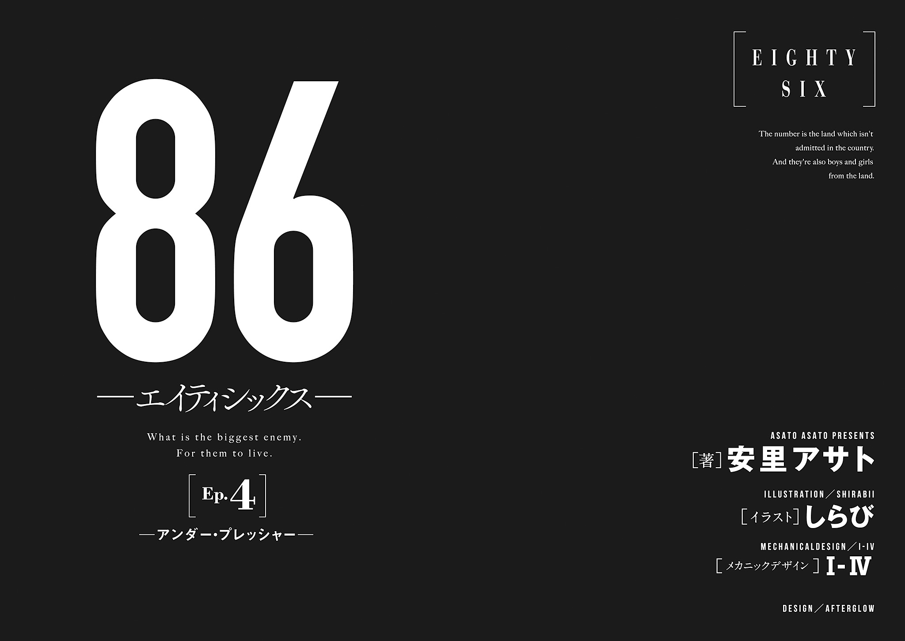
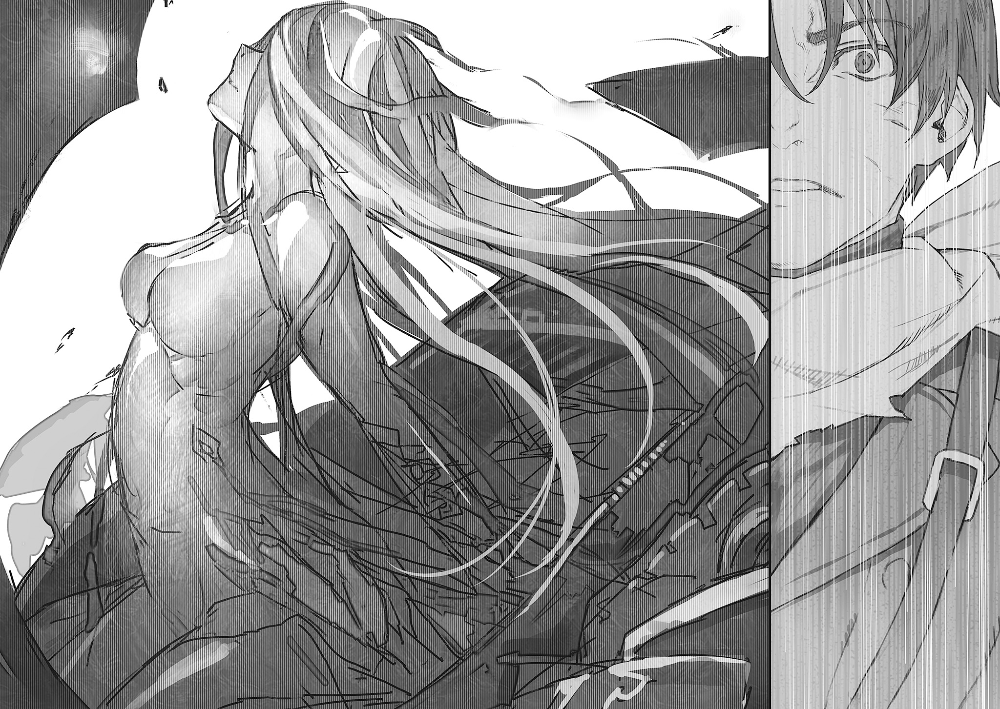

| 86─エイティシックス─Ep.4 ─アンダー・プレッシャー─ | |
| 安里アサト | |
本書（電子版）に掲載されているコンテンツ（ソフトウェア／プログラム／データ／情報を含む）の著作権およびその他の権利は、すべて株式会社ＫＡＤＯＫＡＷＡおよび正当な権利を有する第三者に帰属しています。
法律の定めがある場合または権利者の明示的な承諾がある場合を除き、これらのコンテンツを複製・転載、改変・編集、翻案・翻訳、放送・出版、公衆送信（送信可能化を含む）・再配信、販売・頒布、貸与等に使用することはできません。
敵は、共和国。
──ヴラディレーナ・ミリーゼ 『回顧録』
序章 ミッシング・イン・アクション
──リッタ。
幼なじみのあの子は、アネット──アンリエッタ・ペンローズのことを、そう呼んでいた。
いつからかはアネット自身も知らない。覚えている限り最初からそうだったし、そもそも気がついたら隣にいたような、そんな間柄だった。
多分、言葉を覚えたてで舌足らずだった頃には、アンリエッタという名前は呼びにくかったのだろう。実際アネットも共和国人には馴染みのない、その子のシンエイという名前をうまく呼べずに、シン、と愛称で呼んでいた。それくらい幼い頃から、いつも一緒にいた相手だった。
よく笑う、明るい子だった。
年の離れたお兄さんが甘やかすから、年の割に甘えん坊で泣き虫で。今から思えば家族の誰もから愛情一杯に育てられていたからだと如実にわかる、屈託のない、優しい子だった。
家が隣だったから毎日遊んだ。しょっちゅう喧嘩をして、翌日には仲直りしてまた遊んで。大きくなってもきっといつまでもこんな風にいられるのだろうと漠然と信じていられるほど、互いに一番仲のいい友達だった。
十一年前のあの運命の日に、永遠に喪われてしまった。
そう、思っていた、のに。
輸送機を降りると、出迎えだろうギアーデ連邦軍の士官が待っている。
見やってアネットは白銀色の目をわずかに眇めた。
瀟洒なサンマグノリア共和国軍の紺青の軍服とはまるで違う、質実かつ威圧的な鋼色の軍服。ホルスターのやや大型の自動拳銃が違和感なく馴染み、春の日差しの照り返しがきつい滑走路に、眉一つ動かさず鋼色の影のように立つ。
連邦は〈レギオン〉の攻勢に対し、この十一年真っ向から立ち向かってきたという。この士官もまたその歴戦を無言のままに示して、細身の体軀は野生の獣のように鍛えられ、制帽の下の冷徹な眼差し。
けれど、実際の年齢はアネットとそう変わらないだろう。本来任官前に施される高等教育を、従軍しながら学ぶ連邦軍特有の少年士官──特士士官というやつか。
自国民を人型の家畜と定義し、戦場に追いやった共和国は論外だが......連邦とて、非道すれすれのやり口でしか、もはや戦線を維持できはしないらしい。
視線を向けたアネットに、訓練の行き届いた無駄一つない所作で敬礼を送った。
「アンリエッタ・ペンローズ少佐、ですね」
「ええ」
「お迎えに上がりました」
声音は眼差しの印象と同じ、突き放した淡々とした響きだ。他国からの客員士官を迎えるにはぎりぎりの、必要最低限の礼儀。
その方がいい。馴れあうのはまっぴらだ。
......そんな資格なんて、自分にはないから。
元々白系種が人口の大多数を占め、十一年前からは白系種以外の人種が国内に存在しなくなった共和国とは異なり、連邦は古くからの多民族国家だ。夜黒種と焰紅種の混血なのだろう、漆黒の髪と血赤の双眸に、そっと目を背けた。
幼なじみのあの子と、......奇しくも、同じ。
「そ。ありがとう」
きびきびと歩み寄ってきた壮年の曹長に、手荷物のトランクを渡す。
それから士官に一瞥をくれた。
「大尉。あなたの名前を、まだ聞いてないんだけど？」
襟の階級章を確認して問う。
民間用の旅客機と違い、軍用の輸送機内部はひどくやかましい。座席もパイプを組み合わせただけの狭く硬いものだ。その中に、数時間。疲労から声は思いの外に尖って響く。
「失礼を」
けれど士官は気にした風もない。
淡々と頷き、その淡白さのまま静かに応えた。
冷徹に、突き放した。他国軍所属の見知らぬ士官に向ける眼差しと声音で。
その名を。
「第八六独立機動打撃群、戦隊総隊長、兼、本部付戦隊〝スピアヘッド〟戦隊長、シンエイ・ノウゼン大尉です。──ペンローズ少佐」

第一章 コール・オン・デューティ
先の作戦の死傷者総数は四個軍団数十万人の実に六割にも上り、輸送能力が追いつかずに長期間死体置き場となっていた西方方面軍統合司令部基地は、未だ薄く死臭が漂う。
「──第八六独立機動打撃群」
季節はもう春だというのに奇妙に冷えたその空気の中、第一七七機甲師団師団長、兼、旧サンマグノリア共和国救援派遣軍司令官リヒャルト・アルトナー少将はその名を口に上らせる。
「〈レギンレイヴ〉を運用し、〈レギオン〉重点の制圧に投入される独立機動部隊。エイティシックスたちで編成された事実上の外人部隊が、......彼らの女王を迎え、いよいよ動き出すか」
件の〝女王〟──旧共和国からの客員士官が泊まる客室の方に向けていた視線を外し、代用コーヒーの湯気と香気越しに会話の相手を見やった。
「うまくいくと思うか？」
「少なくとも、戦力的な懸念はないな」
応じる西方方面軍参謀長、ヴィレム・エーレンフリート准将は常と変らぬ涼しげな表情だ。帝国貴種特有の端整な白貌に漂う、鋭利で冷ややかな薄笑みの気配。
「保護したエイティシックスは、大半が彼らの言う〝号持ち〟──年間生存率〇・一パーセント以下の八六区の戦場を、何年にも亘り生き残ってきた古参兵たちだ。正規の訓練を受けた我が連邦軍の兵どもと比べても、精鋭と評して過言ではない。純粋な戦力評価の観点から言えば、活用しない手はないな」
代用コーヒーとはいえ、将官の彼らに供されるそれは副官の手で丁寧に淹れられ、白磁のコーヒーカップに注がれた優雅なものだ。何か香料を加えているのか、かすかに甘く花の香りを漂わせるそれをゆっくりと楽しみ、ヴィレム参謀長は再び口を開いた。
「〈レギンレイヴ〉についても、おかげで有効活用の目処がついた。機動性能だけでいえば、〈レギオン〉最速の近接猟兵型にも匹敵する代物だ。エイティシックスたちのおかげで貴重なオペレーターを喰い潰されず使えるようになったのは、実にありがたいな」
「私が言っているのは彼らエイティシックスの有り様についてだ、ヴィレム」
コーヒーカップをソーサーに置いてリヒャルト少将は言う。紙のように薄い白磁の器が、独特の澄んだ高い音色を奏でる。
「平和を知らず、祖国を持たず、守るものの一つもないままに戦場の死線の真上に立つ。......我々連邦軍人と同じ場所に置くだけで軋轢を生じるような彼らが、本当に、我ら連邦の剣としてこれからやっていけると思うか？」
意図せずして、最初に保護された五人の少年兵たちが試金石となった形だ。
平穏な暮らしを与えられながらそれを選ばず──選ぶことができず。己が身を省みぬ勇戦とただ己が誇りのためだけに戦う姿勢から友軍にも畏れられ。並ぶものなき戦功を立てながらついに連邦軍正規部隊とは共に戦えなくなった、〝共和国に造り出された化物ども〟が。
戦場で育った彼らをただ平和の中に放り込んでも、戸惑い、いずれ窒息してしまうだけとは、今はわかっているけれど。
「良い猟犬とはえてして気性が荒いものだ。それを躾けて正しく獲物に向かわせるのは飼い主の技量だ、先輩」
いかにも貴族的な、人を人とも思わぬ言い回しにリヒャルト少将は目を剝く。さすがに白い目を向けた先、ヴィレム参謀長は優雅に肩をすくめる。
「──たしかに、平和に慣れてもらわねばこの戦争が終わった後、互いに困ることになる。我々とて、戦後大量の犯罪者予備軍を抱えたくはない」
リヒャルト少将は片眉を上げる。
「意外だな、ヴィレム。貴様のことだ、『解決策は一人一発の銃弾』とでも言うかと思ったが」
「加えて死体を焼く燃料代と処理担当者のメンタルケア、失踪を誤魔化す事務作業と関係者全員の口止め料が要るな。それでも露見する時はするだろう。......共和国がそうなったように」
先の電磁加速砲型討伐作戦後、連合王国や盟約同盟、共和国以外にも、幾つかの国や地域の生残が確認された。
その全ての国と地域が、いまや共和国の行った非道を知っている。
共和国ではマイノリティだったエイティシックス──有色種だが、他国においては同じ色彩を持つ同胞だ。その彼らに加えられた、史上最悪といっても過言ではない苛烈な迫害の詳細を。
悪名は長きに亘り──無論、人類が生き残れればの話だが──消えはするまい。
「それに比べれば平和への適応訓練と、ついでに特士士官相当の教育を施してやる方がまだしも有益だ。うまくすれば一個旅団分の未来ある若者が手に入る。......それに」
見上げる漆黒の隻眼を見返して、参謀長はふと、笑みを消した。
「電磁加速砲型の討伐に、共和国の救出。市民どもは戦勝ムードだが、戦況はむしろ悪化している。戦死者の増大に西方方面軍の戦力低下、戦時増税──共和国に矛先が向いている今のうちにせめて役立つ猟犬となれねば、......いずれ困るのはエイティシックスの方だろうな」
†
かつて何度も見た、悪夢があった。
どことも知れぬ荒野の果てだ。荒れ果て焼け爛れた戦野の彼方だ。
津波のように押し寄せる鉄色の怪物の大群と戦う、乾いた骨の色をした首のない骸骨たち。
補給も支援もない行軍に、骸骨たちはぼろぼろに傷つき、草臥れはて、何より絶望的なまでの戦力差だ。死戦空しく一機、また一機と撃破され、最後に残った白兵戦型の一機が、重戦車型の群に取り囲まれて無惨に引き裂かれる。
折れ砕けた白兵兵装の高周波ブレードが、名もない墓標のように地に突き立つ。
惨劇は終わらない。ひしゃげたキャノピを〈レギオン〉が寄ってたかって引き剝がし、どろりと溢れ出た異様なほどの鮮血の中から、壊れた人形のように力無いプロセッサーの遺体を引きずり出す。死者に払われて然るべき敬意も尊厳も何もなく、首を奪い去るためにその遺骸をばらばらに引き千切る。
彼らの顔を、レーナは知らない。
だから摑み出された砂漠迷彩の野戦服の人影が〈レギオン〉たちに引き裂かれてもなお、彼の顔は見えない。
最後まで、レーナは見ているだけだ。声も届かず、砲弾一発の支援もできず、彼らが殺されていくのをなす術もなく見ているだけ。
何度、その名を叫んで夜中に飛び起きただろう。
繫がることは決してないと知りながら縋るようにレイドデバイスを着け、知覚同調を起動して、思ったとおり応答がないことに、それでもなお打ちのめされたことも。
目にしていないだけ、知らないだけで、必ず起きたはずの現実だ。自分には想像もつかないだけで、実際にはもっと残酷な終わりだったかもしれない。そう思っては独りうち震えて。
きっともう二度と、あの夢を見ることはない。
ギアーデ連邦西方方面軍・統合司令部基地の朝の客室で、レーナは身支度を整える。
糊の利いたブラウスのボタンを喉元まで締め、黒染めにした軍服の上着を羽織る。腕章を、ガンベルトを、制帽までをきちりと身に着け、一房だけを血の赤に染めた髪を払った。
戦に臨む騎士が、一つ一つ鎧を身に着けていくように。
覚悟を以て。
決然と。
鏡の中の、白銀色の長い髪と同じ色の双眸。彼らだけ死なせた部下の喪の黒衣と、彼らにだけ流させた血の真紅。その色彩を纏う、硬質で苛烈な〝鮮血の女王〟の姿。
タイを締めたところで、慎ましやかなノックの音が朝の静寂を破った。
「──大佐？」
レーナは静かに微笑んだ。
彼の顔を、レーナは知らない。......これまでずっと知らなかった。
けれど、声は。
二年前の半年間、何度も聞いた。この二年ずっと、密やかな支えだった。耳に心地よい正確な発声と発音の、静謐で静穏な、その声は。
この声が今、確かにそこにいてくれるから。あんな悪夢はもう、二度と見ない。
「起きています。......どうぞ」
一瞬、躊躇のような間が空く。ややあって静かに扉が開き、シンが顔を覗かせた。
夜黒種の漆黒の髪と、焰紅種の血赤の双眸。レイと──彼の年の離れた兄と丁度真逆の色彩なのだとは、昨日会って初めて知った。
真新しい、けれど着慣れた様子の鋼色の連邦軍服。細身の体軀と白皙の容貌は声音から想像していたとおりの物静かな少年のそれだったが、反面、体格は長きに亘り、今なお続く過酷な戦場暮らしを示して精悍だ。
「大佐。〇八二五に、本拠基地への輸送機が出ます。それまでに」
「ええ」
短く応じつつ、振り返った。
黒衣を纏ったレーナを映してわずかに翳る紅い瞳を見返し、小さく頷く。
「準備はできています。──行きましょう」
戦闘属領と呼ばれる、旧帝国特有の国境線上の空白地帯と、生産を司る旧属領の境。新設されたリュストカマー基地が、レーナが配属される第八六独立機動打撃群の本拠だ。
西側の小高い山から広がる森に抱かれる、大きな基地だ。少し離れて流れる河を挟んだ向こうに街の影を臨む、かつての城塞跡。
一万名弱のプロセッサーと大隊規模の旅団支援要員、千名余りの基地要員を収容する隊舎群に、〈レギンレイヴ〉のための幾つもの格納庫。輸送機離着陸のための滑走路と、森を隔てて街とは反対側に広がる、広大な演習場。
あえてそれなりの規模の街の傍に建設されたのは、輸送や交通の便もさることながら、ここに配属されるエイティシックスの社会復帰を考慮してのことだという。ごく幼いうちから長きに亘って戦場に閉じ込められてきた彼らを、いつか再び平和の内に帰すための。
半年前に連邦に保護されたエイティシックスたちは配属前で、まだ各訓練校──特士校、というらしい──にいるのだという。先任扱いで事務仕事やらが残っているからとライデンたち四人は早々に隊舎に消え、シン一人が案内役として残る。
照り返しのきつい滑走路で、係の伍長が下ろしてくれたトランクと猫のキャリーバッグを受け取ろうとしたら、シンが横から手を出した。
「荷物、お持ちします」
「え、いいですよ。大した量でもありませんし」
無視してひょいと取り上げられ、そのまま歩き出されてしまう。
そこまでしてもらいながら取り返すのもどうかと思ったので、レーナは素直に好意に甘えることにした。
「ありがとうございます」
「いえ」
突き放したように素っ気ない口調が、......けれど、至極懐かしい。
一歩先を行く、頭半分高い位置にある横顔を、レーナは堪えきれない笑みに唇を綻ばせて見上げる。
鋼色の軍服の襟元にわずかに覗く、赤い痕にふと、目が留まった。
斬首の後、無理矢理縫い繫いだかのような、首を一周する無惨な傷痕。
昔の戦傷の痕だろうか。ずいぶん古い痕だった。
昨日、朽ち果てた四機の〈ジャガーノート〉と五七六人の戦死者の墓標の傍らで再会してから、実はシンたちとはあまり話をできていない。
昨日はあの後、レーナは西方方面軍統合司令部基地に迎えられ、そうなれば一応の共和国側の代表者であるレーナには相応の社交というものがある。そうそう旧交を温めてはいられない。シンと話が出来たのは基地に向かう車の中でだけ、二年前に特別偵察に出て、どうやって連邦に辿りついたのか程度の話しかできなかった。
だから傷痕の由来についても聞いてはいないけれど、......多分、話してくれるまでは、聞かない方がいいのだろう。
体に残るほどの傷は、きっと、心にも同じかそれ以上の爪痕を残す。
そう容易く、触れて欲しいものではないだろうから。
向けたままの視線に気づいたのだろう、ふとシンが見返してきた。
「......なんですか？」
「いっ、いえ、」
見ているだけで嬉しいだなんて、......いくらなんでも恥ずかしくてとても口にはできない。
頰を染めて目を伏せてしまったレーナをシンは少し不審げに見下ろしていたが、結局始めた会話をそのまま保たせるように、言葉を繫いだ。
「そういえば、昇進したのですね。おめでとうございます」
「ああ......」
無意識に襟の階級章に触れて、レーナははにかむ。
佐官への昇進は狭き門だが、わけても幹部階級である大佐への昇進は極めて難しい。平時に比べて戦時の任官は無茶苦茶になりがちとはいえ、十代の大佐はさすがに前代未聞だが。
「形だけです。他国に派遣するのに、このくらいでもなければ恰好がつかないからと」
逆に言えば、恰好もつかないような尉官ごときしか、自国への救援部隊の指揮官に立候補しなかったということでもある。
グラン・ミュールが崩壊して半年余り。残念ながら共和国は未だ、誰かが戦って助けてくれるのを待っているだけで、自ら戦う意志を持たぬ者が多い。
連邦からの救援派遣軍は北部行政区を奪還後は順次撤収し、現在教練中の共和国の自弁戦力に国防を移管する予定だが、......今のままではどうなることか。
「ノウゼン大尉こそ、連邦軍での戦歴はこの二年だけでしょう。それで大尉というのは、随分功績を立てたのではありませんか？」
「......上の階級が空いただけですし、それだけ連邦もでたらめということです」
淡く苦笑して肩をすくめる。
その横顔を、レーナは少し意外な心持ちで見上げる。
以前に比べてずいぶん表情が和らいだようだと、その時には顔も知らなかったというのにそう思う。
二年前、言葉だけを交わしていたエイティシックスの少年は──今から思えば、脆く砕け落ちそうなほどにぴんと張りつめた何かを、冷徹な声音の下に隠していた。
眼前に迫る自らの死の刻への、そのカウントダウンと。
機械仕掛けの亡霊の裡に囚われた兄を救わねばならぬ目的と。
そのどちらからも解放されて、今は少しでも、楽になれたのだろうか。
戦いたくないと思いながら討たねばならなかった兄を──今はただ、懐かしく想えるようになったのだろうか。
「作戦指揮官に着任する以上、自前の幕僚や副官くらいは連れてくるものかと思っていましたが。お一人なのですね」
「誰も志願しなかったので。一応、この後に志願したプロセッサーと技術士官の、......アンリエッタ・ペンローズ少佐が合流する予定です」
つい、その名前は声を低めてしまった。
「......？ ああ、知覚同調の技術顧問だそうですね」
シンは一瞬怪訝そうにしてから相槌を打つ。レーナがアネットの名を出す前にわずかに口ごもった理由が、心底からわからない様子だ。
レーナはそんなシンを横目に見上げる。
一般的にはアンリエッタをアネットとは略さないから、あえてフルネームで伝えてみたのだけれど。
......もしかしたら、会ったばかりの頃。アネットが一般的でないその愛称で呼んでと言ったのは、かつて違う愛称で彼女を呼んでいた人を、思い出したくなかったからかもしれない。
彼女が傷つけて彼女が見捨てた、......それきり二度と会えなくなってしまった、幼なじみの少年を。
「......やはり、覚えていないのですね」
「何を、ですか？」
「いえ」
小さく首を振って話を打ち切る。
所詮、この話については自分は部外者だ。
話したいなら、アネットから話すべきだ。
しばし落ちた沈黙に、みー、と割りこむようにキャリーバッグの中の猫が鳴く。見下ろしてシンが一つ瞬く。
「猫......ですか？」
「貴方たちがスピアヘッド戦隊の隊舎で飼っていた子です」
「ああ」
少しも懐かしそうな顔をしないのが、らしいと言えばらしい。
猫の方は、いなくなっちゃった大好きなお兄ちゃんだ！ とどうやら気づいたようで、みぃみぃにゃあにゃあ大興奮だ。
「名前は何にしたんですか」
「テルモピュライ」
略してティピーです、と続けたレーナに、シンはしばらく沈黙した。
ちなみに小勢の軍隊が圧倒的多数の敵軍に立ち向かい、全員玉砕した戦場の名前である。
「......せめて、レオニダスとかではなく？」
「ええ」
「意外とネーミングセンス悪いんですね」
「大尉に言われたくはありません。この子は見送った側なんですから、テルモピュライの戦いで玉砕したレオニダス王ではないでしょう？」
「それはそうですが、さすがに地名は......」
「じゃあ、大尉はこの子のことなんて呼んでいたんですか？ 特別偵察の前には」
スピアヘッド戦隊のプロセッサー達は、戦友ではないこの猫に決まった名前を付けていず、その中でもシンはその時読んでいる本の著者名で呼んでいた。
シンはしばらく考えた。
「たしか......オーガイ、だったかと」
「......ひょっとして、読んでいたの『高瀬舟』ですか......!? そっちの方がよっぽどじゃないですか......！」
まさかの悪趣味にレーナは呻く。主題は違うが、乱暴に要約すれば兄による弟殺しの話である。おそらくは相討ちになるのも、あるいは返り討ちにあうのも覚悟の決意で、特別偵察においてレイに──重戦車型と化した兄に挑むつもりだった以上、もはや悪趣味を通り越して自虐趣味の域である。
「たまたま手に取ったから読んでいただけで、深い意味は......と、」
言いさしてシンは足を止める。レーナの執務室と居室のある第一隊舎に繫がる、基地最大の格納庫の中だ。収められるべきフェルドレスはまだ輸送機の中でがらんどうの、シャッターの開け放された入口付近。ガントリークレーンが複数配されて天井は高く、二階に相当する位置をぐるりとキャットウォークが取り巻いている。
「......大佐」
「？ なんですか？」
「怒るのは当然ですが、おれだけにしてもらえませんか」
「はい？」
戦車砲みたいな胴間声が、突然がなった。
「構え、狙え！」
咄嗟に身構えたレーナが見たのは。
「撃て！」
構えられた銃とかではなく。
頭上に広がる大量の水だった。
「きゃあああああっ!?」
当然、直撃。
バスタブをひっくり返したような水量を頭から浴びて、レーナは一瞬で濡れ鼠になった。
見ればキャットウォークにはいつのまにかずらりと鋼色の軍服や作業服の男女が並んで、それぞれ空のバケツを手にしている。
あのバケツの水を、ぶっかけられたのだろうが。
それ以上は理解が追いつかず、呆然としていたレーナの元に、号令と同時に外に逃げていたシンが戻ってきた。
荷物を持ってくれたのは、どうやらこのためだったらしい。何らかの手違いがあったものか、それともさすがの彼もこれは気が咎めるのか、実に気まずげな、ばつの悪そうな顔をしている。
ちなみに猫は薄情にもご主人様の惨状には目もくれず、まだシンの気をひこうと甘えた鳴き声を上げていたりする。
「ええと......とりあえず、ただの水ですからご心配なく。......そうだな、ベルノルト曹長」
「サー！ そこの水道で汲みたてであります！」
キャットウォーク中央に立つ壮年の軍人が一歩進み出てがなった。胸を張って（何か誇らしいとかではなく、軍人の習い性だ）続ける。
「なお、こっそりペンキを入れた馬鹿者が二名いましたんで、懲罰として自分で浴びさせております！」
「ああ......」
端にいる真っ赤と真っ白はそれでか。
横目に見やってシンは口を開く。曹長のように声は張らないのに、命令慣れた声は不思議とよく通る。
「排水が詰まるから、外の水道で落としてからシャワーを使え。それと、床に零した分は責任を持って掃除しておくように」
「「イェッサー！」」
やけっぱちの大音声が返り、対照的にシンは淡々と頷く。
レーナはまだ呆然としている。
「......新任の指揮官に対する、連邦軍伝統の歓迎か何かですか......？」
「違います。そもそも設立十年程度の連邦軍に、伝統も何も......」
「ノウゼン大尉。そんなどうでもいいつっこみなんかよりこっちが先でしょ」
歩み寄ってきた妙齢の女性士官が、抱えてきたバスタオルを広げた。
見返してレーナはぎょっとする。
連邦西方方面軍、第八六独立機動打撃群旅団長、グレーテ・ヴェンツェル大佐。
平たく言えば、上官だ。
「ヴェンツェル大佐!? ──失礼を......」
「ああ、そういうのはいいから。指揮系統上は私が上官だけど、同じ大佐なんだし」
一枚をレーナの頭にかぶせ、広げたもう一枚でぱたぱたとずぶ濡れの軍服の水気を取っていく。洗濯したてでよく乾いた、日向のいい匂いがした。
「着替えは一式部屋に広げさせて、バスタブに湯も張らせてあるわ。......タオルを用意しておくまでは命じてあったみたいだけど、ここまでできてようやく合格点よ、大尉」
「......すみません」
「そういう気の回りきらないところは、まだまだ男の子って感じで可愛いけど。これからはエスコートの仕方も学ばないと、せっかく会えたのに嫌われちゃうわよ？」
「大佐、」
「あら失礼？ でも、仮にも作戦中に、通話内容がミッションレコーダに記録される連邦のフェルドレスの中で、私的な会話をしていた大尉が全部悪いのよ？」
ぐっとシンが喉を鳴らす。グレーテはころころと笑うと、湿ったバスタオルを抱えて去っていった。キャットウォークの曹長が慌てて奥に引っ込む。
「......大佐、あとは自分がやりますんで」
「やあねベルノルト曹長。若い女の子の使ったタオルを、どうするつもり？」
「シャレになんねえ冗談はやめてくださいね!? よりにもよって隊長の前で！ うちのちびどもに毛が生えた程度の小娘なんか、何とも思いませんって！」
「毛って」
「あああああああ何でもありません！ つーかそういう意味じゃねえですよ！」
佐官と下士官とは思えない、賑やかなやりとりが遠ざかる。
見送って、シンはどこか気の抜けたような様子で言う。
「とりあえず、着替えてください。......部屋までご案内します」
第一隊舎最上階のレーナの居室は二間続きで、廊下に面した一室が執務室兼応接室、奥の一室が寝室だ。
軍事基地とはいえ戦線から百キロ以上も離れた安全地帯だ。防衛よりも居住性と指揮官の威厳を重視した居室は広々として、配属されるのが女性であることを意識してか、繊細な白蝶貝細工の揃いの調度が美しい。
トランクとキャリーバッグを執務室においてシンは出て行き、黒猫は初めての場所にちょっと警戒しつつさっそく部屋の中を探検して回っている。
四隅が色硝子になった執務室の大窓からは、河の向こうの街が一望できた。
街の一角に新たに建設されているのは学校だという。ごく幼いうちに強制収容所に送られ、まともに初等教育も受けていないエイティシックスたちのための、特別な施設。旅団規模の部隊には通常一個が配置される精神衛生分隊も、この隊では二個に増員されている。
本来ならそういうケアは、加害者である共和国が負担するべきものなのに。
首を振り、寝室から繫がるバスルームに向かった。
色タイルのバスルームは湯気が立ちこめ、何か花の精油がバスタブに垂らされて清冽ないい香りがした。薄く施した化粧を落とし、洒落た意匠のカランを捻って頭から湯を浴びる。
そういえばこうなった顚末についての説明がまだ途中だったと気がついて、バスルームの扉を開け、バスタオルの上に置いていたレイドデバイスをつけて、知覚同調を起動した。
対象は無論、今は執務室の外の廊下にいるシンだ。
「大尉、あの」
無言で切られた。
再度知覚同調を起動して、繫がるなり言った。
「どうして切るんですか」
辟易とした声が返ってきた。
『むしろ、どうして今同調してくるんですか』
「話が途中でしたから」
『......後で構いません。せめてシャワーを終えてからにしてください』
レーナは食いさがる。
「どうして、シャワー中はダメなんですか」
『どうしてって......』
絶句するような間が空く。畳みかけるようにレーナは言った。
「大尉は平気だったじゃないですか。二年前のスピアヘッド戦隊の隊舎で、〈黒羊〉や〈羊飼い〉について聞いた時、その、......大尉がシャワー中に、繫いでしまって」
『ああ......。ですが、大佐は平気じゃないでしょう。だったら無理しなくて構いません』
それは。
たしかにかなり、恥ずかしいけれど。
互いの意識を経由して主に聴覚を同調させる知覚同調は、顔を合わせて話している程度の感情も伝わる。
つまりレーナのその『かなり恥ずかしい』という気持ちも当然、ダイレクトにシンに伝わってしまって、シンにとっても落ち着かないのだとレーナは気づかない。
加えて水音やら熱いくらいのお湯に無意識に零れてしまった吐息やら、濡れた繻子の長い髪が玉の膚を滑り落ちていく音やら。
「でっ、ですが今後はそういうわけにも、あっ」
また無言で切られた。
レイドデバイスも外したらしく、今度は繫がらなかった。
グレーテの執務室に書類を提出しに最上階まで上がってきたライデンは、青い地に銀色の花模様の絨毯の敷かれた廊下にシンが頽れているのに足を止める。
一つ手前の作戦指揮官の──レーナの居室の扉の前。例の〝歓迎〟の後だから着替えるのを待っていたのだろうが、なにやらそのまま膝から崩れ落ちた様子だ。
「......何やってんだ、お前」
「.............................................何でもない」
言葉とは裏腹に、呻くようにシンは答える。
結局バスルームを出てブラウスとスカートまでを身に着けて執務室に抜け、内側から廊下に繫がる扉をこつこつ叩いて呼びかけてようやく、シンは応じてくれた。
「..................まさかとは思いますが、まだ服を着てないということはありませんよね......？」
「着てます......！」
「ならいいですが......」
盗聴防止のため音を通しにくい、分厚い樫材の扉である。髪を乾かすのと化粧直しに洗面所に戻ったこともあり、再び知覚同調を通じての会話となった。
『......先程の件ですが』
とはいえお互いに色々気まずかったので、会話が再開したのは随分経ってからだ。使い終えたドライヤーを置き、ブラシを使いながらレーナは耳を傾ける。
『機動打撃群の戦闘要員はほとんどが志願したエイティシックスですが、それ以外の要員についてはその限りではありません。彼らは命令を受け、配属されただけの連邦軍人で、......その中には共和国に知人や親類がいた者もいます』
その言葉にレーナは息を詰める。
連邦に保護されたエイティシックスは、およそ一万人弱。
大規模な一個旅団規模の人数。けれど、元々共和国に暮らした数百万人という有色種の人口に比べれば、あまりにもわずかな人数。
たったそれだけしか、迫害を生き残れなかった。
それ以外の全員が、強制収容所で、グラン・ミュールの建設で、八六区の戦場で、死んだ。
共和国によって虐殺された。
墓標も入る墓さえもない、人の形の家畜と、扱われたまま。
〈レギオン〉戦争以前、共和国と周辺諸国の間には活発な人的交流があった。
当然、国境を跨いだ友人や血縁も多くいたはずで、その彼らが、縁を結んだ相手がそんな扱いを受けて殺されたと知ったなら。
『軍人にとって命令は絶対ですが、だからといって共和国人を上官と仰ぐ不満が消えるものではない。大佐の着任が決まった時から、おれやベルノルト曹長、ヴェンツェル大佐の元にも、不満や反対意見は寄せられていました』
キャットウォークに並んだ、年齢も民族も様々な連邦軍人たちを思い出した。
その一様に冷たく冷えた、様々な色彩の双眸を。
『そういうものは、抑えつけて消えるものではありません。抑圧したせいで暴発されても、むしろ厄介です。それで着任時の一度きり、という条件で〝報復〟を許可しました。詳細を決めたのもヴェンツェル大佐に許可を取ったのも、全ておれです。......怒るならおれ一人に、というのは、そういうことです』
レーナは首を振った。
報復といっても汲んだばかりの、バケツ一杯のただの水。もっと過激な提案だって幾らでも出たはずなのに、きっとそれらを全部止めてくれて。信頼を置いているのだろう、自身の副官の監督の上で。
そうした制御の利かない本当の報復から、レーナを庇うために。
シンこそが本当は、共和国とその民に報復していいはずの、エイティシックスの一人なのに。
「......わたしが受けるべき、当然の罰です。怒ったりなんて......」
『違います』
淡々と、シンはレーナの自責を切って捨てた。
かすかに、苛立ちのような響きを帯びた声だった。
憤りに変わる直前の、不快感のような。
『共和国に報復してもいいのは、おれたちエイティシックスだけです。関係者ではあっても当事者ではない連邦人に、報復の権利などない。......彼ら自身がどう思おうが、彼らのしたことは正義や制裁を気取っただけの、単なる理不尽です』
「大尉、」
『連邦も所詮は人間の国です。国是に正義を掲げたからといって、......正義でも理想でも、ありはしません』
憤りのような、哀しみのような、......どちらをも通り過ぎた諦観のような、乾いた、荒涼とした声音だった。
『それに、......以前にも申し上げたと思いますが、八六区のあの状況は大佐が作ったものでも、大佐一人の力で撤回できたものでもありませんでした。大佐に責のあることじゃない。貴女一人が責められるべき話ではありません』
だから、と、黙り込んでしまったレーナに、あくまで淡々とシンは言った。
『先の報復は、大佐にとっては全くの不当な暴力です。いわれのない仕打ちをそれでも甘んじて受けたのだから、これ以降は引け目を感じる必要などない。今後、誰かに無礼を働かれたら、連邦軍の軍規が定めたとおりに𠮟責し罰してください。貴女にはその権限と責任があります』
責任。
その言葉の選び方が、いかにも彼らしかった。
権限と言われただけなら、レーナはこの説明を受けていてもなお、その行使を躊躇ったろう。
けれど責任なら、それはやらなければいけないことだ。そこにレーナの心情など、介在する余地はない。
連邦軍人たちの無分別な〝報復〟から、レーナを守るために。
同時に、レーナが自責の念に囚われないようにと。
冷徹な死神の顔をして、無関心に突き放すそぶりをしながら......シンは本当は、酷く優しい。
受けるこちらが、時に苦しくなるくらいに。
「......ありがとうございます」
ベッドの上に広げられていた着替えは共和国軍正規の紺青の軍服で、まあたしかに、黒染めにした改造軍服など事前に用意できるはずもない。
大佐の襟章のついたそれを腕章まできっちり身に着け、何となく姿見の前でくるりと回ってみてから、廊下に続く扉を開けた。
「すみません、大尉。お待たせしました」
待っている間も手持ち無沙汰にしているわけではなかったらしい。展開していたホログラムの電子書類をデバイスを閉じて消し、こちらを見やったシンが最前とは違う恰好にか一つ瞬く。
そういえば、シンの前でこの軍服を着るのは初めてなのか。昨日再会した時も、今日ついさっきまでも、黒染めにした軍服を着ていたから。
......どうしてさっき、わざわざ自分の恰好を確認したのか、わかってしまった気がした。
なにか変なところはないか、なんて。まるで。
初めてデートに行く女の子みたいに。
多分、真っ赤になってしまったのだろう。シンが不思議そうに覗き込んできた。
「......大佐？」
「いっ、いえ、なんでも」
自分でも全くなんでもないとは思えない、ひっくり返った声が出た。
意識してしまったせいか、これまで気にならなかった──あるいは、無意識に意識するまいとしていた──些細なことが、無性に気になり始めた。
そもそも百キロもの距離と知覚同調越しの声でしかシンを知らなかったレーナには、思いがけず対面の叶った今のこの状態は、いささかならず刺激が強すぎるのだ。
声が近い。なにしろ身長差の関係で、シンの口元は丁度レーナの耳元にくる。背の高さを、どうしても意識してしまう。
自分より少し高い体温がすぐ傍にあって、その熱がわずかに伝わってくる。
目を向けていなくても、近くにいるとどうしようもなくわかってしまう。
男の子ってこんなに体温が高いんだ、と知って、なぜかものすごくドキドキした。
気取られないように胸に手を当てて息を吸って吐いて、どうにか頰の火照りを鎮めてから何事もなかった素振りで言った。
「基地を、案内してくれるのですよね。行きまひょう」
......やっぱり声はひっくり返った。
堪えきれなかった様子でシンが零した笑みの気配から無理矢理意識を引き剝がし、寄木の床をパンプスの靴音をこつこつ鳴らして歩き出す。半歩遅れて、こちらは無音のままに追従する静かな気配。
足音を立てない癖があるんだ、と気づいて、またなぜかドキドキした。
「......何をやっておるのじゃ、あの二人は」
ベッドとデスクとクローゼット、二部屋で共用のバスルームで一杯になる、下級士官用の小さな個室。
ベッドにかけて床に届かない足をぷらぷらさせ、血赤の双眸を虚空に据えてフレデリカは小さな頰を膨らませる。
「グレーテや参謀らとの顔合わせはともかく、状況説明室やら会議室やらをふらふらと。まるで逢引のようではないか。上官ともあろう者が、立場を利用してふしだらな......！」
「......いやあのさ、フレデリカ」
開け放した扉の枠に肘をついて、セオはげんなり言う。
「そっちこそ何やってるんだよ。また覗き見？」
途端に紅い瞳が勢いよくこちらを向いた。
見知った者の過去と現在を覗き見る彼女の異能が発動している間、その目は仄紅く輝くのだと、どうでもいいことに気づく。
「覗き見ではないわたわけ！ あの者がシンエイをあちらこちらと連れ回しておるゆえ、妙な真似をせぬかと見張っておるのじゃ！」
「普通に基地の案内でしょ。大佐は今日着任で、シンは直属の部下って扱いになるんだから、別に何もおかしくないじゃん」
「............そうであるが......」
「大体、フレデリカは例のシンの黒歴史、その場で見てたんだからわかってるでしょ」
連邦では全てのフェルドレスにはミッションレコーダが搭載され、各種センサとガンカメラ、機器の状態に加えて、インカムを通じた操縦士の会話も記録される。
当然、先の電磁加速砲型撃破後、互いと知らずに言葉を交わしたシンとレーナの会話も。
帰還後の第一七七機甲師団司令部基地でのデブリーフィング中、グレーテの悪戯でその音声記録を流された時のシンの様子といったらなかった。立ち上がろうとした瞬間に周りの全員で押さえ込んで、最後まできっちり聞いてやったが。
余談だが件のデータファイルは実に十年ぶりに確認された共和国の映像であり、共和国側の生存者との初接触の記録として、西方方面軍司令官たちの前でも再生されたそうである。
気の毒に。
「そうであるが！ やはり目の前にしてしまうと納得はいかんのじゃ！ 何となれば、共に過ごし、戦った時間はわらわの方が長いのであるぞ......ああっ!?」
突然フレデリカが勢いよく顔を上げた。
なにやら愕然と、彼女にしか見えないどこかの光景に見入っている。
それから不意に、邪な感じでにやぁっと笑った。
「......セオ。お腹が空いたのじゃ」
セオはにっこり微笑んだ。
「あーうん。そろそろお昼だもんね。今日いい天気だし、酒保で何か買って外で食べようか」
ちなみに軍基地内における売店のようなものである。
フレデリカは途端にあわあわした。
「あ、いや、そうではなく、その、」
「どーせ今シンが大佐食堂に連れてったから、それを邪魔してやろうって魂胆でしょ。バレバレなんだよね」
ああっ！ と背後で何やらクレナの悲鳴が聞こえて、目だけを後ろに向けるとクレナがご主人様を見つけた犬みたいに駆け出そうとしたところだ。
廊下の窓からは食堂が見える。フレデリカと同じものを見たらしい。
「えいっ」
で、トップスピードに達する前に、後ろからアンジュのタックルを喰らってびたんと倒れた。
「痛っ、ていうかちょっ、アンジュ放して、」
「だーめ。お邪魔虫はよくないわよクレナちゃん」
「痛だだだだ待ってアンジュきまってる関節きまってる痛い痛い痛い痛い痛い！」
大変微笑ましいふれあいの一部始終を確認して、セオは室内に目を戻す。
笑顔のつもりだったが、内心が表に出たらしい。フレデリカがびびって身を引いた。
「外で。食べようか。クレナとアンジュとライデンも一緒に」
「......ハイ」
連邦軍基地の食堂は基地、階級を問わず同じメニューが提供されるが、量については自分で調節するようにカフェテリア形式だ。
シンや配膳担当の兵員にあれこれ世話を焼かれつつ不器用に料理をよそい、レーナはまだ空席ばかりのテーブルの一つにつく。
特士士官のプロセッサーが大半を占めるこの基地では、レーナの今いる第一士官食堂が最も大きい。軍人、軍属の混じった給養要員が忙しく立ち働き、レーナを丸ごと煮込めそうな大鍋が今は一つ、厨房の奥でもうもうと湯気を上げている。
連邦と共和国は食文化が違うため、トレイの昼食はレーナには物珍しい内容だ。連邦特有の黒い重いパン。キノコのいい香りがぷんと立つクリームスープに、温野菜のサラダ、連邦南東部の郷土料理だという赤唐辛子煮込み。コーヒーとリンゴのタルト。トレイの中央ではスグリのソースがかかったステーキが、香ばしい匂いを立ち昇らせている。
鼻腔をくすぐる特有の、懐かしい匂いにレーナは瞬く。もしかして。
いそいそと切り分けて口に運び、白銀色の双眸が大きく見開かれた。
「おいしい......！」
つい声に出してしまったレーナに、シンはひどく嬉しそうに笑った。
「よかった」
「本物のお肉なんて久しぶりです。......鹿、ですか？」
淑女の慎みはとりあえず横に置いて、レーナは健啖ぶりを発揮する。
「ええ。......八五区内では食卓に上るのは合成食料だけだとライデンが言っていたので、そうじゃないかと思っていたんですが。要員総出で、裏の森に狩りに行った甲斐がありましたね」
「......まさか、わざわざ今日のために？」
「いえ。たまたまその日、基地のほぼ全員の手が空いていたので」
言いながらシンは結構な速さで料理を口に運んでいる。
シンとて成長期まっただ中の食べ盛りの少年である。トレイに盛られているのはレーナの倍はあろうかという量で、それがみるみる無くなっていくのはなかなか痛快だ。
やっぱり男の子なんだな、と、レーナは妙に微笑ましい気分になる。
「そうでなくても戦闘要員は、作戦がない間は割と暇ですから。八六区でも安全だとわかっていて動ける日には、総出で狩りや釣りに行くことはありましたよ」
「............」
意外と楽しそうだったのだな、とつい考えてしまって、レーナは慌ててその感想を振り払う。
見透かした様子でシンは苦笑した。
「そんな顔をしないでください。実際、八六区でも八六区なりに、楽しみがなかったわけじゃないんです」
征路を〈レギオン〉に、退路を共和国に鎖され。迫害と侮蔑に曝された果てに、課された五年の従軍期間の最後に必ず死ぬ。そんな、絶望しかないような戦場だったけれど。
「死ぬことが決まっているからといって、首を括られるまでの日を数えて生きるような無様はしない。どうせ死ぬなら悔いなく逝こうと──それまではせめて、笑っていようと。それがおれたちにできる、唯一の抵抗でしたから」
「............」
そう、だったかもしれない。
二年前。毎晩同調で言葉を交わしたスピアヘッド戦隊の彼らは、......毎晩、楽しげだった。
仲間同士の他愛もない雑談とじゃれ合いの気配。時折遠くでぎゃーぎゃー聞こえる喧嘩の声も、どこか微笑ましくて。
戦闘の合間の束の間の休息と、些細な出来事を楽しむのに、彼らは素直で貪欲だった。
誰にも称えられることなく、何を守ることもないままに。無意味に戦って無意味に死ぬしかない運命を、それでも彼らは、精一杯笑って生き抜こうとしていた。
「......釣り、わたしもやってみたいです」
シンは少し、悪戯っぽい顔をした。
「なら、餌の虫を取るところからですね」
「むし」
大抵の年頃の少女の例にもれず、レーナは虫が嫌いだ。特にうねうねしたものとわさわさしたものが。
「その......捕まえてくれたりとかは......」
「別に難しくはありませんよ。河原の石をひっくり返せばいくらでもいますから」
「..............................がんばります」
悲愴な面持ちで言ったレーナに、シンは──およそレーナが記憶している限り初めて──声を立てて笑った。
からかわれたと悟って、レーナは唇を尖らせる。
「......大尉、意外といじわるなんですね」
「失礼。あんまり引き攣った顔をするから、つい」
言いながらシンはまだくつくつ笑っている。
「虫が苦手なら、狩りの方が楽かもしれませんよ。さすがに捌けとは言いませんし、ライフルの扱いには慣れているでしょうから」
「アサルトライフルには、ですが......」
ふと、思い出してレーナはカトラリーを置いた。
「......第一五区の奪還作戦中に、共和国市民の避難所を管理する憲兵の方々が、狩りの獲物を振舞ってくださったことがあったんです。合成食料ばかりで飽きるだろうからと」
軍組織内の警察機構の他、捕虜・難民の収容や収容施設の設営管理も憲兵の職務だ。〈レギオン〉戦争では後者の役割は求められないから、久しぶりの任務にはりきったものらしい。
「ある程度年のいった共和国市民は喜んだのですが、......子供たちが、食べずに全部捨てたそうです。生臭い、こんなの食べられない、と言って」
「............」
〈レギオン〉戦争が始まったのが十一年前、白系種が八五区内に避難したのも同じくらいの頃だ。その後に生まれた子供たちは、全員、獣肉に限らず自然の食材を口にしたことがない。
味覚はごく幼いうちに、食べつけた味を元に完成されるという。
そうであるなら彼らは生涯、共和国の生産プラント以外で生産された食料を、グラン・ミュールの外のあらゆる文化の料理を、料理以外も、受けつけないのかもしれない。
レーナの懸念を聡く悟った様子で、シンが応じる。
「同じように、彼らは白系種以外の民族を目にしたことがない。......白系種以外を人間だと、そもそも認識もできないかもしれない......と？」
こくりとレーナは頷いた。
「この部隊の初任務は、共和国の北部行政区奪還作戦になるはずです。そんな状態の共和国で貴方たちを戦わせるのは、......正直、心配です」
共和国市民の排斥や、忌避の感情は。たとえ言葉に出されなくても、きっとエイティシックスたちに伝わってしまうだろうから。
「別に八六区で戦っていた時と、変わりはないかと思いますが......。それにしても、共和国では本当に、合成食料以外なかったのですね。家畜の安定供給は難しいにしても、鳩や兎くらいはいたでしょうに」
「......動物を捕まえる技術がありませんし、捌ける人間もほとんどいません。多分、捕まえて食べようという意識も無かったと思います」
エイティシックスに与えられていた無味乾燥な合成食料に対し、共和国内のそれはまだ食事の名に値するものだったのも大きかったろう。何とかましな物を食べたいと工夫を凝らす理由が、八五区内にはない。
「わたしはお料理もできませんから、あまり人のことは笑えませんけれど」
何分、元貴族ミリーゼ家の一人娘なレーナである。手が荒れるからと料理に限らず、家事の類は一切やらせてもらえなかった。
シンは淡々とマグカップの代用コーヒーに口をつける。
「おれも料理は、得意ではありませんが」
「えっ」
思わずレーナは見返してしまう。
なんとなく器用そうというか何でもできそうというか、苦手なことなど何もなさそうだと、勝手に思っていたのだが。
「意外......です」
「全くできないわけではないのですが。ライデンが言うには、どうも少し」
かたりとマグカップをテーブルに置き、シンは口元に手をやった。
「......味覚が鈍いらしいので」
微妙に不本意そうな口調からして、本人に自覚はないらしい。
視力や聴覚と異なり、数値化して他人と比較することはあまりない感覚なので、当然といえば当然だが。
あと、おそらくライデンは『味覚が鈍い』という穏便な言い回しはしなかったと思う。
「味つけが適当だったのは否定しませんし、割った卵の殻が残っていたのは悪かったとは思いますが、死ぬわけじゃなし、食べられれば別にいいだろうとおれとしては思うのですが」
「............」
それは割と重症というか、料理のできないレーナでもわかるくらい大変ダメな考え方だ。
ところで。
「卵って......どうやって割るんですか？」
非常に殻が頑丈だという話だけは聞いたことがあるが、やはりハンマーなど使うのだろうか。
「............」
今度はシンがたっぷり数秒も沈黙した。
「......『学校』のカリキュラムの選択科目に、調理実習の基礎課程があるのですけど」
「はあ」
「包丁の持ち方から教えるレベルですが、今のところ受講者がフレデリカ......旅団付マスコット一人しかいなくて。大佐も一緒に受けられてはどうですか」
「......大尉も一緒に」
「おれはいいんです」
「何でですか」
どっちもどっちなやりとりに、少し離れた席の情報参謀が必死で笑いを堪えていた。
結局食事を終えてコーヒーをもう一杯飲み終えるまで不毛な押し問答を続けたが、シンは折れなかった。
こうなったらお料理上手になって見返してやるんだから！ とレーナは内心決意を固め、妙に気合の入った足取りで格納庫を歩く彼女に、シンが怪訝な顔になりつつ従う。
数時間ほど前はがらんと空だった格納庫は、今は収まるべきフェルドレスが戻り、真っ赤と真っ白の二人もどうやら掃除は終えたらしい。〈レギンレイヴ〉という名のシンたちの新たな乗機が、今は長い脚部を折り畳んで春の陽の中微睡んでいる。
〈ジャガーノート〉より少し背が高く、遥かに兵器として洗練されたそのフェルドレスを見上げ、レーナはふと、胸が詰まるように感じる。
冷艶で、獰猛な。それでいて言いしれぬ不吉さをも併せ持った、なくした首を探して戦野を這いずる白骨死体のような、磨いた骨の色のフェルドレス。
覚えている。グラン・ミュールの迎撃砲管制室のスクリーンの中に見た。
巨大な竜の如き電磁加速砲型にただ一機対峙した、黎明の碧い闇を切り裂く純白の閃光。
この〈レギンレイヴ〉は二年前にシンたちが連邦に保護された際、共に回収された〈ジャガーノート〉を参考にして完成されたものだという。
だからあの時〈ジャガーノート〉に似ていると感じたのは正しくて、......ある意味ではあの時も、自分はシンたちに命を救われたようなものかもしれない。
もちろん最大の功労者はあの〈レギンレイヴ〉のプロセッサーだが、彼とて〈レギンレイヴ〉の機動力がなければ遠い連邦から電磁加速砲型を追い、討ち果たすことはできなかったはずだ。
そうだ。あの時の士官も、探し出して言えなかったお礼を言わないと。
整然と並ぶ五機の、それぞれ兵装の異なる〈レギンレイヴ〉を一つ一つ見て回り、中でも特徴的な一機の前で足を止めた。シンの乗機。〈アンダーテイカー〉。
固定装備の四基のパイルドライバと一対のワイヤーアンカー、標準装備の八八ミリ滑腔砲と、反対にほぼシン専用の兵装だという高周波ブレードを順に見やって、その駆り手を振り返る。
「......触ってもいいですか？」
「？ どうぞ」
何故そんなことを聞くのか、という顔でシンは頷いたが、彼にとっては命を預ける相棒だ。許可も得ずに余人が、触れていいものではない。
ぺたりと掌を触れた装甲はひんやりと冷たく、細かい無数の傷でざらついていた。
連邦でのシンの戦歴は二年ほど。その短い間でこれほどまでに傷だらけになるなら、連邦の戦場も、やはり苛烈なものだったのだろう。
ありがとう。助けてくれて。そんな戦場で、シンのことを守ってくれて。
八六区の時と同じだという〈アンダーテイカー〉という名前。もし兵器にも魂というべきものがあるなら、きっとそれは今もこの機体に受け継がれている。
キャノピの下に描かれた、戦隊章らしき槍の穂先の紋章をなぞり、逆側面の、パーソナルマークだろうシャベルを担いだ首のない骸骨に目をやったところで、苦笑と共にシンが言った。
「着任前に〈ジャガーノート〉の資料は一通りご覧になったでしょう。兵装もほとんど標準装備ですし、珍しいものでもないと思いますが」
「そうですけど、でも......その、共和国の救援に、最初に来てくれた機種ですから......」
シンの前で別のプロセッサーに助けられたことの詳細を語るのは何故か憚られる気がして、レーナは口を濁す。
ついでに一つ思い出すことがあって、一言断って遠巻きに見守っていた様子の整備班長の元へ向かった。声をかけて受け取り、それを手に戻る。
昨日、統合司令部基地でたまたま会った顔見知りに、伝言と共に預けられた荷物。危険物扱いなので手荷物では持ち込めなくて、他の弾薬類と一緒に耐爆コンテナで運んでもらった。
「......何ですか？」
「ええと。実はわたしもよく、わからないのですけれど......」
ガンスミスから送られてきたそのままだろう、無骨なプラスチックケース。蓋を開き、中身を開きながら続けた。
「落とし物だそうですよ。大尉」
収められているのは、複列弾倉のやや大型の、かつての共和国陸軍制式の九ミリ自動拳銃だ。
国軍が戦場から消えてからは、エイティシックスのプロセッサーの多くが携えていた。
シンは怪訝にケースの中を見下ろし、......次の瞬間びきっと音を立てて硬直した。
「大尉？」
「......大佐。これを......どこで」
「連邦軍が救援に来てくださった時に、グラン・ミュールの外で......」
「............」
心なしか悪い顔色で、シンは沈黙する。
元々の表情の変化が淡いのでわかりにくいが、なにやら無表情の裏でものすごい焦燥に駆られているようだ。
その理由が、けれどレーナにはわからない。
そもそもこの拳銃は、電磁加速砲型を倒して連邦の救援部隊と合流した後、篝花の海の中からシデンが──大攻勢時の〝家臣団〟の戦隊長が見つけたものだ。
その時シデンは性質の悪い悪戯を思いついた顔をしていて、久しぶりに再会した昨日、機動打撃群の戦隊総隊長に（つまりシンに）渡せと預けられた。落とし物だと言えと、この上なく楽しげな、ご馳走を前にした腹ペコのワニみたいな笑顔で。
拳銃は破棄されてからそう時間の経ったもののようではなくて、だから、レーナとしてはあの時の〈レギンレイヴ〉のプロセッサーのものだろうと、戦隊総隊長とはその人なのだろうと、勝手に思っていたのだけれど。
......それともまさか実は、あの時あの場所にシンもいたのだろうか。
そんなはずはない。だってあの場にいた〈レギンレイヴ〉は一機きりだ。それは言葉を交わしたから覚えている。ノイズの向こうの突き放した、けれどまだ年若さを残す口調。名乗られなかった名前。激戦にぼろぼろに傷ついた装甲にそれでも残ったパーソナルマーク。
シャベルを担いだ、首のない骸骨の。
ついさっき似た絵柄を見た気がして、横の〈アンダーテイカー〉に目をやった。
同じく首のない骸骨が、何しろ首がないので別に見返してはこなかったがそこにあった。
まるで戦死者を葬る死神のような、そのパーソナルマーク。
戦死者を葬る。死神。
......まさか。
視線を戻してシンを──〈レギンレイヴ〉のプロセッサーの少年をまじまじと見上げた。
果たしてシンは目を逸らした。
体を傾けて覗きこんでみた。
シンは頑なに目を合わせなかった。
それでレーナは確信する。
「あなただったんですか......!?」
シンは一瞬、逃げ場を探すように視線を彷徨わせ、......結局観念したように肩を落とした。
「......そうです」
やっぱり、と目を輝かせたレーナとは裏腹に、シンは気まずげに目を逸らしている。
「あの時は、......すみませんでした」
「えっ」
「その、......知らなかったとはいえ、随分失礼なことを言ってしまったので......」
「えっと......」
失礼。......失礼？
そもそもあの時、自分は彼と何を話したのだったか？
そういえば。全然。覚えていない......！
「いっ、いえ、わたしもあの時は必死で、その、......実はあまりきちんと覚えていないのですが、わたしの方こそ何か失礼なことを言いませんでしたか？ あの時はわたしも、その、疲れて気が立っていましたし、勢いに任せて色々言ってしまったような気が......」
慌てて言い募ったが、よく考えなくても覚えてないなどと言う方がよっぽど失礼だ。口にしてしまってからそのことに気づいて、レーナは更にあわあわする。
けれど、シンはあからさまにほっとした様子になった。
「いえ。......おれはあの時、随分助けられましたから」
そういえば──そう、それだけは覚えている。
あの時、連邦のプロセッサーは──シンは。
迷子の子供のような、疲れ果てた、途方に暮れた声をしていた──。
特別偵察に出る彼を見送ってからの、この二年。連邦に辿りついたシンがどんな戦いを経てきたのかはわからない。
けれど無謀そのものの〈レギオン〉支配域踏破に、ほとんど自殺行為の電磁加速砲型との一騎打ち。そんな作戦を課されてしまうほどにはきっと、連邦での戦いも楽なものではなくて。
ほんの少しでも、救いになれたのなら。
「よかった。それなら......わたしも嬉しい」
どうぞ、と再びガンケースを示した。
今度はシンは、受け取ってくれた。
動作確認していない拳銃をそのまま持ち歩くつもりはないようで、かさばるガンケースごとシンは自室に置きに戻った。
途上、
「──ところで、落とし物だそうだ、とは？ 誰かから預けられたのですか？」
「ええ。昨日、偶然統合司令部基地で、キュクロプスと──イーダ大尉と会って。その時に」
「......キュクロプス？」
「大尉が特別偵察に出た後の、わたしの指揮下の戦隊長です」
「............」
そんなやり取りを経てシンの機嫌が一瞬ものすごく悪くなったりもしたが（そして相変わらず表情変化に乏しいので大変わかり辛かったが）。
微妙に雑にデスクにガンケースを置いたシンの背とその居室を、悪いかなと思いつつレーナは戸口から覗き込む。上階のレーナの部屋とはうって変わって簡素な、プロセッサーの居室。
二年前の、読書家というより濫読家、という印象はやはり正しかったらしい。やや無機質なまでに整頓された個室の、唯一そこだけ乱雑な小さな本棚と詰め込まれた書籍の背を見ながらレーナは言う。哲学書や技術書、ペーパーバックの小説に、何故か絵本。
「......でも、どうしてこれまで、教えてくれなかったんですか？ いえ、連邦軍にも軍規や機密保持条項があるのはわかるのですが、連絡くらい......」
電磁加速砲型を倒した直後は互いに顔も知らなかったから仕方ないといえばそうなのだが、少なくとも機動打撃群の作戦指揮官がレーナだとは、シンは知っていたはずだ。
むくれるレーナに、シンは困ったような顔になる。
「すみません。救援作戦中はおれたちは最前線に配備されていましたし、機動部隊編成中は機密措置が妙にきつくて、外部への連絡は一切できなかったものですから」
「............」
〝首のない骸骨〟のプロセッサーについて、レーナは何度か救援派遣軍に問い合わせている。機密事項だからと教えてもらえなかったが、そういえばその時派遣軍司令官のリヒャルト少将は笑いを堪え、補佐のヴィレム参謀長はあからさまに愉しげな薄笑みを浮かべていた。
事前に渡されていいはずのプロセッサーの人事ファイル──名前が記載されている──も、何故か、手続きが遅れているの一点張りで実は今まで一度たりとも見たことがない。
どうも。
全部わかった上で、あえて接触できないように画策されていたような気がするが......。
「それに、大佐は必ず、追いついてくるだろうと思っていましたから」
「え、」
「おれたちが行きついた場所に。だから、こちらから連絡を取っては──迎えにいっては、大佐を信じなかったことになるかと、思ったので」
「覚えていてくれたんですね」
「あたりまえです」
言葉そのまま、気負いのない口調でシンは言ったが、何より嬉しい言葉だった。
覚えていてくれた──いつか追いついてくると、信じてくれたのは。
きゅ、と、レーナは唇を引き結ぶ。
言うなら今だ。
今言わなければきっと、気後れして言い訳を繰り返して、永遠に言えなくなってしまう。
「シン」
強く、呼びかけた。自室の扉を閉めたシンが振り返る。
急きこむようにレーナは言った。
「名前で......名前で呼んでもらえませんか。公の場では立場もありますし、そういうわけにもいかないでしょうが、そうでない時には」
少佐。と。
かつてエイティシックスたちが階級でレーナを呼んでいたのは、彼らの隔意の表れだ。迫害する側とされる側。壁の内に籠もる白ブタと、壁の外で戦い抜くを誇りとした彼らエイティシックスの、親しいふりをしているだけで名を呼び合う関係ではないことを示す暗黙の一線。
ついに自分は壁の外に──彼らと同じ戦場に立つことは、なかったけれど。
「この二年、及ばずとはいえわたしなりに、戦ったと思います。結局敵いはしませんでしたけど、それでも逃げだすことだけはしなかったつもりです。だから、皆と同じように」
ライデンや、セオやクレナやアンジュや。彼の戦友たちと、同じように。
「レーナと。名前で呼んでもらえませんか......？」
シンは意表を突かれたような顔でレーナを見つめ──まるで他意があってのことではなく、以前からの習慣そのまま呼んでいただけというように──、ふっと笑った。
「かまいませんが、一つ条件があります」
「条件、ですか？」
「ええ」
わずかに身構えたレーナに、シンは言った。
「その悲壮面、やめてください」
意外な言葉に、レーナは胸を衝かれたような心地になる。
「......悲壮面なんてしてません」
何故か──鼻にかかったような声が出た。
まるで泣きだす寸前のような。
「してます。そう......それは、先程から少し、気にくわなかったことですが」
気にくわないと言いながら、気づかうような声音で眼差しだった。
「覚えていてほしいと思ったのは、おれたちを死なせたことではありません。生きのびてほしいと願ったのは、罪人のように生きさせたかったからじゃない。......そんな顔をさせたくて、あの時、言葉を残していったわけではありません」
責めてなどいないのに、と......。
「だから軍服も、あんな似合わない、喪服のような色はやめてください。......髪も、」
一瞬躊躇ってから、つと手を伸ばしてレーナの長い絹糸の髪をすくい上げた。そこだけ紅く染めた一房。エイティシックスだけに流させた血のあかいろ。
「こんなことはもう、しなくていいです。貴女に負うべき罪はない。誰も貴女を責めてはいないのに、ありもしない十字架を背負って歩くのは──もうやめてください」
緩く、レーナは首を振った。
十字架じゃない。......罪悪感なんかじゃない。
これは鎧だ。
黒く染めた軍服も。紅く染めた髪も。
戦いのただ中にありながら戦いを忘れた共和国の中、たった一人でも戦い抜くための。
「......だって、」
言葉は、勝手に桜色の唇を零れ落ちた。
「誰も、いなかったんです......。シンも、他のみんなも、あれから指揮を執った誰も彼も、わたしだけおいて先にいってしまって」
やめろ、と、冷静なままの頭のどこかが、苦々しく呟いた。
追い出した側だ。死んでこいと言った側だ。こんな言葉を吐く資格など自分にはない。
まして、心細かったと泣く──権利なんて。
「誰も信じてくれなくて。誰も一緒に戦ってくれなくて。......誰も一緒にいてくれなくて」
おいていかないでと。
言ったのに──......。
「小父さまもお母さまも亡くなってしまって、わたしひとりで、......強いふりをしていなかったら耐えられなかったんです。〝鮮血の女王〟なんて呼ばれていなかったら、わたしはそういう怪物なんだって噓でも思っていなかったら、とっくの昔に」
「......ええ」
折れて、斃れていた......と。
零れ落ちたレーナの弱さを、シンは静かに肯定してくれた。
それとも彼にも、憶えのある感情だったのだろうか。
〝死神〟と呼ばれ、その名を負って絶死の戦場を戦い抜いた、ただそれだけの、同い年のエイティシックスの少年にも──......。
「でも、だからもう必要はないでしょう。これからは誰もいないわけじゃない。......これからはおれも、ライデンたちもいます」
先程はひどく落ち着かなかった、自分より少しだけ高い体温が、今は心強かった。
目の前にいるとわかるから。
確かに傍にいてくれると──わかるから。
「一緒に戦う──のでしょう？」
「ッ......！」
限界だった。
目の前に確かにいる相手にしがみついて、子供のようにレーナは泣いた。
「......なんていうか、二人ともほんっと、世話が焼けるよねー」
片手で口を塞がれてもがもが言っているフレデリカをもう一方の手で抱えてセオは言い。
「ほとんど丸一日、気ぃ遣わされる破目になるとは思わなかったよな」
同じくふがふが言っているクレナを抱え込みつつライデンが返す。
シンにしがみついたレーナが声を上げて泣いている、その廊下の曲がり角の先である。二人からは死角になる壁の陰に隠れて、感覚の鋭敏なシンにも気取られないように限界まで低めた小声。
曲がり角の向こうを手鏡で映して様子を見ながら、アンジュが苦笑する。
「というより、クレナちゃんもフレデリカちゃんも、いくらなんでも遠慮しなさすぎよ。お兄ちゃんとられて悔しいのはわかるけど、今日くらい我慢してあげなきゃ」
フレデリカとクレナは同時にもがもが喚いた。多分「お兄ちゃんじゃないもん！」とかそういう感じの抗議とか不満とかだろうが、誰も気に留めなかった。
あの半年前の、電磁加速砲型との死闘のその後の記録。
シンにとっては間違っても聞かれたくなかった記録だろうけれど、それでも、知ることができてよかったとセオは思う。
共に戦い、先に死んだ全員を行きつく果てまで連れていく〝死神〟。その役目をシンに負わせてしまった自分たちだからこそ言ってやれなかった言葉を、あの泣き虫の指揮管制官は伝えてやれた。
「......大佐、死んでなくてよかったよね」
「だな」
ぱちんとアンジュが手鏡を閉じた。
「......そろそろ気づかれそう。撤退しましょ」
「はーい」「りょーかい」
せっかく直した化粧は、結局また落ちてしまった。
まだ少ししゃくりあげながら、レーナは言う。
「髪、元に戻します」
ふ、とシンは笑った。
「その方がいい」
「軍服も」
「ええ」
「......予備を取り寄せるまではちょっと、黒い方も着ることになりますけど......」
「別に、届くまでは連邦の軍服を着ていてもいいと思いますが」
いや、さすがにそれはちょっと。
言いかけてレーナは思い直す。
そう、これまで散々からかわれたんだから、これくらいの意趣返しは当然だ。
「そっちの方が好み......ですか？」
「はっ......？」
果たしてシンは全く虚を突かれた様子でレーナを見返し──どう答えていいのかわからなくなったのだろう、半端に口を開いたまま固まってしまった。
沈着を身上とする少年の、らしからぬ狼狽えように、レーナは堪えきれず噴き出す。
第二章 アイデンティフィケーション・フレンド・オア・フォー
避難所はプレハブの仮設住宅が並び、それらは陽と風雨に色褪せてみすぼらしかった。
連邦軍の旧式の兵舎を払い下げたものだという。野戦用の簡素な、粗末な建物。
まるで家畜の扱いだ。
危険な戦闘地域のすぐ傍で粗末なプレハブに押し込まれ。食料も衣服も配給品で、何かを選ぶことさえできず。最低限の支援といいながら何一つしてくれない連邦軍の代わりに、強制労働のような復興作業と、徴兵同然の戦闘訓練を課せられて。
サンマグノリア共和国の名を持つ暫定政府は存続しているものの、事実上は連邦の支配下だ。帝国から名を変えただけの野蛮な帝国主義者どもの国家が、自由と平等を尊ぶ共和国を、保護の名の下に蹂躙しているのだ。
生気のない顔でそこここにうずくまる、まだ十代半ばの少年少女の姿はことさらに痛ましかった。本来なら親と社会の庇護の下、学校に通って、お洒落を楽しんで、気の置けない友人達と自由に遊び回っていていい年頃だ。それなのに。
目を転じればかつて国軍本部の置かれた瀟洒な宮殿跡に、新たな隊舎が建設されている。
この春から新たに派遣される部隊の隊舎だという。第八六機動打撃群。よりにもよって、あの穢らわしい、エイティシックスどもから成る部隊。
この美しい国に再び、汚い色つきが我が物顔で。
間違っている。ここは。
誇るべき我ら白系種の国なのだから。
†
「──ヴラディレーナ・ミリーゼ大佐。シンエイ・ノウゼン大尉。共和国北域奪還作戦にあたり、諸君に極秘任務を与える」
統合司令部基地の、何故か明かりのついていない参謀長執務室。陽光の入る大窓を背に、逆光で表情の見えないヴィレム参謀長はデスクの上で両手を組んでその陰に口元を隠した姿勢でそう言って、レーナは隣に立つシンをこっそり伺う。
色々とおかしい気がするが、連邦軍ではこういう風に指示を出すものなのだろうか。
残念ながらシンは常の無表情のままで、普段通りだから何とも思っていないのか、それとも呆れているのかがちっともわからない。
と、思っていたらヴィレム参謀長はつまらなげに背筋を伸ばした。
「......なんだ、受けないな。君たちくらいの子供は、こういう、秘密任務だの極秘任務だのに意味もなく心浮き立つものかと思っていたが」
「任務の内容は」
淡々とシンは流し、参謀長は鼻を鳴らす。
「君は本当に可愛げがないな、ノウゼン大尉。君が幼い頃くらいに流行ったアニメでも一通りくれてやるから、せいぜい今からでも子供らしくくだらない余暇を楽しむがいい。......さて」
無言で副官が入ってきて明かりをつけ、ホロスクリーンを起動し、アニメやら映画やらのデータメディアをデスクに山と積み上げて退室した。
「では改めて。任務だ、指揮官諸君。共和国北域奪還作戦にあたり、第八六機動打撃群は北部副首都シャリテ市中央駅地下ターミナル制圧作戦を実施する」
その言葉に、レーナはぴんと姿勢を正す。
いよいよ──か。
「まずは現状の整理だ。旧第一区リベルテ・エト・エガリテ以北には〈レギオン〉の大兵力が駐屯し、昨年十二月時点の救援軍の戦力では、制圧は断念せざるを得なかった。──索敵にあたったノウゼン大尉には、説明するまでもない話だが」
見返したレーナに、参謀長は薄く嗤う。
「連邦軍は〈レギオン〉の所在を察知する大尉の異能を把握し、広域索敵に活用している。戦時下にも拘らず常識などという共同幻想を重視し、貴重な警報装置を戦場に放り捨てた貴国と違い、連邦にはそのような余裕はないのでな」
「共和国に警報扱いされていたら、その方がおれにはろくな結末ではなかったと思いますが」
共和国ではエイティシックスとは、人権を持たぬ劣等種だ。もし、有為だとして研究対象にでもされていたら、......今頃は良くて廃人、悪ければバラバラにされて保存液の中だ。
かつて知覚同調の実用化のため、強制収容所で数多のエイティシックスの子供たちが、人体実験に供されて死んでいったように。
その一人が自分が見捨てた幼なじみかもしれないと、人知れず煩悶しつづけていた友人を思い出した。
アンリエッタ・ペンローズ技術少佐。知覚同調の研究主任。
シン自身は覚えていないらしい、彼の幼なじみ。
「それもそうか。──君たちが制圧するシャリテ市中央駅地下ターミナルは、この〈レギオン〉集団が保有する大規模な生産拠点だ。索敵の結果から、地下四層に自動工場型、第五層に発電プラント型の制御ユニットが存在すると推定されている」
振られた片手に応じてホロスクリーンが展開、地下ターミナルの三次元ホログラム図が表示。
一四路線二五面のホームと線路、併設された大規模商業施設が地下七階層に亘って折り重なり、一部施設は隣接する駅にまで伸びる、極めて複雑な構造だ。こうして全体を見てさえ道に迷いそうな、悪名高い〝シャリテ地下迷宮〟の立体図。
一瞥したシンが目を眇めた。その理由に、反瞬遅れてレーナも思い至る。
狭い。
最も細いトンネルで、幅・高さとも四メートル程度。連邦主力の〈ヴァナルガンド〉はまるで身動きが取れず、不注意な機動を取れば〈レギンレイヴ〉でも立ち往生してしまう。
〈レギオン〉にとっても戦車型や重戦車型といった主力を運用しづらい地勢だが、防衛側である彼らは床面を掘り下げ、埋伏しての待伏せができる。装甲の薄い側面や後部が狙いにくくなる分、火力の低い〈レギンレイヴ〉にはむしろ厄介な戦場かもしれない。
「作戦目標はこの二機の〈レギオン〉の撃破。なお、可能ならどちらも最小限の破壊に留めろ。当該の二種は観測事例が少ない。できるならこの機にデータが欲しい。......ただし、あくまで可能なら、だ。そのために犠牲が増えるようなら断念して構わん」
支配域最奥に潜む発電プラント型、自動工場型の観測事例は極めて少ない。共和国でも対〈レギオン〉戦争初期に、数件があるだけだ。当時は正規軍人が対峙していたため、詳細な報告がされていたのは幸いだったが。
そこまで考えて、レーナは片手を上げる。
「質問をよろしいでしょうか。参謀長閣下」
参謀長は紳士的に微笑んだ。
「もちろんだとも、ミリーゼ大佐。......どこぞの可愛げのない大尉と違って、上官への敬意を払われるのは心地好いな」
ちらりとレーナはシンを見上げた。シンは気づかないふりをした。
「発電プラント型は太陽光発電により、エナジーパックを生産する〈レギオン〉です。陽の射すことのない地下鉄構内で、どのように発電を？」
報告書によれば発電プラント型は、掌ほどの大きさの発電子機型の群を従え、自らも太陽光発電パネルを敷き詰めた翅を引きずる、街ほどにも巨大な蝶型の〈レギオン〉だ。それほどの巨大な翅は地下では広げられないし、そもそも太陽光が届かない。
「正確には、原則として太陽光発電、だな。これは連合王国からの報告だが、かの国が対峙する〈レギオン〉集団には地熱発電タイプの発電プラント型が存在するらしい。状況に応じ自身を改良するのが、学習能力の高い〈レギオン〉の特徴だ。......その上で、この発電プラント型は核融合発電を行っていると推定される」
「核融合......ですか？ そんなことが......」
「連邦でも試運転段階だ。つまり、〈レギオン〉には充分可能ということだ。我らが帝国の誇った技術の多くは〈レギオン〉にこそ受け継がれているからな。──昨年の大攻勢で、電磁加速砲型が共和国を目指した理由もこれだろう。レールガンは供給される電力が多いほど初速が──威力と射程が増大する。要塞壁の中に陣取った上で傍らに核融合発電の無尽蔵の電力をおけば、......少なくとも我が連邦を含めた周辺国は、一方的に焼き払われたろう」
「............」
次いでシンが口を開く。
「准将」
「なんだ、可愛げのない大尉」
「第八六機動打撃群の旅団長は、ミリーゼ大佐ではなくヴェンツェル大佐です。なぜ、ヴェンツェル大佐がここにいないのですか」
参謀長は薄笑んだまま肩をすくめた。
「決まっている。この程度の作戦概要など、本来ならデータを送れば済むだけの話だからな。単に、作戦決定ついでに少し君たちをからかってやりたかっただけだ」
「「............」」
あ、この人あんまり信用しちゃいけないタイプだとレーナは思い、傍らで無言のシンも、多分同じことを思っていた。
デスクワーク続きで体が鈍る、散歩がてら見送ってやろう、と参謀長は席を立った。
従って統合司令部基地の廊下を歩いていたレーナだったが、ふと気づいて見回した。
行きに通った道と違う。目を向ければシンも不審げに目を眇めている。
「参謀長閣下......」
かけた声にヴィレム参謀長は一瞥も返さず、つきあたりの扉に歩み寄った。ＩＤを認識してロックが解除された扉を押し開く。さすがに足を止めた二人を、目線だけで促して通す。
一階層が吹き抜けになった天井の高い部屋の、その中二階だ。情報分析室の腕章の軍人たちが手すりの下のオフィスで忙しく立ち働く。分析対象らしい、中空に投影されたホロスクリーンの映像を幾人かが注視している。
どこかの会議室の、会談の映像だ。謹厳にして威圧的な末期帝政様式。その中にエルンストの声が響く。姿はない。カメラの範囲にいないようだ。
『──また、エイティシックスたちの処遇についてですかな。プリムヴェール代表』
声音はひどく、冷えて硬い。
画面の中、プリムヴェールと呼ばれた女性は嫋やかに微笑む。
白銀種の銀髪と、同じ色の瞳。共和国暫定政府に役職があることを示す五色旗の徽章。
『ええ。......何度も申し上げておりますとおり、貴国が接収したエイティシックス。あれらは全て我がサンマグノリア共和国の兵器の一部。わが国の資産です。不当な占有はやめ、今すぐ全機、ご返却ください』
「なっ......!?」
思わず声を上げかけたレーナを、参謀長は片手を彼女の前に出して制した。振り仰いだ先、制帽の下の薄笑みの気配。
酷薄なその笑みに、レーナは悟る。
今日、ここに呼び出した本当の理由は。
これ。か──......。
映像の中、女性の一方的な主張は続く。エイティシックスは人間もどきの劣等種であり、人型の家畜にすぎないこと。それを連邦が接収していい理由はないこと。そもそも連邦が現在、共和国の領域に軍を置いているのにさえ根拠はないこと。
だから、今すぐエイティシックスを返せと。
その上で軍を退き、正しき住民に──白系種の手に国土と主権を返せと。
エルンストは鼻を鳴らしたようだ。
『元より、北域奪還後は貴国に祖国防衛の任をお返しする予定ですが。非道極まりない上に半年前に破綻したやり方で、まだ〈レギオン〉を防げるおつもりなのですかな』
『もちろん。我々白系種は人類史上最良の政体を初めて実現した、大陸のあらゆる民族に優越する誇るべき優良種です。劣等種が作りだした〈レギオン〉ごときに、本来、敗北するはずがないのです』
本気の眼差しだった。
大陸最大の国土と人口、軍事力を持つ連邦でさえ、戦略を変えざるを得なかった〈レギオン〉に、自分たちなら勝てると。
それほどに、白系種はあらゆる面において他民族に優越した存在なのだと。
本気で言っている。
その──狂信。
『先の後退は全て、エイティシックスどもの無能のせいです。家畜などには勿体ない、素晴らしい兵器を与えてやったというのに、十年かけて勝てもしない。〈レギオン〉ごときの攻撃で崩壊したグラン・ミュールも、調べたところ設計よりも脆い箇所がいくつも見つかりました。建設したエイティシックスのサボタージュのせいです。後先も考えられない、怠惰なクズの低能ども......。ですが今度こそ、優秀な我々が正しく管理し、効率的に戦わせます』
映像は終了し、暗転したスクリーンを見下ろしたままレーナは唇を嚙む。
まだ。
こんなことを言う者が、共和国に......──。
「要するに連邦軍撤退後、共和国の防衛をまたしてもエイティシックス任せにしたいというわけだが。戦況もものの善悪も、こうも理解できていないのは、なかなかに度し難かろう」
鼻で嗤うような参謀長の声が、遠い。
傍らにいるシンの顔を、今は見られない。
違う。......見たくない。
きっと醒め果てた目でレーナと同じ白銀種を見据えているのだろう、その冷徹な横顔を。
淡々とシンが口を開いた。
「......役に立たなければ、要求どおりにすると？」
「市民どもの同情ごっこの後に、それ以上果たせる役目がなければ、そうなるやもしれんな」
冷えた目を向けたシンに、参謀長は動じもしない。
「今更憤ることでもあるまい、エイティシックス。人はそういうものだと思い知らされた果てが、今の君たちだろう」
シンは小さく嘆息した。
「......ええ」
「ともかく、あれが現在旧共和国の市民どもの中で急速に支持者を増やし、暫定政府内でも地位を築きつつある聖マグノリア純血純白憂国騎士団の首領と、その主張だ」
「......その名前は、連邦軍内のコードネームか何かでしょうか」
「彼らがそう名乗っているのをそのまま伝えただけだが」
「............」
シンは思いきりため息をついた。嫌そうに。
「その騎士団とやらが、任務に何の関係が？」
略した。
「先の警告をくれてやっただけだ。......杞憂ですむことを願うがな」
†
けれどレーナの心に、憂国騎士団とやらの主張は棘のように残る。
新たに着任するプロセッサーの、実に一三九名分もの人事ファイルを順に宙に投影したまま、レーナは一人思考に沈む。
共和国で生まれ育ったエイティシックスたちだが、彼らにとって共和国はもはや、愛すべき祖国ではない。
それでも、いつか。故郷に帰りたいと望んだ時に──当の共和国があの様では、きっと帰ってこられない。
どうしたら、共和国は。誇ることなど最早できない、それでも、わたしの祖国は......
みー、と甘えた声で黒猫のティピーが鳴いた。
「大佐。......ミリーゼ大佐」
「ひゃっ」
顔を上げると、グレーテだ。
「失礼しました。なんでしょうか、ヴェンツェル大佐」
「なにって。今日はペンローズ少佐とイェーガー少尉、それにプロセッサーたちの第一陣の着任日でしょ。少佐と少尉、そろそろ着くわよ」
え、と卓上に表示させたホログラムのカレンダーと時計を見つめる。
慌てて立ち上がった。
「でっ、出迎え、」
レーナ自身が行くつもりだったのに、すっかり書類仕事に忙殺されてしまっていた。
苦笑しつつグレーテは片手で制す。
「もう出してあるわ。先に居室に案内してって言ってあるから、貴女も身繕いの余裕はあるわよ。......ペンローズ少佐は女の子ですもの。旅の埃を落としもせずに、人前に出させるわけにはいかないものね」
「すみません。......ありがとうございます」
「いいえ。これも私の仕事よ」
ほっと腰を下ろしかけて、ふと気づいてレーナは中途半端な姿勢で再び固まった。
「出迎えには......誰が」
グレーテは小首を傾げた。
「ちょうど手が空いてたから、ノウゼン大尉に行ってもらったけど。......どうかしたの？」
「シン......!?」
一言呻いたきり、滑走路に立ちつくした共和国軍の技術士官を、シンは怪訝に見返す。彼女の荷物を預かって後ろで控えたベルノルトも、訝しげな顔をしている。
技術士官──ペンローズ少佐は、驚愕と狼狽にこれ以上ないほど青褪めている。
ようよう立ち直ると、まだ蒼白な顔のまま強張る唇で問うた。
「......ノウゼン大尉。確認しておきたいんだけど」
感情の塊に轢き潰されたような、ひしゃげた声だった。
「貴方に、出迎えに行けって言ったのは、ミリーゼ大佐......？」
「旅団長、グレーテ・ヴェンツェル大佐の指示です。ペンローズ少佐」
何故そんなことを気にするのかと思いつつ、問われたことに答えた。少佐と大尉の階級差は絶対だ。シンにとってはどうでもいい決まりだが、レーナの失点となることは避けたい。
相手の態度の理由に思い至ってつけたした。
共和国人にとって、エイティシックスとは人の形をした家畜だ。
「エイティシックスの出迎えがご不快でしたら、ご容赦を。......少佐の配属先は研究部ですから、今後はおれたちと顔を合わせることはないかと」
「そんなこと気にするくらいなら、最初から志願なんてしてないわよ」
吐き捨てるように、同時に、無造作にナイフを突き刺されでもしたかのように、ペンローズ少佐は言う。
「......そもそもあたしは、知覚同調の技術顧問なんだから。プロセッサーのあんたと会わないわけがないでしょ......」
「アネット！」
焦った声が滑走路に響いて、見ればぱたぱたとレーナが駆け出してきたところだ。
よほど急いできたのか、近くまで来たところで膝に手をついて息を整えている。制帽も徽章もない常装のまま、とるものもとりあえず駆けつけてきた印象だ。
「ノウゼン大尉、ペンローズ少佐は、わたしが案内します。ベルノルト曹長、荷物持ちだけお願いできますか」
「イエス・マム」
「行きましょう」
まるでこの場から──つまりはシンから──引き離すようにそそくさと去っていくレーナを、釈然としないままシンは見送る。去り際にベルノルトが振り返ってほれとばかりに片手を出してきたので、用無しになった制帽を渡した。
丁度出てきたライデンが、そちらを見たまま言う。
「......何だありゃ」
「さあ」
問われてもこちらも一体何だったのか、全くわからない。
それから気づいて逆に問うた。
「何だ？」
「ああ、新入りどもを迎えに。思いきり置いてけぼり喰らってるそいつと、」
出るタイミングを逸したのだろう、所在なさげに顔を覗かせた白銀種の少年に顎をしゃくり、
「今ついたアレな」
丁度後部ハッチを開いたところの、二機目の輸送機に目を向けた。
先頭で駆け下りてきた小柄なエイティシックスの少年が、二人を見つけて足を止める。
ぽかっと顎を落っことして呟いた。
「えっ、の、ノウゼン隊長!? シュガ副長！」
死人の復活を目の当たりにしたかのような反応だったが、実際彼にとってはそうなのだから仕方ない。リトという名のこの少年は、二年前、スピアヘッド戦隊に配属される前の二人の部下だ。リトにしてみればシンもライデンも、とっくに死んでいるはずの人間だ。
二年を経て顔見知りが生き残っていたのはシンにとっても意外だったが、ともあれ応じようとして。
「えっ隊長ってば死んで本物の死神にジョブチェンジしたんですか!? 俺たち実はもう死んでるんですかっ!?」
まさかの発想に、ライデンが盛大に吹き出す。
シンは深々とため息をついた。
グラン・ミュール陥落後、予備の〈ジャガーノート〉を駆って戦列に加わる共和国市民もわずかながらいた。
自らに課した祖国防衛の任をあえて離れ、機動打撃群に志願する者も。
一名だけ。
「本日付で配属されました、ダスティン・イェーガー少尉です。どうぞ、よろしく」
慣れない手つきで敬礼をした、共和国の紺青の軍服の白銀種の少年に、白々とした空気が先任であるシンたち五人の間に漂う。
事前に話は聞いていたとはいえ、共和国市民。反発を覚えるのは仕方ないところだろう。
と、集められた仲間たちの白けた雰囲気を感じつつ、シンは口を開く。
「元は軍人じゃないな。──なぜ志願を？ 敬語はいらない、こちらも似たようなものだ」
人間と無人機という、扱いの違いこそあれ。
「たしかに、大攻勢が始まるまでは学生でした。......だった」
わずかに細められた血赤の双眸に、ダスティンは少し慌てて言葉遣いを直す。
それを要求されていながら、エイティシックスを前にしながら、言い辛そうに敬語を省いて続けた。
「......俺の同級生には、〈レギオン〉と戦わされて死んだエイティシックスが大勢いる。俺はそれを、座視していた側だ。だから俺が非難されるのは当然だ。けど、その汚名を子供とか孫とか、その先にまで背負わせたくない。払うには俺が......共和国人が、戦わないと」
「戦死したらその先なんか、お前には関係ない。それでも？」
ダスティンは唇を引き結ぶ。
「俺が死んでも、行動の結果は残る。それが未来を作る。だから関係なくなんてないし、......それなら構わないと、覚悟はしているつもりだ」
「──第八六機動打撃群、本部直衛戦隊〝ブリジンガメン〟隊長、シデン・イーダ少尉だ。よろしくな、ノウゼン大尉殿」
かつて〝女王の家臣団〟と呼ばれた戦隊は、最終的に十五名が大攻勢を生き残った。
その中核である五人の女性プロセッサーを背後に崩れた敬礼を送った〝キュクロプス〟シデン・イーダ少尉の姿に、シンはわずかに拍子抜けしたような顔になり、レーナはこっそり笑いを堪える。
声音は性別の判じがたい、しゃがれたアルト。収まりの悪い赤毛を短く切り、少し焼けた肌に男性並みの高い身長。裏腹にそこらの女性など及びもつかないほど豊満なバストが、連邦軍の軍服の赤いタイを急角度で押し上げている。
彼女のパーソナルネームの由来である濃藍色の右目と、一瞬隻眼と見えるほど唐突に色の薄い雪白の左目を細め、野の獣のように尖った歯を剝きだしてにやりと笑った。
そう、彼女。
あえてレーナが伏せたこともあるが、女性だとは思っていなかったらしい。
八六区でのプロセッサーの生存率は、男性の方が高かったのだという。過酷と劣悪を極めた八六区では、体力の差が露骨に生存率を左右する。体力で劣る少女兵たちはどうしても、少年兵に比べて平均寿命が短かった。
プロセッサー全員が集合した状況説明室。その人の輪の中心でシデンは言う。
「ところで、落としモンは受け取ったかよ、色男。半年前の、花畑のよ」
ふっと目を細めたシンに、シデンはにぃと嗤う。
女性にしては本当に背が高い。その年代の少年の平均以上はあるシンと比べても、目線の高さがほとんど変わらない。
「何があったんだか知らねえけど、見ず知らずの女に八つ当たりしてんじゃねえよばーか。みっともねえにも程があるぜ」
「それについては認めるけど。......お前に言われる筋合いが？」
ハッ、とシデンは顎を上げる。傲然と。
「あるに決まってんだろ。いくら東部戦線の〝死神〟だからって、あたしらの女王陛下に舐めた真似してもらっちゃ困るんだよ。ていうかお前、二年前に死んでたはずだろ。大人しく死んどけよ、死に損ない」
「......よく吠えるな」
弱い犬ほど、と言外に含んで応じたシンの台詞もあからさまな挑発だ。色違いの双眸をぎらつかせて笑ったのは一瞬、シデンの長身が弾かれたように地を蹴った。
「そらっ！」
掛け声一閃、斜め上から鉄槌のように振り下ろされた蹴撃を、半歩身を引いてシンは躱す。続く連撃も見切ったように紙一重で回避し、攻撃直後のわずかな隙を突いて薙ぎ払った手刀が斬った。
斬り裂かれた赤い髪の先端が、血飛沫のように、燃えて散り咲く火の粉のように宙に舞う。
その色彩を映した雪白の左目が、獣のように獰猛に笑う。
いきなり始まった喧嘩に、レーナはおろおろと視線と中途半端に伸ばした手を彷徨わせる。
「あっ、あの、やめて、やめてください......！」
「ああ、いいよレーナ。やらせといて」
言ったのは椅子の背もたれを前にして座って、背もたれに両手と顎を乗せてのんびり観戦を決め込む構えのセオだ。
「狼とかライオンとか、野良犬とかが序列争いするでしょ。あれと同じ。決着つくまでほっといていいよ」
「野良犬って......！」
見れば周りのエイティシックスたちも、そそくさと椅子と机をどかしたりはやし立てたりどっちが勝つかと賭けを始めたりしている。
誰も止めない。
クレナとアンジュ、ライデンものほほんとその乱闘を眺めている。
「倍率半々......？ ええ......噓でしょ？ これって九割がたシンに賭けるとこじゃないの？」
「うーん......東部戦線の死神っていっても、もう二年も前の話だから......」
「知らねえ奴のが、もう多いだろ。つーか、大穴でレーナが正解なんじゃねえか、これ」
「わ、わたしですか......!?」
「いやだって、待てっつったら両方止まるだろ」
そんな、犬じゃあるまいし。
胴元の少女が（呆れたことにブリジンガメン戦隊の副長である）回ってきたので、ライデンたちはそれぞれ小銭をシンに賭けた。
「共和国はエイティシックスの群の中の序列になんか関心なかったからさ。だから誰が戦隊長で副長で小隊長かっていうのは、自分たちで決めてたんだけど」
......そうだったのか。
仮にも軍が、そんなことさえしないくらい壁の外の戦場には無関心だったのかと、改めて呆れるレーナである。
「でも〝号持ち〟ってプライド高いから。自分より弱い奴の下につくのはやっぱり嫌なの」
「つーか、死活問題だからな。能力足りねえアホに率いられておっ死ぬなんざまっぴらだ」
「必然的に、一番強い奴が戦隊長になるんだけど。〝号持ち〟が一人ならともかく、多い部隊だと誰も譲らなくて。大体こういう感じで、殴り合いで白黒つけることになって」
言い方は悪いが、まさに獣の群の序列争いなのである。
「スピアヘッド戦隊でも、そうだったのですか？」
八六区の、あの最後の戦場でも。
「あの時はもう、シンは名前も実力も知られてたから。だからシン戦隊長ライデン副長は最初っから満場一致」
「......そうやっていつもお前らは面倒事を全部俺に押しつけるんだよな」
「しょーがないじゃん、僕らほんとに読み書き苦手だったんだし。シンと一番つきあい長いのってライデンなんだし」
一応戦隊長にはいくらかの書類仕事があり、戦隊長に何かあれば副長が引き継ぐことになる。ともに庇護者に恵まれ、境遇の割には高度な教育を受けられた二人が任されるのは、まあ、当然といえばその通りだ。
「で、以下小隊長は奪い合いで、僕とクレナとダイヤとカイエ。......レーナが着任する前にいたクジョーって奴が、あの戦隊じゃ一番でっかくてごつかったんだけど。それが一番小柄なカイエにぶっ飛ばされたのはまぁ見ものだったよ」
体重差を逆手に取ってクジョーの膝を足場に駆けあがり、首筋に跳び蹴りをぶちかましたのだとか。
はらはらと、まだ少しおろおろと見守るレーナに、クレナが鼻を鳴らす。
「大丈夫よ。シン、女相手に本気は出さないし、実際今だって大分手加減してるから」
「シン君、本気になると蹴りが飛んでくるものね。顎とか狙って」
「ライデン最初それくらったんだっけ？ 密着状態から自分より背高い奴の頭蹴り飛ばすとか、どういう体の使い方だよって話聞いた時は思ったけど、ほんとにやるんだよねシンは」
「ダイヤがたしか、それで一発で気絶したよな。あいつ、何であんな的確に人が死ぬとこ狙ってきやがるんだか。......お、」
「へえ。やるねあいつ。シンにブロックさせたよ」
派手な回し蹴りをフェイントに、回転の勢いそのまま、軸足を入れ替えたハイキック。こめかみを狙う襲撃を咄嗟に避けきれず、右の上腕で受けたシンの、軍服の袖が僅かに裂ける。
コンバットブーツの側面と底の境、直角になった角で斬った。
先の手刀の意趣返し。鋼色の布地の切れ端と、小さな血の雫が一つ二つ宙を舞う。
ふ、と血赤の双眸が醒めるのを、いまだ生身の暴力には慣れないレーナでさえも知覚した。
「......あーあ」
「スイッチ入ったな、あいつ」
セオとライデンがぽつりと呟くのと同時。
シンが動いた。
シデンが引き戻そうとした蹴り足を、受けた右腕で撥ね上げる。同時に鋭く踏み込んで間合いを詰め、意図せず片足を撥ね上げられてバランスを崩したシデンの、残った軸足を膝裏に足の甲を引っ掛けて上に払った。
「お、わっ......!?」
一瞬完全に宙に浮いたシデンの喉首を片手で捕らえ、背中から真下に叩き落とした。
「っ......!?」
本物の敵が相手なら、そのまま本当に床に叩きつけたろう。
けれど途中でシンは手を離し、生き物の本能で頭を庇って身を丸めたシデンの体は、重力だけに引きずられて短い距離を落下。木の床に激突。
少女とはいえ男性並みの身長の、実戦で鍛え上げられた体軀だ。相応の体重はある。
濡れた革袋を床に叩きつけるような重く硬い音を響かせて、シデンが沈黙。
集まる誰も、何も声もない。
沈黙。
沈黙。
更に沈黙。
突然シデンがぴくりと動いた。
大の字になっていた姿勢から両足を振って反動ですたっと立ち直し、人差し指を突きつけて元気に喚く。
「......てめえ！ 受け身取ってなかったら死んでるぞ今の！」
「勝手に死ねば」
「ってなんで舌打ちしそうになったんだよ今！ ほんとに殺す気だったのかよこの野郎！」
「ちっ......」
「うっわむっかつく！ ......おい女王陛下！ こいつこういう奴だぞ！ 涼しい顔して女に手ェあげるぞ！」
「狂犬みたいに嚙みついてきたのはそっちだろ。黙ってろ負け犬」
指を指したまま喚くシデンと、普段の十割増しくらい凍てついた声音で返すシン。
何となく、もう十歳くらい幼い少女と少年がぎゃーぎゃー言い争っているような風情だ。
微笑ましいその様子を、曖昧な笑みで見守りつつレーナは思った。
巻き込まないでほしい。
ライデンとセオは腹を抱えてげらげら笑っている。
とはいえ、負けは負けだ。ブーブー言いながらもシデンは下がり、人垣の輪の中にシン一人が残る。
「さて、」
あえて、だろう。状況説明室をぐるりと見渡した静謐な血赤の双眸に、戦い慣れているはずのエイティシックスたちが全員、咄嗟に目を合わせられずに身を竦ませた。
シデンはこれまでレーナの──彼ら全員の指揮官である鮮血の女王の、その直属の部下として戦ってきたプロセッサーだ。全員がそれを認めた、最も強いプロセッサーだ。
その彼女を、まるで苦もなく。子供扱いに沈めた。
「他に、おれが指揮を執ることに文句がある奴がいるなら、今この場でかかってこい」
名乗り出る者は、誰もいなかった。
いや。
「郷に入っては郷に従えと言うしな。なら俺も......！」
実は、一人だけいた。
人の輪の外れ、気負いこんで軍服のブレザーを脱ごうとしているダスティンに、たまたま近くにいたアンジュは忠告をしてやる。
「あのねえイェーガー少尉」
見返してきた、自分より少し高い位置にある目を、馬鹿言ってる小さい子を見る大人みたいな顔で見上げた。
「生意気言うのは、とりあえず私に勝てるようになってからにしましょ」
「え......いや、いくらなんでも女性とやりあうわけには」
アンジュはにっこり微笑んだ。
「かかってらっしゃい」
さっそく賭けの払い戻しが始まっている喧騒の中、ひらひらと手を振っているセオとライデン、クレナとレーナのところへシンは戻る。
「お疲れー」
「ああ。......ところで」
言いさして状況説明室の隅の方を見やった。
「アンジュとイェーガーは何をやってるんだ？」
「んー。躾かな」
シンが見やった時には、丁度。
「──えいっ」
「どわああああっ!?」
アンジュに軽々とぶん投げられたダスティンが、不運なテーブルに情熱的なキスをかましたところだった。
「アネット、ごめんなさい。あんな顔合わせにするつもりはなかったのに」
「ううん」
夜。
隊舎の自室でそう言って頭を下げたレーナに、アネットは小さく首を振って応じた。
そのまま窓の外に目を向ける。いきなり百人ものプロセッサーを迎えて騒々しい、自由時間の士官食堂。
その窓辺、喧騒からは少し離れて独り書物のページを繰っている細身の影に目を留めて、囁くように言った。
「シンだって、最初、全然わからなかった。あんな......」
その先はアネットは口にしなかったけれど、何と言おうとしたのかはわかる気がした。
変わり果てて、しまったなんて。
†
星暦二一五〇年四月。連邦救援派遣軍は、三か月に亘る進撃準備を完了。共和国北域奪還作戦を開始した。
これに伴い、第八六独立機動打撃群は救援派遣軍隷下に配備。旧共和国首都リベルテ・エト・エガリテの救援派遣軍本部駐屯基地に派遣された。
現時点の機動打撃群の戦力は、エイティシックスを大半とする七個戦隊規模。一六八名からなる彼らを、駐屯基地で出迎えたのは。
『エイティシックスは八六区へ帰れ』
『誇るべき純白の国土を、人間の手に取り戻せ』
駐屯基地が設置された、かつての国軍本部の正門正面。焼け残った一際長身のビルディングに翻る、そんな、真新しい垂れ幕の数々だった。
†
昨日、巡回の憲兵が外したはずの垂れ幕が、執務室の窓の外の同じ場所で翻っていた。
また、とレーナは柳眉を寄せる。また、今日も同じ。エイティシックスは出ていけ純白の国土を取り戻せ、云々。
救援派遣軍の規模は領域の維持と北域奪還に必要な分だけで、治安維持の人手は寄越されていない。そのためにろくな捜査がされないのをいいことに、一部の市民によるエイティシックスへの侮辱行為が後を絶たないのである。
配備当日に彼らを出迎えた垂れ幕を皮切りに、顔を隠しての侮蔑的なシュプレヒコール。夜のうちにばら撒かれる煽動的なビラ。基地周辺に日ごと増えるスプレー書きの罵詈雑言。垂れ流されるラジオの海賊放送。
穢らわしいと。出ていけと。こうなったのもお前たちのせいだと。自業自得の自覚もない、身勝手な悪意が繰り返し。
書類の確認に来ていたシンが唐突に言った。
「洗濯洗剤がどうかしましたか？」
「......洗濯洗剤？」
「〝純白を取り戻す〟」
レーナは吹き出した。たしかに、そこだけ切り取るとまるきり洗濯洗剤のコマーシャルだ。
それからしゅんと肩を落とした。
「......すみません」
「いえ。というか、レーナが謝ることでもありませんから」
言う、シンは不快げですらなく、それどころか淡い苦笑さえ浮かべている。
「ああいう連中は、こちらが何を言おうとどうせ聞き入れません。無駄吠えする犬と同じ、気にしてやるだけ損です。所詮はうるさいだけですし、せいぜい先程のように、笑い飛ばしてやればいいだけです」
見返した先、シンは無関心に肩をすくめた。
「だからレーナが気にすることではありません。......貴女のせいではありませんから、そんな顔をしないでください」
レーナは苦笑した。気遣ってくれているのはわかるし、それはとても嬉しいけれど。
「でも、やっぱり気にはなります。わたしは......わたしも、共和国市民ですから」
誇れなくても。愛することができなくても。それでも共和国はレーナにとっては、生まれ育った祖国だ。
共和国市民のこうした下劣な振舞は、同じ共和国市民として、恥ずかしいし、情けない。
放置したままのうのうと、エイティシックスたちの前にいるのも。
「誤りと知りながら見過ごすのは、それに加担することです。同じ共和国市民として彼らの言動を正せないのは、......やっぱり、恥ずかしいです」
言うと、シンは束の間沈黙した。
紅い瞳に一瞬、苛立ちのような、腹立たしいような光が、浮かんだ気がした。
「......貴女はあいつらとは違う。それは全員わかっています。......あいつらの言動は貴女には、一切、関係のないことです」
「......とはいえ、やはり目に余ります。もう少し何とかなりませんか、ヴェンツェル大佐」
「まあ確かに、見ていて愉快なものではないけれど......」
定例会議の席で訴えたレーナに、グレーテは困ったように眉を寄せている。
「抗議は司令部から暫定政府に入れさせているし、基地周辺の立入禁止区域も広げて、巡回も強化させているわ。これ以上のことは、ちょっと難しいわね」
「......やっぱりそうですよね......」
「憲兵も所詮、連邦軍の軍規の範囲でしか動けないから、はがゆいのもわかるけれど」
基地とその周辺の治安維持は憲兵の任務だ。この件については兵員の士気を意図的に下げる行為も取締りの対象だからと、積極的に動いてくれてもいる。
それでもラジオ放送は止められない。シュプレヒコールやビラが、風に乗って届くことも。
先日は演習後の戦隊の帰途に、ドングリがばら撒かれていた。危険物ではないから連邦の軍人たちは気にしなかったようだが、共和国人であるレーナにはその意図がわかってしまった。
共和国は元々、農業と牧畜が主産業だ。
ドングリとは伝統的に、──豚の餌だ。
共和国生まれとはいえ、エイティシックスたちはその文化も歴史も学んでいない。だから幸い、侮蔑の意図に気づいた者はほとんどいなかったようだが、......輸送車の中シンが薄く苦笑し、ライデンが鼻を鳴らしたのに気づいた時には胸が締めつけられるような心地になった。少なくとも二人は知っていた。向けられた悪意に、口には出さないだけで気づいていた。
どうにかそれを、防いでやりたいのに......。
グレーテが言う。
「だから構わない、というわけではないけれど。......当のエイティシックスたちは、気にしていないのでしょう？」
「......ええ......」
レーナは曖昧に頷いた。それもレーナには意外、というか不可解な点だった。
決して誰もが、シンのようには無関心ではない。しばしば反応しているし言及もする。ただし全て、冗談や悪ふざけのネタとしてだ。
ビルの上に垂れ幕が設置される度、誰かが作った白ブタのぬいぐるみが、駐屯地内の今は使われていない旗竿で絞首刑に処される。侮蔑的なシュプレヒコールは、翌日には下品な替え歌に変わる。可愛い白ブタのイラストがビラの裏に落書きされ、食堂は毎晩のように、共和国市民の大仰な物真似で盛り上がる。
傷ついた様子がないのは、幸いといえばそうなのだろうが。もっと憤るなり、抵抗するなりしていいだろうにとレーナは思う。
エイティシックスたちを一方的に踏み躙り、抗う権利さえ奪い取っていた八六区と共和国は、もうどこにもないのだから......
「悪意を笑い飛ばすのも、抵抗の一つよ。......彼らにとっては今更、憤るほどのことでもないのでしょうし」
「ですが、間違いは正すべきです。それに彼らがこんな、言ってしまえば理不尽な八つ当たりに今なお甘んじる謂れはありません」
つい、語気は強くなった。
「もう八六区は存在しない。彼らはわたしたちに支配されてはいないのです。今はもう、あんな悪意や侮辱には立ち向かってもいいはずなのに......」
ふっとグレーテが眉を寄せた。
「......それは、どうかしらね」
意外な言葉にレーナは瞬く。
「どう、とは......？ ヴェンツェル大佐」
「私も彼らとは......ノウゼン大尉たちとはこの一年程度の付き合いで、その中での所感なのだけれど」
小首を傾げるレーナの前で、十も年上の女性将校は思考に沈んだ様子で言う。丁寧に紅を引いた紅い唇。
軍服の胸元にはレーナと違い、積み重ねてきた戦功と経歴が略綬の形でずらりと並ぶ。
「あの子たちは、強いんじゃない。強く在らねば生き残れなかっただけ。その過程で、弱い部分を削ぎ落とされてしまっただけよ」
傷つかないのではなく。
傷つき続けた果てに、その余地もないほどに、削れてしまったと......？
「貴女が言っているのはその弱い部分に属するもので、削り落としたのがああいう悪意よ。たしかに理不尽や侮辱には憤り、立ち向かうのが正しい姿なのかもしれない。でも、それは彼らにもう一度傷つけと言っているのと、......同じことじゃないかしら」
さすがに実弾は使わないとはいえ、十トン強もの〈ジャガーノート〉が互いに高速機動しつつ背後や側面を狙いあう模擬戦闘は、慣れぬ者にはきつい。
疲労にか、それとも散々振り回されて目を回したか。デブリーフィングを終えたダスティンはふらつきながらシャワー室に向かい、その横をリトが「お先にー！」とか言いながらたったか駆け抜けていく。
対照的なその背を見送って、シンは眉を寄せる。
各戦隊の要員配置は、総隊長であるシンの権限範囲だ。特士校の成績や共和国での戦闘記録を元にあらかた決定してはいるが──基本的には共和国で組んでいた戦隊のままだが──、問題が一人。
廊下の壁に背を預け、シンが出てくるのを待っていたらしいアンジュが言う。
「イェーガー君の配置で、悩んでたりする？」
「......ああ」
たとえばリトはダスティンより三つ年下だが、シンがスピアヘッド戦隊の前に配属されていた隊で既にプロセッサーを務めていた少年だ。二年という戦歴は生き残ったプロセッサーの中では比較的短いものの、それでもダスティンよりはずっと長い。
その二年の差は〈ジャガーノート〉を扱わせればやはり如実に出る。演習での勝率。戦闘後の疲労困憊具合。
「まあ、心意気は買うし、わざわざ死なせたくはないわよね。ちょっと、まだ決意と実力が大分かけ離れてるだけで」
「しばらくは予備戦力に回したかったところだけど。......今回の作戦はそういう余裕もなさそうだ」
「......私の小隊で、預かりましょうか？」
見返すと、アンジュは微苦笑を浮かべた。
「だって、そのつもりだったでしょ？ 前衛担当のシン君とセオ君の小隊は論外として、ライデン君はシン君と組むことが多いから、結局最前線にいるのは一緒。かといって狙撃手で隠密行動が基本のクレナちゃんに、見つかりやすい素人の直衛はつけられない。......面制圧担当の私の隊が、お互い一番安全でしょ？」
少し考えて、シンは頷く。
懸念はあるとはいえ、......言うとおり、アンジュに任せるのが最良だとは思っていた。
「頼む。......けど、もしきついと思ったら」
「大丈夫よ、みんなそれは同じ。白ブタなんてそういうものだったもの。......そうでしょ？」
共和国に踏み躙られた経験のない、エイティシックスなどいない。
「ああ」
「大佐も」
意外な名前に瞬いたシンに、アンジュは苦笑したまま肩をすくめた。
「大佐もそう思えれば。......そういうものだって、早く共和国なんて見限っちゃえれば。シン君もそんなに、気を揉まなくていいのにね」
その気遣うような、少し腹立たしいような、天青の瞳。
「......そうだな」
演習において採取された知覚同調のデータと、プロセッサーの定期検査結果は全てアネットの元に集約され、それらをホロスクリーンに展開してアネットは確認していく。
今のところ、目につく異常動作はない。身体への影響も。何年も共和国で使ってきた技術だから、まず何もないとはわかっているけれど、気は抜かない。
それがほんの少しでも、彼の助けに、贖罪になればと、思って志願したのだから。
何枚目かの電子書類で、その名前と添付された顔写真を見て、手が止まった。
「......シン」
無意識に伸ばしかけた手は、空中で止まる。知らず、淡く紅を引いた唇が嚙みしめられた。
「──ノウゼン大尉」
かけた声に、形式的な会釈を残して行き過ぎかけた相手が振り返った。
「なんでしょうか。ペンローズ少佐」
その、静謐な血赤の双眸。感情の色の淡い白皙の面差し。十年の歳月の間に随分背が伸び、細身の、だが七年にも亘る激戦に鍛えられた体軀。月影降り注ぐ古戦場にしんと立つ、研ぎ澄まされた一振りの剣のような。
かつては違った。
こんな風に知らない他人を見るように、アネットを見たりはしなかった。
「シン。あたしのこと、本当は覚えてるんでしょ」
本当はシンからアネットの話を聞いたことはないと、彼らが特別偵察任務に出た後、レーナからは打ち明けられている。名前すら聞いていない。おそらく、覚えてもいないのだろうと。
噓だと思った。
忘れられるわけがない。あの時汚い色つきと罵ったことは、シンにとっては恐るべき裏切りだったはずだ。一番親しかったはずのアネットでさえそんなことを言うのかと、酷い絶望を覚えたはずだ。挙句、見捨てた。助ける機会はあったのにつまらない意地を張って、シン自身も彼の大切な家族も、......むざむざ強制収容所に送らせてしまった。
シンが家族を失ったのも、きっと地獄のようだったろう八六区の戦場で五年間も戦い続けねばならなかったのも、その一端はアネットのせいだ。
恨んでいないはずがない。
憎んでいないわけがないのだ。
出迎えの時は、ある種の公の場だから自制したのだと思った。
あるいは彼女を許していないからこそ、あえて他人の振りをしているのだとも。
それでもこれからは同じ隊舎だ。余人を交えず話す機会はいくらでもある。すぐに何か言ってくるだろうと......思っていたのに。
けれどそれから何日経っても、何もなくて。
まさか。
まさか、本当に......？
「アンリエッタ......リッタよ。隣の家の。......覚えてる、でしょ......？」
覚えていない、わけが。
果たしてシンは薄い困惑の眼差しで彼女を見つめ、その目のまま緩く首を振った。
ああ、本当に背が伸びたのだなと......見上げながら唐突な、場違いな思考が脳裏をよぎった。
記憶の中の幼なじみの少年は、幼いアネットと同じ背丈をしていたから。
「......失礼ですが」
その彼が彼女に向けるはずのない、......知らない、全くの他人を見る目だった。
今日話をするとは、レーナはあらかじめ、アネットから聞いていた。
もし、何かあっても全て自分のせいだからと。だから何があってもシンのことは罰しないでほしいと、決意と覚悟に昏く光る目で。
何もないだろうとは、思っていたけれど。
共和国の白ブタと同じ振舞を、エイティシックスであるシンの矜持は良しとしないはずだし──多分、そもそも覚えてもいないだろうから。
日が暮れて、消灯前だというのに明かりのついていない、暗い部屋。
床にぺたんと座り込んだ影だけが、廊下からの光にぼんやりと浮かび上がっている。
「......アネット」
「覚えて、ないの」
「............」
やはり......か。
「本当に何も、覚えてないの。毎日一緒に遊んだことも。住んでた第一区の家も、探検ごっこした庭も。強制収容所に送られる前のことは、......本当に何も」
十年以上もの時を経て再会したシンは──八六区で〝死神〟の異名を取るまでに戦い続けたエイティシックスの少年は、それほどに何もかも、戦場の苛烈に削ぎ落とされてしまっていた。
研ぐというのは削ることだ。〈レギオン〉を斬り捨てる一振りの利剣として研ぎ澄まされたシンは、戦いに必要のないもの全てを、削り取られてしまって。
支援も指揮もない八六区の戦闘を、果てなき〈レギオン〉との死闘を五年にも亘り生き延びるのがどういうことなのか、ようやく、アネットにも理解できた気がした。
まともなままでは、とても生きてはいられなかった。
それほどの地獄、だったのだと。
アネットは両手で顔を覆う。
「......じゃあ、あたしはどうしたらいいの」
途方にくれたちいさな子供のような、弱々しい、細い声だった。
「きっと赦してなんかくれないって、それはわかってた。それでもいいから、謝らないとって。でも、覚えてもいないんじゃ謝ることもできない。それならあたしは、どうやってシンに償ったらいいっていうの......!?」
押し殺した、悲鳴のような叫びにレーナはそっと目を伏せる。
忘れ果てられたのは、アネットにとっては呪いかもしれないと、かつて思った。
そのとおりだった。
罪には罰が必要なのだ。たとえ赦されずとも、謝罪し償うことが、罪人にとっては。
忘れられてしまっては、それさえもできない。存在しないことにされた罪には、謝罪も償いももはやできない。
アネットの罪は、永遠に拭われない。
それもまた加害者の立場からの、一方的な、身震いするような身勝手とはいえ。
覚えていないとはいえ、シンなりに思うことはあったらしい。
士官以上には個室を揃えた本拠基地とは異なり、前線にほど近いこの駐屯基地ではプロセッサーは複数名で一部屋を共有する。一人になるのは難しい。
彼を探して辿りついた格納庫で、シンは己の乗機の装甲に凭れ、開いた書籍をしかし読み進めるでもなく何事か考え込んでいる風情だった。
ヒールの音に気づいたか、視線が向き、ついでどこか力無く頭を振った。
「......あまり、怒らないでほしいのですが」
「怒りませんよ」
アネットのことを、......かつて第一区で暮らしていた時のことを覚えていられなかったのは、シンが悪いわけではない。
「ですが、本当に何も思い出せないのですか？ その......覚えていられなくても、話をしてみれば、少しくらい戻ってくるものもあるのでは......」
「幼なじみがいたのは、そう言われればそうだったかもしれない、程度には。......ですがもう、顔も名前も」
当然。
それが最後になってしまった、その子と喧嘩をした時の記憶なんて。
「......第一区の制圧後に、」
独りごちるように言ったその横顔は、帰る家もない幼子のように悄然としていた。
「おれと家族が住んでいた家がわかったと言われて、見に行ったんです。破棄されているはずのプロセッサーの人事記録がなぜか残っていて、そこから辿れたからと」
「............」
知っている。国軍本部の、地下倉庫の奥。保存されていた戦死者の記録。
何かあるはずだから確認してくれと、連邦軍に言ったのは実はレーナだ。何が隠されているのかまでは、開封されるまで知らなかったが。
大攻勢からの二か月の戦いの最中、無線越しにある兵士から教えられた。前任者から引き継ぎ、彼自身も加担した、戦死者の記録の隠匿と保存。
元々彼はハンドラーだったそうだ。
戦争で仕事を失って、食べていくために軍に入って。
少年兵ばかりが『無人機』の処理装置として死んでいくのに、やがて耐えられなくなって。
ようやく十代初めくらいの少年兵が戦隊長を務めていた戦隊を、管制すらできずにむざむざ壊滅させたのを最後に、人事課に異動願いを出して受理された。
──でも、ミリーゼ大尉。結局人は、自分の犯した罪からは逃げられないんです。
そう言った時、通信の向こうの兵士は泣いているようだった。
──その戦隊長に、自分はまた会いました。大尉もご存じの、スピアヘッド戦隊の隊舎で。
──自分が、最後の写真を撮りました。
──気が、狂いそうになりました。
──あの時見捨てた少年兵がそれでも生き延びていて、そして半年後には本当に死ぬ。それに対して自分は今度も何もしてやれない。いや、......してやろうとしなかった。
──その報いが今、来たんです。自分は......共和国はここで死ぬ。死んで、忘れ去られる。でも、彼らのことは、もしかしたらいつか、誰かが......。
その祈りは、あるいは聞き届けられたのだろう。存在すら消されるはずだったエイティシックスの戦死者たちはほぼ全員の顔写真が残り、生き残ったうちの何人かにとっては、シンのように、奪い去られた過去を辿る手立てとなっている。
覚えている。気弱な。人のよさそうな。あの人事課の兵士の命と引き換えに。
「どう、でしたか......？」
「知らない家でした」
目の当たりにしてさえ。
思い出すことはできなかった、と──......。
「......別に」
どこか。
自らに言い聞かせるような声だった。
「昔のことを覚えてないのを、苦にしたことはないんです。そんなものがなくても、戦える。故郷も家族も覚えていなくても、〈レギオン〉は倒せる。下手に覚えてなどいれば足を取られる分、邪魔だったくらいです」
失うものがあれば、足を取られる。
惜しむものがあれば、足が竦む。
戦闘に必要のないものは、次々に切り捨てていかなければ......生きていけなかった。
「兄さんを討つことだけ考えていれば、生きていられた。その兄さんのことさえ、気がついたらほとんど思い出せなくなっていたのが、......寂しかったというだけで」
おれは兄さんを、覚えてはいられませんでしたから。そう、たしかに八六区で、シンはそう言っていた。だからレーナが、覚えていてくれてよかったと。
「......シンのお祖父さまは、ご存命だと聞いていますが」
ギアーデ帝国議会の重鎮であり、武門の棟梁であった大貴族──セイエイ・ノウゼン侯爵。
かつてレイが幼いレーナに語ったとおり、ノウゼンの名はその一族だけが使う、帝国やその後身の連邦でも非常に珍しい名だ。正確には、一族以外は名乗ることを許されない。
当然、シンが保護された時点で、エルンストを通じてノウゼン候には照会が行われている。出奔した長子の子だと、確認が取れている。
ノウゼン候からはそれから、何度も面会の申し入れがあったらしい。保護者であるエルンストや、上官であるリヒャルト少将やグレーテ、ここ半月ほどはレーナの元にも。
会いたい。会わせてほしい、と。
当のシン本人が承諾しないらしいので、レーナとしても何も言わずにいるが。
「お兄さまやご家族のことを、お祖父さまは覚えているのではありませんか？ ご家族の写真もお持ちかもしれませんし、......会ってみては」
シンは幽かに、力無く笑った。
「会ってどうなるんです？ おれは祖父だという老人には会ったこともない。祖父が覚えている父の話を、おれは覚えていない。何を話せば......何のために今更、会えばいいのですか。互いに、虚しくなるだけです」
無くしたものを、それを二度と埋められないことを、思い知らされるばかりで。
ふと、レーナは気づく。
覚えていない、思い出せないとシンは言う。
けれどそれは、本当は思い出せないのではなく──......。
「今更、思い出したいとは思わないし、だから、別に会いたいとも思いません。......ペンローズ少佐も」
未だその存在さえも思い出せない、幼なじみだったという彼女を。
「謝りたいというなら、......なかったことにしたいのなら。勝手に忘れて、会いに来なくてよかったのに」
忘れ果ててしまったことを──失ったことを。意識したくはなかったと、言うかのように。
†
「さて。我ながら会心の出来だと思うんだけど。誉めてくれてもいいよレーナ」
作戦指揮官就任にあたり、レーナには専用の指揮車輛が与えられる。
コールサイン〈ヴァナディース〉。知覚同調のモニタリング装置を含む最新鋭の指揮管制設備を惜しみなく搭載した、〝鮮血の女王〟の御料車だ。
その受領に訪れた格納庫で、真新しい装甲指揮車とその横のツナギ姿のセオに、レーナはぽかんとなる。
指揮車側面に描かれた、真紅のドレスを纏った女性のシルエット。
〝鮮血の女王〟の──レーナの、パーソナルマークだ。
セオはしてやったりとばかりににやにやしている。
「かっこいいでしょ？ こう、香水とかアクセサリーとかのブランドのマークみたいで。どうせみんなの奴描き直したりするんだし、連邦来てからちょっと勉強したんだよね」
言うとおり、なかなかセンスのいいデザインだ。加えてセオのそれはもちろん、シンやライデン、クレナやアンジュのパーソナルマークに、どこか共通する雰囲気がある。
描き手が同じだろうとは思っていたが──セオが描いていたのか。
くすぐったい気持ちがせり上がってきて、レーナは微笑む。その仲間に入れてもらえたのが少し誇らしかったし、こんなサプライズを用意してくれていた、その気持ちが嬉しかった。
「〝紅いドレスの白ブタ〟──でも、よかったんですよ？」
茶目っ気たっぷりに言うと、セオは塗料のついた頰で苦笑した。
「いやいやいや、ありえないでしょそれ。どこから白ブタ出てきたのさ。......もしかして、洗濯洗剤のこと気にしてるの？」
なんとか騎士団の通称は、洗濯洗剤で確定したらしい。
絞首刑の可愛い仔ブタのぬいぐるみが、最近洗剤の箱を被っているのはそれでか。
「ええ......まあ。......気にならないと言ったら、噓になります」
「レーナがやってることじゃないんだから、気にしなくていいよ。別に、慣れてるしどうでもいいし」
「でも......もし本当は嫌なのでしたら、そう言っていいんですよ。貴方たちには今は、いえ、本来は元から、そうする権利があるのですから」
「なにそれめんどくさい。だから別に平気だってば」
大体、とセオは天を仰ぐ。
「レーナのパーソナルマークに白ブタなんて、そんなの描いたらシンに何て言われるか。僕、まだ死にたくないんだよね」
「......なぜ、そこでシンが出てくるのですか？」
半眼の横目で見られた。
「え、何それ。まさかわかってないとかじゃないよね」
「何を、ですか？」
セオはつくづくと、腹の底からため息をついた。
「うわぁああめんどくさぁあああ......。ていうかこれ、シンが可哀想の域だよね。あんなにはっきりわかりやすいのに」
「............？」
「ああいいよ、わかんないなら。説明するのも野暮だし。......ていうか」
言ってセオは両腕を組んだ。
少しだけ、腹立たしげな表情だった。
先日、そう、洗濯洗剤の振舞を気にすることはないと、言った時のシンと同じ。
「悲壮面するなって、シンにも言われてるんでしょ？ これもそうだよ。誰も責めてないんだから、勝手に罪悪感覚えて自虐ごっこするのは、......やめてよね」
†
四体目の自走地雷に続けざまに三発、拳銃弾を叩きこんだところで弾倉を破棄。複列弾倉の九ミリ拳銃の装弾数は十五発、薬室の一発と弾倉の二発を残して弾倉を落とし、予備弾倉に交換して五体目が立ち上がると同時に撃った。
タクティカルリロードと呼ばれるテクニックだ。自動拳銃は射撃の反動を利用して次弾を装塡するため、薬室を空にして弾倉交換をすると初弾装塡の手順が必要になる。そのタイムロスを避けて射撃を続けるためのテクニック。
人間よりも敏捷性の高い〈レギオン〉を相手にするには、その一動作が命取りになるから。
最後の銃弾が撃ち出され、スライドストップが上がったところで、自走地雷の──ホログラムのターゲットの湧出も止まる。打ち倒されたターゲットが全て立ち上がって射撃の結果を示すのを見ながら、シンは後退したままの拳銃のスライドを元に戻した。
駐屯基地の射撃場。一々確認に行かなくてもいいホロターゲットの、綺麗に胸部制御ユニットに集中している弾痕を見やり、横で見ていたライデンが口を開く。
「お前、若干苛ついてねえ？」
「そっ......」
反射的に否定しかけ、シンは口を噤む。
認めるのは非常に、大変、不本意だが。
「......そうかもしれない」
「あの片目女のせい......じゃねえよな。てことは......」
ライデンはしばし考える、ふりをした。
「レーナか？」
「......ああ」
口に出して肯定すれば、それはやはり──不愉快だった。
レーナの言動が、ではなく。彼女の心を縛りつけているものが。
「彼女を責めたことは、ないつもりだけど。......例の嫌がらせを、まだ気に病んでるみたいだから」
洗濯洗剤の一連の嫌がらせは、シンにとっては本当にどうでもいい。せいぜいが羽虫が傍を飛んでいる、その程度の不快感だ。気になるほどのものではない。
今更だ。
八六区のプロセッサーとして何年も、まともな人間などほとんどいなかった共和国軍人たちに接していれば、いずれ慣れる。連中はその程度のものなのだと、理解できる。
それは程度の差こそあれ、エイティシックスなら誰でも同じだ。
気にしている者など──ましてやレーナのせいだと思っている者など、一人もいない。
それなのに。
ライデンははっきり、面倒くさそうな顔をした。
「フ───ン」
「......なに」
「別に。......よりにもよって一番嫌いな連中のことばっか考えられてちゃ、そりゃあいくらお前でもむかつくよなって、それだけだ」
「............」
おそらく今、『いくら』と『お前』の間に、言葉にされなかっただけで悪口が入った。
半眼で見上げた先──絶対に口には出さないが、会った時から変わらないこの身長差がシンはずっと気に入らない──、ライデンはふん、と鼻で笑う。
「自分は共和国市民だから、だったか。......よくわかんねえが、たまたま生まれた場所、同じ色だってだけで、そんなに愛着の湧くもんなのかね」
生まれ育った故郷も、家族の顔さえもろくに覚えていないエイティシックスには、祖国というのはいまいち実感の湧かない感覚だ。収容所も戦場も、生まれついた民族ごとに纏まれる環境ではなかったから、同じ民族なら同胞だという意識も極めて薄い。
故郷というなら、そこで戦い抜くと自ら決めた戦場で。
同胞というなら、同じ生き方を自らに定めたエイティシックスだ。
自ら選んだわけではない生地や民族、国家に帰属意識を持つ感覚が、彼らには理解できない。
己が身と仲間を恃みに、己一人が己が形を決める。その生き方を是としたのが、彼らエイティシックスだから。
「ペンローズ少佐も、連邦でもそうだけど。どうしてそんなに、おれたちの過去なんかに拘るのかもよくわからないな」
「ああ、あの、お前の昔の知り合いの。......実際どうなんだ？ やっぱ思い出せやしねえのか」
「全然」
シンは戦隊の総隊長で、アネットは知覚同調の技術顧問だ。プライベートで用はなくとも、職務上の事務的な会話はあれから何度も交わしていて、けれどやはり、彼女に見覚えはない。
思い出そうとも思っていない、そのせいかもしれないが。
「人は血と地の縁に形作られるもの......つったのはフレデリカだったか。相変わらずよくわかんねえけどな」
「お前は少しは、覚えてるんじゃないのか？ そういうものも」
ライデンはエイティシックスとしては例外的に、十二歳まで八五区内に匿われていた。強制収容所の劣悪に記憶を磨り減らされることは、比較的少なかったはずだが。
「つっても、別にババアの学校は家の近くってわけじゃなかったからな......。プロセッサーになってからは、正直それどこじゃなかったし。......気がついたら親父の顔もお袋の顔も、生まれ故郷とやらも思い出せなくなってた。それは、お前と変わんねえと思うぜ」
「......帰りたいと思うか？」
思い出せない故郷に、それでも帰れるとするならば。
ライデンは口元を歪めた。
それは笑みに似た形だったが、漂う感情の色はむしろ嫌悪や忌避のそれだった。
なるほど、変わりはないなとシンは思う。
それについては、本当は互いに、意識さえもしたくはない。
「──いいや」
作戦会議が終わり、ほとんど同時にシンは席を立って出ていった。
今日も何も話せないままその背を見送ったアネットに、幼げな声がかかる。
「恋する乙女さながら見つめておっても、意を汲む義理など今のあの者にはないぞ。白髪頭」
ギアーデのスラングで白系種を──特に共和国人を指す蔑称でそう言ったのはフレデリカだ。
言外に含まれた意に、アネットは息を吞む。それから気づいて睨みつけた。
「......そう。それがあんたの異能だものね。千里眼の魔女」
「そなたがそのことばかり考えておるからじゃ。物言いたげな目で、未練がましくシンエイを追いながらの。......嫌でも気になるわ」
吐き捨てて、フレデリカはアネットを見上げる。
「知らぬと言われたなら、それでよかろ。後はそなた一人で決着をつけるがよいわ」
「でも、だって。謝らなきゃ、あたしは──先に進めない」
小さくフレデリカは鼻を鳴らす。あからさまな侮蔑を、それどころか敵意を含んで。
「先に進めぬ、ではない。戻れぬ、であろ。そなたは幸福であった幼き日に、その時の関係に戻りたいだけじゃ。そなたの罪を、無かったことにしたいのじゃ。......シンエイを傷つけたと言いながら、その傷痕には目もくれずにそなた一人が楽になりたいだけじゃ」
「ッ......」
凝然とアネットは立ちすくむ。
見据えてフレデリカは言い放つ。焰のような瞳。シンと同じ、焰紅種の血赤の瞳。
「シンエイは──そなたらにあらゆるものを削ぎ取られたあやつらはまだ、己を守るだけで手一杯じゃ。そこに余計な重荷を載せようというなら、──わらわが相手になってやろうぞ」
†
空いた時間にシンを誘ってリベルテ・エト・エガリテの市街に出たのは、アネットへのささやかな援護のつもりだった。
一度話しただけでは。一度訪れただけでは思い出せなくても。何かのきっかけで蘇るものはあるかもしれないから。
奪還から四か月余り。首都であるリベルテ・エト・エガリテのメインストリートはさすがに復興作業が進んでいる。戦火に焼け爛れたビルディングや折れて枯れた街路樹はそのままだけれど、瓦礫は綺麗に撤去されて、銀色の髪と鋼色の軍服とが入り混じる行き交う人々。
これだけは往時と変わらぬ春の陽光と潤む青い空は、レーナには胸が詰まるような光景だ。
「......少し遠いですけど、リューヌ宮殿まで行ってみましょうか。あのあたりは戦闘が少なかったので、建物が綺麗に残っていますし」
「リューヌ宮殿？」
「建国祭の花火の。お兄さまやご家族と見に行ったって。......いつか一緒に見ましょうって、約束しましたよね」
「ああ......」
レーナに合わせてゆっくりと歩を進めていたシンが、記憶を辿る間を置いてから苦笑する。
「あれは花火を、ではありませんでしたか？ 建国祭の花火を、みんなで一緒に、と」
「あ......そうでした。じゃあ、わたしたちだけ行くわけにはいきませんね。花火の頃に、みんなで行きましょう」
「建国祭の頃には、おれたちは本拠基地に戻っていると思いますが......そもそもこの状況では、建国祭はともかく、花火はまだ厳しいのでは？」
「ええ。だから......またいつか、次の機会に」
前に出て、足を止めて見上げた。
この約束は、本当に叶う約束だ。
叶わないとシンは知りながら交わした、いつかの花火の夜とは違う。
言外にこめた意味を察した様子で、シンは頷く。柔らかく。
「そうですね。いつか」
「シンは、今。何か見たいものはありますか？ 行きたいところや、やりたいこととか」
以前にも一度、聞いた言葉だ。
指揮管制官に着任したばかりの頃。まだシンの名を知ろうともしていなかった時の。
望めるものなど何もないと──半年後には必ず死ぬ運命だと、その時には知りもせずに聞いた言葉。
でも、今は違う。
未来を望めるようになって。望めば手が届くようになって。今の彼は何を、未来に見ているのだろうか──......。
少し考えてシンは言う。
「レーナは？」
「そうですね......」
知らず、微笑んでうきうきとレーナは答える。
「とりあえず、狩りと釣りに行きたいです。リュストカマー基地の、裏の森で、この任務が終わったら。ザンクト・イェデルにも行ってみたいですし、ああ、それに、海とか。わたし、見たことないんです」
ふっとシンが笑みを深めた。
「いいですね。......それは、いつか必ず」
「ええ。必ず」
本当はこれも......一緒に街を歩くのも、やりたいことの一つだったとは、秘密だけれど。
気恥ずかしさから足を速めたレーナの背を見やって、不意にシンが言った。
「......急に外に出たがったのは、ペンローズ少佐の件ですか」
見抜かれていたらしい。レーナは気まずく足を止めた。
「ええ。......わたしが口を出すべきことではないのはわかっていますが、......アネットは友人ですし、シンも......その。アネットに限らず、ご家族のことを何か思い出せればと思って......」
きゅっと目をつぶって頭を下げた。
「すみません。不愉快でしたか？」
「不快ではありませんが......」
シンは小さく首を傾げる。少し逡巡するような間をおき、思い切ったように言った。
「疑問ではあります。......何故、そうもこだわるのですか？」
思いもかけない問いに、レーナは困惑する。
「どうして、って......」
「レーナも、ペンローズ少佐も。共和国の所業や、過去の記憶が辛いなら、切り捨ててしまえばいい。それをしないのは......過去をそのまま抱えてはいられないのに、思い出せとおれには望むのは、どうしてですか？」
それは、ひどく異質な。生まれたての魔物かなにかが抱くような問いだった。
祖国や過去は自己存在証明の一部だ。少なくともレーナにとっては。それを容易く、切り捨ててしまえと言うシンに一瞬、寒気にも似た感覚を覚えて、レーナは慌ててそれを振り払う。
それでも疑問は残った。むしろ、どうしてそうも、こだわらないのかと。
故郷や家族を、その記憶さえも失ったことを、シンは──エイティシックスたちは、哀しいとは思わないのだろうか。
その欠片でも取り戻したいと、思うものではないのだろうか。
家族や故郷や、その時の幼い友人や。幸福だった時の記憶を覚えていられず、今も思い出せないままでいるというのは......。
「それは......だって、過去や祖国は、わたしの一部です。わたしの一部は、切り捨てられない。思い出さなくて辛くないのかというのも、......それが貴方の一部だったはずだからです」
「家族や故郷のことを覚えていなくても、おれはおれです。それは、今のおれには必要のない記憶ということだと、思うのですが」
「お兄さまのことは、でも、覚えていられなかったのは寂しかったのでしょう？」
「それは......」
困惑したように、混乱したようにシンは口を噤む。
紅い瞳が一瞬──不安定な揺らぎを見せた。
怯えたように。恐れるように。
「たしかに、忘れたくはなかったです。ですが、もし、兄さんを覚えていたらおれは──」
その時幼い子供特有のよく通る、甲高い声が言った。
「──おかあさん。あれ、なんであんなへんな色してるの」
瞬間、昼下がりののどかな通りの空気が、一瞬で凍りついた。
言ったのは母親と手を繫いで歩く、白系種の小さな子供だ。
幼い指先が指しているのはシンだ。
「かみがくろくてきたないし、めがあかくてきもちわるいよ。こわいおばけなのに、どうしてたいじしないの？ ちかづいたらよごれちゃうよ」
母親が慌てて制止する。
「や......やめなさい！ なんてことを......!!」
「あんなのばっかりたくさんいて、なんだかこわいよ。早くつかまえて、おいだしてよ。あんなのいないほうがいいよ」
「やめなさい！」
頭ごなしの責は、ひどく空々しかった。子供に言い聞かせているのではなく、自分は止めたという周囲へのパフォーマンスのようで。
そんな母子を醒めた......というよりも石くれでも見るような無関心な目で見下ろして、独りごちるようにシンは言う。
「なるほど。たしかにこれは......今後面倒なことになるかもしれませんね」
まるきり、他人事の声音だった。
その響きが思いの外にショックで、レーナはひそかに息を詰める。
共和国で生まれたとはいえ、エイティシックスのシンにとって共和国はもはや祖国ではない。それは、わかっているつもりだったけれど。
こわい、きもちわるいと執拗に訴える子供の口を無理矢理塞ぎ、母親は勢いよく頭を下げた。
「申し訳ありません！ 子供の言うこととはいえ、失礼を......」
「......ああ」
どうでもいい、とばかりにシンは片手を振る。母親は何度も頭を下げ、子供を抱えて逃げるように去っていった。
それでも子供を抱き上げて踵を返す一瞬、零れた声とちらりと向けられた刺すような蔑みの眼差しは、はっきりとわかった。
「──人間もどきが、何様のつもり」
かっと頭に血が昇った。
「っ、待ちなさ......」
追おうとして、腕を摑まれた。
振り返ると、シンだった。
「レーナ、構いません。言うだけ無駄です」
「なっ......!?」
振りほどき、向きなおった。踵の高いパンプスを履いてなお、シンとは十センチ近い身長差がある。その差も構わず睨みつけた。
「構わないとは何ですか！ 侮辱されたんですよ！ 今も──これまでもずっと！ あなたたちは彼らを助けにきた、いわば彼らのために戦っている立場というのに!!」
「共和国人のために戦ったことなど、今も昔もありませんが」
わずかに、不服げな声音だった。
声が尖ったのに自分でも気づいたのだろう。内圧を下げるような息を吐き、それでもやはり苛立ちの滲んだ声で、シンは続ける。
「共和国人から何か言われるのには慣れています。別に侮辱とも思いません。......それに、何を言ったところで彼らは聞き入れません。豚の鳴き声に、レーナは耳を傾けないでしょう？ 同じことです。共和国人にとってエイティシックスは所詮、人の形の家畜ですから」
その冷徹な。酷薄にさえ聞こえる声に。
レーナは両手を握りしめる。
「シン。わたしも共和国人です」
シンは一瞬、口を噤んだ。どこか不快げに。
「ああ......すみません」
「わたしは、あなたたちを家畜だなんて思っていません。でも......共和国人です」
「貴女はあいつらとは違います」
「ええ」
そう、思ってくれているのはわかっている。
レーナは、あいつらとは違うから、と。
「共和国の白ブタとは。人間の姿をしているだけの、下劣なクズとは違うと。......そう、言うのでしょう」
エイティシックスたちは、共和国人の振舞に憤らない。正そうとも思わない。
なぜなら共和国人は白ブタだから。人の言葉を話すふりをしているだけで、自分の発した言葉も誰かに言われた言葉も本当は理解できず受け入れられない、善悪さえも判断できない下劣なクズの白ブタだから。
ブタに憤ったところで、仕方ない。
ブタに道理を説いたところで、......理解できるはずがないのだから。
責められることでは、ないだろう。
迫害を受けた者が迫害者を、下劣とみなすのは当然だ。
ただ、そのあまりにも酷薄な割り切りが──哀しい。
「相手をブタだと、自分たちとは違う何かだと思っているのは......貴方たちも同じなのですね」
それは白系種の差別意識とは、おそらく違う。
けれど、決してわかりあえないと。わかりあえないのが当たり前だと、思っているのが。
たしかに生まれた祖国であったはずの共和国とその市民に、そこまで何の期待もしていなくて、それが今なお変わっていないというのが、レーナには哀しい。
八六区で、エイティシックスたちが。共和国に対し抱いていた冷ややかな憤激と絶望が、今なお癒されていないと思い知らされるようで──......。
いっとき、シンは沈黙した。
それから淡々と、平然と頷いた。
「......ええ」
第三章 フロント・トゥワード・エネミー
「──それでは、作戦を説明します」
リベルテ・エト・エガリテ駐屯基地のそう広くはない状況説明室は、今は完全に満杯だ。
ホロスクリーンの前に立つ、作戦指揮官のレーナ。旅団長のグレーテと幕僚五名。現在旅団が保有する七個戦隊の戦隊長と戦隊員。同作戦中に別件の調査に当たる技術士官のアネット。なぜかマスコット一名。
「参加戦力はスピアヘッド、ブリジンガメン、ノルトリヒト、リュカオン、サンダーボルト、ファランクス、クレイモアの計七個戦隊。現在第八六機動打撃群が保有する全戦力を以て、作戦にあたります」
シンを戦隊長とする、元第一戦区第一戦隊の生き残りを中核としたスピアヘッド戦隊。シデンが戦隊長を務める元〝女王の家臣団〟ブリジンガメン戦隊。旅団で唯一、旧戦闘属領兵で構成されるベルノルト以下のノルトリヒト戦隊。シンやシデンと同じく東部戦線を主戦場としていたユート・クロウ少尉のサンダーボルト戦隊とリト・オリヤ少尉のクレイモア戦隊。北部戦線出身のレキ・ミチヒ少尉のリュカオン戦隊と南部戦線出のタイガ・アスハ少尉のファランクス戦隊。七個戦隊一六八名。
それでもシンの索敵によれば一個連隊規模から成る〈レギオン〉側防衛部隊と対峙するにはやや心もとない数だ。おそらく大半は小回りの利く斥候型と近接猟兵型と自走地雷、待伏せ専門の対戦車砲兵型とはいえ。
「戦闘域は、旧シャリテ市中央駅地下ターミナル。及びその周辺施設です」
地下ターミナルの三次元ホログラムマップが表示。地下七階層、最大深度一〇五メートル、東西五キロにも及ぶ巨大な地下施設。
うわ、面倒くさ......という類のどよめきが、プロセッサーたちから零れた。
各階層を上下に貫く、採光用のメインシャフト。それを中心としたドーム状のメインホールと、そこから広がる蜘蛛の巣状の通路とホーム、縦横に伸びる地下鉄トンネル。切替線や車両基地、各種サービスルートも加わる、非常に複雑かつ狭隘な戦場だ。それが七階層。
ややこしいことに各構造物は上下の階層で同一の縦軸上にはなく、たとえばメインシャフトは、七本のそれが時計回りに緩やかな螺旋を描くように上下同士でずらして配されている。周囲の施設もそれに合わせて配置された結果、地下一階層と地下第七層では、各施設の位置が一八〇度以上もずれている。
方向感覚と位置感覚を徹底的に狂わせる、悪名高きシャリテ地下迷宮の全容だ。
「......共和国人って、ひょっとしてバカなの......？」
真顔でリトが呟き、横にいたタイガが頭をはたいて黙らせる。
正直レーナもそう思う。
「第一目標は、第五層中央第五ブロックメインホールに存在する、発電プラント型制御中枢。第二目標、第四層北東部第八ブロックの自動工場型制御中枢。......ノウゼン大尉の索敵情報からの推測ですが、地形特性からして両〈レギオン〉とも移動は不可能と思われます」
発電プラント型も自動工場型も、本来はその名のとおり、一つの街ほどもある巨大工場だ。地下鉄施設内で動けるような大きさではない。おそらくは地下施設の壁面をフレーム代わりに、施設そのものが〈レギオン〉化していると見ていいだろう。
「なお、発電プラント型の核融合発電設備そのものは、第七階層の災害用貯水槽内に置かれていると推測されます。当該施設については、制圧の必要はありません。......というよりも、降りないでください。場所によっては非常に危険な線量です」
なにしろ第七階層以下には〈レギオン〉さえ存在しないらしいと、シンの異能で把握できている。強度の放射線に、〈レギオン〉の電子機器が保たないのだろう。
この作戦の目的は施設全体の完全制圧ではないので、最低限第五階層の発電プラント型を撃破すればそれで終わりだ。残った戦闘型は撤退するか、いずれ動作停止する。第六階層以下にはそもそも、降りる必要はない。
「施設への侵入は、スピアヘッド戦隊とクレイモア戦隊が、地上中央駅舎のメインシャフトから。ノルトリヒト戦隊とサンダーボルト戦隊が、第一階層南部ブロックに繫がる地下鉄トンネルから、同時に侵入を開始します。スピアヘッド戦隊、ノルトリヒト戦隊が突入を担当し、クレイモア、サンダーボルト戦隊はバックアップについてください」
「了解」
「ブリジンガメン戦隊は、地上の作戦本部の直衛。リュカオン戦隊は本部に予備控置となります。それからファランクス戦隊ですが......」
「あたしが借りる、ってことでいいのよね」
淡々とアネットが口を挟んだ。
アネットは知覚同調の技術顧問として、救援派遣軍上層部からある調査の依頼を受けている。この作戦とは別件だが、同時に実施せざるを得ない事情がある。
「ええ。......なお、作戦域は現在、〈レギオン〉支配域内です。作戦開始に先立ち、中央駅舎を中心とした半径十キロ圏内を救援派遣軍が制圧。安全を確保している間に、機動打撃群が本作戦を実行します。......封鎖限界は八時間。それまでに、目標を撃破してください」
最終的にはそれさえも機動打撃群が単独で実施することになるのだろうが、現状は未だ戦力が足りない。
「施設内部の制圧地点確保、及び作戦本部との連絡中継には、救援派遣軍本隊から貸与された装甲歩兵部隊があたります。後方連絡線の防衛は彼らに任せてください。......以上、何か質問は？」
各隊の戦隊長が集まった最前列で、シンが片手を挙げた。
「大佐。一ついいですか」
「なんでしょう、ノウゼン大尉」
「本作戦中、おれの索敵はあまりあてにしないでください」
レーナは一つ瞬く。
「了解しました。......ですが、どうして？」
シンはわずかに渋い顔をしている。
「単純に、慣れの問題だと思いますが。......二次元平面上の位置の把握はまず外さないのですが、三次元の......上下方向の位置には、あまり自信が持てません」
シンたちエイティシックスが駆る〈ジャガーノート〉は、陸戦用の兵器だ。ビルディングの多い市街戦や高低差の強い山岳戦ももちろん経験しているものの、基本的には自機と敵機は陸上に──同じ平面上に存在する。
複数の戦場が上下に交錯する戦闘は、プロセッサーは──無論、シンも経験がない。
「加えて、これだけ狭隘な地勢での戦闘となると、小部隊同士の戦闘が頻発すると予想されます。その全ての状況を把握して全てに警告を出すのは、......さすがに難しいかと」
「肝心の時に役に立たねえんだな、死神ちゃんはよ」
揶揄う口調でシデンが言い、シンは黙殺する。
相性が悪いのか、この二人は衝突することがやたら多い。というか初対面から延々と、飽きもせずに、些細なことでぶつかりあっている。
普段小面憎いほどに沈着な表情を崩さないシンが、この時だけは年相応の子供っぽい顔をするので、レーナは密かに二人の激突を楽しみにしていたりする。
「あたしらブリジンガメンはまあ、何とかなるだろ。あたしの〈キュクロプス〉はセンサ強化型だ。こっちで見てやれる」
面倒くさげな半眼で二人を見やりながらフレデリカが言う。
「そこな痴れ者ども含め、各部隊の状況についてはとりあえずわらわが追うてやろうぞ。敵状がわからずとも、僚機の状況がわかれば何かしら打てる手もあろうからの」
旅団付のマスコットだというこの少女は、名と顔を知っている相手の状況を透かし見る異能を持っているのだとか。
それ以上のことはシンやライデンたちも話してくれず、本人からは妙に嫌われているので、何故こんな幼い少女が軍にいるのかはわからないが。
ともあれレーナは周囲に比べて一段低い、軍帽を被った小さな頭に微笑みかける。
「よろしくお願いしますね、ローゼンフォルト補佐官」
ふんっ、と鼻を鳴らしてそっぽを向かれた。
また微妙な空気が状況説明室に漂う。
なお見守っているグレーテと参謀たちは先程から、噴き出すのを必死に堪えている。
クレナが小首を傾げる。
「あたしたちが突っ込むのはいいんだけど。なんか、こう、地面に突き刺さって爆発する爆弾とか使えないの。なんだっけ、バンカーバスターとかそういうの」
地中貫徹爆弾。その名のとおり地中に造られた堅固な防御施設を貫通し、施設内部に侵入した後炸裂、内部の人員を殺傷する大型爆弾の総称である。
貫徹可能な距離はまちまちだが、ものによっては厚さ六〇メートルの鉄筋コンクリートを貫通するほどの高威力を誇る。広大極まるシャリテ市中央駅地下ターミナルを一撃で破壊しきることはできないが、数発も落とせば制御中枢の破壊には充分だろう。
ちなみに運用方法の都合から陸戦兵器に搭載されることはまずないバンカーバスターだが、先日参謀長にもらった怪獣映画に登場するので、それで知ったらしい。
件のデータメディアの山はなんだかんだで毎日のように食堂やら談話室やらのテレビで再生されている。そういう娯楽が全くない幼少期を過ごしたエイティシックスたちには、なかなか好評なプレゼントだったようだ。
ともあれレーナは首を振る。横に。
「バンカーバスターは超重量の弾頭を高高度から投下することで速度を付与し、その運動エネルギーを以て掩蔽壕を貫通する爆弾です。〈レギオン〉に制空権を奪われている現状、投下するための爆撃機が運用できません」
クレナは眉を寄せた。
「えっと......？」
横からライデンが補足する。
「高いとこから重いもん地面に落とすとめり込むが、地面のすぐ傍で落としても跡がつくくらいだろ。同じように、バンカーバスターもすげえ高いとこまで持ってかねえと、こないだの映画みたいには貫通しねえんだそうだ」
「へえー......」
「だから、〈ジャガーノート〉で突っ込むしかねえってわけか......」
ふん、とシデンが薄く嗤う。
「いいな。......なあ色男。勝負しねえか。お前のスピアヘッド戦隊と、あたしのブリジンガメン戦隊。どっちが先に、発電プラント型を制圧するか、さ」
「ブリジンガメン戦隊は作戦本部の直衛だろ。任務放棄する気か？」
「ノルトリヒトのおっさんどもにでも任せればいいだろ。地上でお留守番とか、退屈すぎるしよ」
「......本部直衛は構やしませんが......ガキの喧嘩に巻き込まねえでほしいんですがね......」
ぼそりと言ったベルノルトの言葉は、両方から無視された。
「気分で任務放棄するような馬鹿に、突入が任せられるか。大人しく番犬でもしてろ」
うわあ。
と声を出さずにセオが呟く。顔に出していないだけで、らしくもなく苛ついている。
切り替えるように小さく息を吐いて、シンは言う。
シデンはまだニヤニヤしている。
「線路側の突入経路ですが、どの線も〈レギオン〉が常駐しています。ほとんど動かないことからして、埋伏した戦車型か対戦車砲兵型と思われますが......それへの対応は？」
レーナは凜と頷いた。
「対策は考えてあります」
†
旧シャリテ市中央駅、環状七番線内回りの線路上。
地上から地下第一階層へと下るトンネルの闇の中、運び込まれた瓦礫に埋伏したその戦車型は、与えられた警戒任務に従い、来るともしれぬ敵機を倦むことなく待ち受ける。
砲塔を左右に旋回させるのも難しい単線用の細いトンネルだが、防衛にはむしろ好都合だ。細いトンネルであるが故に、敵機は必ずこちらの固定された射線上に現れ、左右いずれにも逃げ場はない。小回りの利く歩兵を投入してきたとて、彼らは極めて脆弱だ。多目的榴弾でも撃ちこんでやれば一掃できる。仮にこちらが撃破されたとしても、砲弾の誘爆で崩落した土砂か、戦車型自身の擱座した巨体が敵機の進軍を阻む計算だ。もたもた撤去している間に下から援軍が、それこそ幾らでも這い上がってくる。
突破されることなどまずありえない、強固な拠点だ。
その時地上に伸びる線路の遥か向こうで、何かが光った。
ついで激しい振動を伴う轟音。戦車型が潜む環状七番線の線路上を、何かが猛スピードで接近してくる。
探知性能の低い戦車型のセンサが、けれどすぐにそれを捉える。それほどの高速。ぅおん、と閉鎖空間の空気を押しのける独特の鋭い唸りを上げ、下り坂の線路を逆落としに突っ込んでくる。
眼前に現れたのは。
支える車輪を全て橇状の構造物に置き換え、内部にぎっちり瓦礫と廃材を詰め込まれた、十両編成のアルミ合金の地下鉄車両だった。
金属のレールが削れる火花を撒き散らし、ロケットブースターの加速に押されて、猛烈な速度で駆け下る。重量実に数百トンにもなる莫大な質量が、六〇トンの戦車型にのしかかる。
戦車型は一瞬、その莫大なエネルギーに耐えた。
一瞬だけだった。
†
『全ロケットスレッド、作動確認。──全地下鉄質量弾突入、障害の排除を確認。進路クリアです、ミリーゼ大佐』
『了解』
〈ヴァナディース〉の管制担当、エルウィン・マルセル少尉の報告と、それに応じるレーナの銀鈴の声が、知覚同調の向こうから聞こえてくる。
二年前に比べ、硬質さを増した気がする指揮管制官の声と、地下深くから湧きあがった衝突の振動に〈ヴェアヴォルフ〉の中でライデンは唸る。
「──放棄されてた無人の列車をロケットブースターで加速して、各線路上で待ち構えてるだろう〈レギオン〉どもにぶち当てて撥ね飛ばす、か......」
万一の脱線事故に備え、地下鉄のトンネルは頑丈に作られている。そうそう崩落はしないとはいえ、......なんというか、いくらなんでも思い切りが良すぎる。
「なあ、シン......。あの大佐ほんとに、八六区で俺たちの管制してた、あの泣き虫のお嬢ちゃんなんだよな......？」
『......だと思うけど』
銀鈴の声が告げる。
冷ややかで、硬質な。鮮血の女王に相応しい声音。
『進路クリア。──ヴァナディースＨＱより全機。突入開始』
「──行くぞ」
中央駅舎、大ホール。ドーム天井の天蓋中央に嵌めこまれた透明度の高い硝子を透過し、メインシャフトを通って地下まで届く陽光の柱。
〈アンダーテイカー〉を先頭に、二四機の〈ジャガーノート〉が侵入防止の柵を越え、その光の中に躍り込む。
壁面にワイヤーアンカーを撃ち込んでの垂直降下だ。最大速度でワイヤーを繰り出して乗機を降下させる、誰の表情にも緩みはない。この体勢ではほとんど身動きが取れない。もし、下から狙い撃たれればなす術がない。
その彼らを頭上から、陽光が照らす。
春の、祝福のような金の光のただ中を〈ジャガーノート〉は滑り降りる。磨いた骨の色をした四つ足の蜘蛛が、光の中を、シャベルを担いだ首の無い骸骨の紋章を負うそれを筆頭に。
聖域の神聖を穢す魔物のような。
同時に、何か神話の一場面のような。
冒瀆的でありながら同時にどこか荘厳な、奇妙に現実感を欠いた光景だ。
それを咎める者も感嘆に息を吞む者も、かつて数万の人間が日々、行き交ったこの場所に、今は一人もいはしない。
知覚同調で同調した聴覚に、それを聞き取ったライデンが低く唸る。
『......いるな』
「ああ」
分厚いコンクリートの地層を通過、地下第一階層中央ホールに到達。硝子の向こう、薄闇に潜んだ、いやというほど見て覚えた鋭角的なシルエット。
見据えつつシンは〈アンダーテイカー〉に硝子壁を蹴らせた。
機体が壁面を離れ、振り子のように戻った瞬間パイルドライバを作動。戦車型の上面装甲をも貫通する五七ミリ電磁パイルを叩きこまれた強化硝子が粉々に砕け散る。
煌めきながら吹き飛ぶ細かな硝子片の中を〈アンダーテイカー〉が、続く二三機の〈ジャガーノート〉が闇の大広間に降り立つ。
「──ん」
地上から地下へと伸び、第一階層に続く円形のトンネルの、光の届かぬ真黒の闇の中。レールを辿って隊列先頭で〈キュクロプス〉を疾走させていたシデンは、レーダースクリーンにぽつりと灯った輝点に愛機の脚を止める。
シデンの〈キュクロプス〉は一角獣の角を思わせるアンテナユニットを増設し、通信・索敵能力を強化した夜戦仕様機だ。〈レギオン〉との戦争の初期、八六区の戦場のごく一部に、共和国が試験的に配備した同型〈ジャガーノート〉の、その系譜を受け継ぐ〈レギンレイヴ〉。
敵味方識別装置の応答なし。敵味方不明を示す白いブリップが、次の瞬間データベースと照合されて敵性存在の赤色に変わる。ぽつぽつと数を増し、一瞬後にはぞわりと増えてレーダースクリーンが真っ赤に染まる。
緩く傾斜して地下深くへと向かうトンネルの底から、そいつらが這い上がる。戯画化したような単純な人型。獣のような四つ這いと走行速度。
暗視モードのメインスクリーンにそれを見やって、シデンは口の端を裂くように吊り上げた。
「ようやっとお出ましか。......待ちくたびれたぜ」
にいと笑う、二色の双眸の残忍と凄絶。
戦隊二四機が色タイルの床に下り立つと同時、待機状態から戦闘状態に移行するそいつらの、関節部ロック解除のささやかな金属音がざぁっと響き渡った。
長径およそ二百メートル、中二階にあたる位置に吊り橋状の通路を縦横に走らせた、地上にもまして広大なホールだ。最奥に幅の広い階段、等間隔の通路が楕円形のホールを囲み、木の幹を模した柱とエレベーターが不規則に視界を遮る。
光学センサの煌めきが薄闇に瞬く。稼働を始めた高周波ブレードの甲高い叫喚が、幾重にも反響し共鳴する。
メインシャフトから降り注ぐ陽光を背に〈ジャガーノート〉たちが散開するのと、闇の向こうで砲声が轟くのがほぼ同時。
音速を越える対戦車砲弾の水平な弾道が、硝子のシャフトに突き刺さる。小隊単位でホール全体に展開した〈ジャガーノート〉を追い、音もない俊敏な機影が疾走する。
その時には〈アンダーテイカー〉は、いつものように〈レギオン〉たちの隊列のただ中に突っ込んでいる。
不運な対戦車砲兵型を踏みつけると同時に高周波ブレードの一撃で仕留め、シンは〈レギオン〉防衛部隊の編成を素早く見回す。
......大佐の予測どおり、か。
主力は待伏せに適した対戦車砲兵型。その護衛の近接猟兵型と斥候型。戦闘型〈レギオン〉の中では軽量の機種ばかり、戦車型と重戦車型は見る限りでは一輌もいない。
狭隘な地下空間では、戦車型や重戦車型は取り回しが悪い。戦車砲が得手とする間合いはおおよそ二キロ前後、長径二百メートル程度のこのホールでさえいかにも手狭だ。強力極まりない戦車砲弾で下手に柱を破壊しすぎれば、施設自体が崩落する危険もある。
それはこちらも同様だが。
「各機、なるべく主砲の使用は控えろ。対戦車砲兵型と近接猟兵型なら、副兵装で対応できるはずだ」
『了解』
正面から突っ込んできた近接猟兵型と交錯、──直前に急制動。予測を外されてブレードを空振りさせた近接猟兵型を逆袈裟に斬り捨て、その残骸を踏みつけて二機目の脳天にパイルドライバを叩きこむ。低く鋭い跳躍で、対戦車砲兵型の後方集団の中心に飛び込んだ。
『シン、先に上を制圧するよ。あれが降ってくるとちょっとめんどくさい』
〈ラフィングフォックス〉とセオ指揮下の小隊機がワイヤーアンカーを撃ち込み、上昇して中二階の通路網に跳び上がる。乱戦の合間にちらりと見やった先、壁面に穿たれた隣接区画への通路から湧き出るように這い出す自走地雷の姿。
......少し多いな。
上部通路とメインホール、周辺一帯の敵機の数を確認して、目を細めた。
携行可能な銃弾・砲弾の数には限りがある。装薬数の少ないパイルドライバは特にだ。高周波ブレードのような白兵兵装には弾切れはないが、この作戦に参加している全プロセッサーの中でも、装備しているのはシン一人だけだ。
〈ジャガーノート〉が下層の制圧を行っている間は装甲歩兵たちが上層の占領を維持する手はずだから、足りなくなったら補給に戻ればいいだけではあるものの。
「......ファイドを連れてきた方がよかったかな」
「──ぴ、」
「む？」
〈ヴァナディース〉の何面もの光学スクリーンの隅。そこに映る指揮車の横のファイドがなにやら不規則に足踏みを繰り返しているのに、フレデリカは気づく。
どことなく不満げな雰囲気だ。せっかく一緒に散歩に行けると思いきや、ご主人様に置いてけぼりを食らった大型犬が、その場にいない主人に抗議の唸りを上げるような。
自席の硬いシートの上に伸び上がり、指揮装甲車の狭い分厚い窓硝子越しに傍らの〈スカベンジャー〉を見やって、フレデリカはやれやれと苦笑する。
ような、ではない。ファイドは今回、本当に置いてけぼりを食らってしまったのだ。
狭隘なトンネルと複雑な上下交差が連続する地下鉄ターミナルの戦闘に、〈ジャガーノート〉より背が高く動きの鈍いファイドは連れていけない。今回の作戦では作戦域までの補給物資輸送任務のみ、戦闘には随伴させないことになっていたのだが、当のファイドにはどうやらまだ納得がいかないらしい。
作戦開始にあたってもぎりぎりまで、どうしてもついていくのだと駄々をこねて（多分）、シンにひたすら却下されていたが。
インカムの設定を切りかえて外部スピーカーで言った。
「こりゃ、ファイド。大概にせぬか」
「ぴ！」
「ついていって万一そなたが地下道で撃破されたら、そなたがシンエイらの退路を塞ぐことになるのであるぞ。斯様な事態を招きたいのかや」
「ぴ......」
途端にしおしおと肩を落としてしまう。フレデリカは堪えきれず顔をほころばせた。
「心配せぬでも、無事に帰ってくるわ。あやつが〈レギオン〉どもになど後れを取らぬことは、最も長く共に戦ってきたそなたが一番よう知っておるであろ。今回もきっと、大丈夫じゃ」
「ぴっ」
「おお、そなたは本当に利口じゃの。無論わらわもわかっておるぞ。何しろこの二年、シンエイとともに暮らし、同じ部隊で戦ってきたのじゃからの」
かしゃん、と軽いものが落ちる音がして、見ればレーナが取り落としたクリップボードを拾い上げたところだ。
「......すみません」
平静を装って言う、銀鈴の声が動揺している。
その横顔をちらりと見やって、フレデリカは口の端を吊り上げた。
視界の端ではマルセルを含めた管制官と正副の操縦士が揃って耳を塞いでコンソールに突っ伏して、アーアー聞コエナーイ俺ハ何モ聞イテナイゾーと謎の呪文を唱えている。
「おやどうかしたかのミリーゼ大佐。わらわとファイド、シンエイの仲が気になるのかや？」
レーナはその言葉に、無意識に唇を尖らせる。
思い出すのは、作戦開始直前だというのに〈ヴァナディース〉の真横でごちゃごちゃやりあっていたシンとファイドの様子だ。
──だから、今回はお前は連れていけないから。本部で待機してろ。
──ぴ......！
困った様子でそう繰り返すシンと、十トンはあろうかという巨体をまるで嫌々をするように左右に揺らすファイド。
余人であれば腹を抱えて笑い出すような珍妙極まりない愁嘆場なのだが（実際シデンは笑いすぎて動けなくなり、ライデンは呆れ果てて絶句していた）、レーナには全く笑えなかった。
そりゃあ、シンにとっては一番つきあいの長い戦友で、大事な従者なのだろうけれど。
あれだけ懐かれているなら、それは思い入れもひとしおというか、自動機械とはいえついつい可愛がってしまうものなのだろうけれど。
それでも面白くないものは面白くない。
駄々をこねているような〈スカベンジャー〉は、まるで頑固だけれど忠実な猟犬のようで。シンは辟易と眉を寄せていたけれど、反面、口元は微苦笑に緩んでいた。
だいたいこのフレデリカという少女も、勝利の女神とかいうよくわからない役職らしいが、同じ夜黒種と焰紅種の混血だからってまるで本当の妹のような顔をしてシンの横にいることが多くて。自覚はないようだけれどシンも結構甘やかしていて。
正直、非常に、気に入らない。
「なんでもありません」
ところでフレデリカは外部スピーカーのスイッチを入れたままで、やりとりは外にだだ漏れになっていたりする。
『......曹長。俺たちひょっとして、道端のポストかなんかだと思われてません？ 道標とか』
「ほっとけ」
作戦本部の直衛にあたるのは、第八六機動打撃群では唯一、傭兵たちが主体のノルトリヒト戦隊だ。
知覚同調でこっそり言ってきた戦隊員に、ベルノルトは短く返す。
『いやだって、虚しくありません？ まるっきり置き物扱いですよ俺ら』
「むしろ万々歳だろ。ガキどもの青くせえおままごとに、どんな顔して関わりてぇんだおめえ」
『......それもそっすね』
どうでもいいことで一喜一憂してみたり、要らないことを過剰に気にしてみたり。本人達にとっては重大事なのだろうが、ベルノルトにしてみれば面倒くさいことこの上ない。
あの鉄面隊長がなぁ......と思わなくもないが、まあ、ようやく年相応の可愛げが出てきたというところなのだろう。
「そんなことより、おしゃべりに夢中になって気ィ抜くんじゃねえぞ。地下でガキどもは戦闘中だ。その最中に、本部襲われて地上制圧されましたなんて笑い話にもならねえ」
『了解っす』
それに、と、何世代にも亘る戦場暮らしで小柄な熊のような彼の体格には狭すぎる、〈ジャガーノート〉のコクピットの内壁を仰いで鼻から息を吐いた。
「どうも、嫌な予感がしやがる。......〈レギオン〉どもを相手にこんなにうまく、進捗するとも思えねえんだがな」
あの〝死神〟が指揮官と仰ぐ、〝鮮血の女王〟の采配とはいえ。
「──そらっ！」
鉄槌のように振りぬかれた〈キュクロプス〉の左前脚が、死角から這い寄ろうとした自走地雷を蹴り飛ばす。
衝撃で真っ二つに千切れ飛んだ自走地雷の上半身と下半身が、でたらめに痙攣しながら線路とその狭間のコンクリートに落ちて転がる。元より生きてはいないその屍を掌で踏み越え、新たな自走地雷どもが闇の奥から、メンテナンス用の通路から、次々と湧き出ては這い寄ってくる。
顔もない出来の悪い人型が異様な高速で這いずり、〈ジャガーノート〉の脚部に群がるさまはまるでホラー映画のゾンビの群だ。人間をおびきよせるために負傷者や幼児を装うか細い合成音声の囁きが、闇雲な恐怖感をより一層煽り立てる。
──ママ。ママ。どこ、ママ。
──つれてって。ぼくもいっしょに。つれていって。
──助けて。見捨てないでくれ。
「しゃらくせえ！」
並の者なら怖気を震うような囁きの渦に、けれどシデンは歯を剝いて笑う。蹴りつけ、踏み潰し、〈ジャガーノート〉の鼻先で撥ね飛ばして、黒蟻のようにたかる自走地雷のただ中を突っ切っていく。
接触状態で起爆すれば〈ヴァナルガンド〉の上面装甲を貫通する威力を有するのが対戦車自走地雷だ。危険な距離に入りこんだものは片端から潰しているとはいえ、装甲の薄い〈ジャガーノート〉で実行するのは狂気の沙汰の強行軍。
〈キュクロプス〉の強化されたセンサがアラートを発する。濃藍の右目が接近警報を一瞥、操縦桿を引いて制動をかける。
直後、停止していなければ〈キュクロプス〉がいたはずの場所に、頭上のメンテナンス用通路から幼児型の自走地雷が数体飛び降りた。
予測を外されたちいさな掌が空を切る。べしゃりと無様に、爆薬の詰まった腹からコンクリートに落ちる。
「間抜け」
鼻で嗤うと同時にトリガ。
背部ガンマウントの主砲が咆哮、ばら撒かれた散弾が立ち上がろうとした自走地雷どもを千々に引き裂く。
八八ミリ、散弾砲。貫徹力を犠牲に対軽量級〈レギオン〉への制圧力を重視した、至近距離での砲撃戦を得手とするシデンの固有兵装。
「っは、まるで溜め池のカモだな！ 歯応えのねえ！」
引き千切れた人型の破片がばらばらとコンクリートに散り敷く。それを蹴散らし、なおも続々と這い登ってくる自走地雷どもへ〈キュクロプス〉を突っこませながら、シデンは呵々と大笑した。
「スピアヘッドの連中はまだ中央ホールでやりあってる。......首無し死神に獲物かっ攫われる前に、あたしらで全部喰っちまうぞ！」
左右の高周波ブレードごと正面装甲を斬り砕かれた近接猟兵型が、重く崩れ落ちて沈黙。
僚機の砲声の残響を最後に、再び静けさを取り戻しつつあるホール全体に意識を向け、ついでぐるりと見渡した。......片付けた、と見ていいか。
「──大佐。中央ホール、制圧完了です」
『了解です、ノウゼン大尉。残敵掃討はクレイモア戦隊に任せ、第二階層への進路を啓開してください』
「了解。──大佐、大丈夫ですか？」
気づいて問うた。応答に混じった、かすかな嘆息を聞き取ったからだ。
『え？ ......ええ、各部隊の隊長だけなら、そう大した人数ではありませんから』
いくら情報量の少ない聴覚の同調とはいえ、百人以上ものプロセッサーと長時間同調しているのは負担が大きい。
ゆえに、作戦指揮官であるレーナは各戦隊の戦隊長、及び歩兵部隊の大隊長とのみ同調している。指揮下の戦隊員全員に加え、各戦隊長とも同調しているシンと、同調人数はさして変わらないが、慣れていない者にはそれでもきつい。
『大攻勢では、もっと大勢を一度に指揮したこともありますから。......そんなに心配しないで大丈夫ですよ』
別の声が一つ、会話に割り込む。
『話してるとこ、悪いんだけど。ペンローズよ。第一階層の制圧が完了したなら、こっちもそろそろ調査に出るわ。ブリーフィングどおり、ファランクス戦隊を借りるわよ』
『アスハ少尉です。そういうわけで、ファランクス戦隊も移動します』
続けてファランクス戦隊戦隊長、タイガ・アスハ少尉の声。実直げなその声を聞きつつ、ふとシンは言う。
「──アスハ、」
『何だ、ノウゼン』
「いや──......」
何、と言うほどのことでもないが。
「少し、妙な感じがする。地上の阻電攪乱型の展開が多い。戦闘域外とはいえ気は抜くな」
タイガは小さく笑ったようだ。
『心配性だな、先輩。......了解。大丈夫だ、警戒を怠る気はない』
「ペンローズ博士。周囲は封鎖されているとはいえ、ここも戦場です。俺が危険と判断したらすぐに退避を」
「わかってる。......悪いけど、気が散るから離れててくれる？」
浅黒い肌のファランクス戦隊戦隊長、タイガ・アスハ少尉が愛機に戻っていくのを見送り、さて、とアネットはその場を見回した。
第八六機動打撃群作戦本部からは少し離れた、かつてのオフィスビル。駅舎を取り囲むビルディング群の一つだ。広々とした地階は惜しげもなく丸ごとがエントランスホールに供され、最奥にずらりと並んだ洒落た意匠のエレベーター。ホールの中央は天井までの吹き抜けで、地下を走るシャリテ市地下迷宮を示してだろう、優美な銀の曲線を描くレールのオブジェがその空間を貫いている。
その先の天窓は割れ落ちてしまったのだろう。上空の阻電攪乱型の銀色に淡く染まる白大理石の床を、パンプスをこつこつ言わせて歩く。
この建物周辺で、連邦軍の偵察部隊のレイドデバイスに不具合が生じたのだという。
奪還作戦を前にしての情報収集。もう数か月も前の話だ。
報告によれば、部隊員同士の同調に問題はなかった。ただ、部隊員ではない別の誰かとの同調が、不安定に繫がったり切れたりするような感覚があったのだとか。戦場にはありがちと聞く、出来の悪い怪談みたいな話だ。
連邦のレイドデバイスは、最初に連邦に辿りついたシンたち五人のそれを解析して組み上げた、言ってしまえば劣化コピーだ。共和国のオリジナルとて、わからないことだらけだがとりあえず動作はする、という程度のものだから性能的には大差ないが。
阻電攪乱型の電磁妨害であらゆる通信が阻害される中、知覚同調は現状、唯一の確実な通信手段だ。何らかの条件で正常動作しないとなれば作戦行動に支障が出る。
それでアネットには調査依頼が来たし、第一人者である自分が直接確認した方が早いと、こうして戦闘域近くまで出てきたのだが。
つけてきたレイドデバイスに、それらしい動作異常はない。一応確認してみたが、護衛のファランクス戦隊の隊員達にも異常は感じられないようだ。
白衣のポケットに手をつっこんだままエントランスを歩き回り、ある一角を覗きこんだところで、アネットはしばし、沈黙した。
「......なんだ。こういうこと」
†
シールド工法はトンネルの直径と同サイズの円筒型掘削機を使用し、先端部のカッターで土砂を掘り進めつつセグメントと呼ばれる壁面パーツを設置、坑道を固定しながら前進する掘削方法である。
セグメントは高さ一から二メートル、幅数十センチから一メートル程度の、一定のサイズと形で作られたブロックで、だからシールド工法で作られたトンネルは円環を無限に連ねたような、幾何学的なパターンがどこまでも続く。
鋼板セグメントで固められた第二階層北東ブロックのトンネルもまた、その例に漏れない。
緩くカーヴしながら地の底へと下るトンネルを隊列の先頭で〈アンダーテイカー〉を進めながら、シンはふと、奇妙な感覚に囚われる。
行けども行けども変わらない景色。誘い込むような、吸い込まれるような無限の円環と、見えないほどの奥へと続く二条の軌条、天井の電線に壁面の何とも知れぬケーブル類。規則的に並ぶライトは今は明かりを灯すことなく静謐と死に絶え、常闇に鈍く浮かぶ銀一色の無限回廊は古の王の墓所のようにいっそ荘厳だ。
醒めない悪夢の中を走り続けているかのように、時間の感覚が曖昧で。
神話の大蛇の胎の中にいるかのように、現実感を奪う。
単調な景色の連続はある種の催眠状態を誘発するのだったか、と、ともすれば目に映る距離よりも延び、永遠に続くように見える幾何学パターンを見ながら思った。戦場を進みながら、同時に自らの裡に沈んでいくかのような、奇妙な感覚。
──お兄さまのことを、覚えていられなかったのは。
あるいはそのせいだろうか。不意に、記憶の中の銀鈴の声が蘇って顔を顰めた。
──お祖父さまは、ご家族のことを。
──シン。本当は、あたしのこと、覚えて。
全て、余計なことだ。
覚えていない。もう今更、......思い出したいとも思わない。
嘆きの声が耳に届く。光の矩形が、行く手の地の底に見えてくる。突入口周辺に待伏せがいないことを確認し、そのままの速度で飛び込んだ。
闇に慣れた目には苛烈な光が網膜を焼く。わずかに目を細め、ついでぐるりと見回した。
床に開いた巨大な円形プール一杯に、揺蕩う流体マイクロマシンの銀色を湛えた培養炉。〈レギオン〉の駆動系の中核を成す高分子素材の人工筋肉を紡ぐ生成機。金属加工のためのプレス機や旋盤。
奥には軽量級の斥候型、近接猟兵型がベルトコンベア上にずらと並び、戦車型と重戦車型を組み立てる乾ドック。吊るしの背広のように作りかけの人型が無数に吊り下がる、自走地雷の組み立てライン。
完成品の検査用だろうか、人間用のスキャン装置にも似た、だがそれよりも遥かに巨大な箱型の機械が、遥か遠い最奥に鎮座していた。
〈ジャガーノート〉の迎撃に全力を回すためか、目に入る全ての設備は稼働を止めている。奇妙にのたくるベルトコンベアの狭間、林立するロボットアームや天井のガントリークレーンが動作途中で停止している様は、施設そのものが死んでいるかのようだ。......けれど。
──いる、な。
機械の裏に。クレーンのアームの陰に。あらゆる場所に身を隠して息を潜める嘆きの声を、その異能は察知している。
「......戦隊各位。弾種変更、高速徹甲弾」
応じる声はなく、ただそれぞれの〈ジャガーノート〉の八八ミリ砲の重々しい装塡音が連続する。
「まずは左右の生成機の裏に、それぞれ一二機。──生成機ごと撃ち抜け」
†
アネットの視線の先、わずかに開いた壁面パネル後ろの狭苦しい収納スペースに、乾いた遺骸がうずくまっていた。
共和国の紺青の軍服に、首筋の擬似神経結晶の青い煌めき。共和国軍の指揮管制官だろう。
検視の経験はないが、乾ききった様子からして、ここ最近の死者ではない。かと言って腐り落ちてもいないところを見ると、息を引き取ったのは寒く乾燥した冬の間。おそらくは丁度、偵察部隊がこの建物付近に来た時だ。
「繫がったり繫がらなかったりしてたのは、......あんたね」
単純な話だ。偵察部隊の知覚同調に接続しかけていたのは、その瞬間にはまだ生きていて、そしてまさに死にゆくところだったのだろう、この遺骸だ。
知覚同調に物理的な距離は関係なく、そもそも連邦軍人と共和国軍人が互いを同調対象にしているわけがないのだが、まあ、死にかけに知覚同調を使わせたことはない。
人間の脳は、未だレイドデバイス以上のブラックボックスだ。仮説が正しいのならば、人は死ねば集合的無意識の底に融けて消える。その瞬間、周囲で展開されている知覚同調に反応することも、あるいはありうるかもしれない。
さすがに実験する気はないけれど、と、看取る者も無く息絶えた遺骸を見下ろして思う。
偵察部隊がこの共和国軍人を見つけられなかったのは、彼らが捜していたのは〈レギオン〉であって、人間ではなかったからだろう。連邦の装甲強化外骨格〈ウルフヘジン〉のセンサ能力は斥候型ほどには強力ではないらしいし、死にかけて動けず、体温を失って拍動が弱まった体など尚更見つけられまい。
アネットが見つけられたのは、ほとんど偶然のようなものだ。
......あたしは隠れんぼは、苦手だったしね。
ふと、よぎった思考に唇を嚙んだ。
隠れるのも、......探すのも。
というよりも、かつてのシンが得意すぎたのだ。
アネットが隠れていてもすぐに見つけ出してしまって、シンが隠れてしまうと全然見つからなくて、いつも、アネットが鬼の時間の方が長かった。
それでも何度も隠れんぼをして遊んだ。
──リッタ、みつけた。
アネットがどこに隠れていても見つけて、そう笑う顔が──好きだったから。
追想に、不覚にも涙が浮きそうになる。振り払うために、目の前の遺体を睨みつけ。
ふと、気づいた。
「......なんで、」
何故、この遺骸は数か月前に死んだ？
〈レギオン〉の大攻勢が始まったのは、もう一年近くも前の去年の晩夏だ。
忘れもしない、八月の終わりの建国祭の夜。北部のグラン・ミュールが崩壊し、それからわずか一週間で首都リベルテ・エト・エガリテが陥落した。当然、北部副首都であったシャリテ市は、その時点で無人の廃墟と化している。〈レギオン〉は捕虜を取らない。軍人も民間人も区別しない。生き残りなど、いるはずがない。
その後共和国の残党はひたすら南へ南へと追い詰められていったから、シャリテ市に再び人が踏み入ったのは、件の偵察隊が最初だ。そして当時の救援派遣軍に、共和国軍人は一人も混じっていない。
数か月前にここで死ぬような共和国軍人など、存在しない。
──どういう......こと？
その時。
阻電攪乱型の銀の雲の下、調査中のビルディング周辺を仲間たちに固めさせ、自身もまた〈ジャガーノート〉で警戒にあたりながら、ファランクス戦隊戦隊長、タイガ・アスハはふと顔を顰める。
「──これは、なかなかきついな」
何年も組んで気心の知れた親友である副長のアイナが、苦笑交じりに零す。
『今はあたしは繫いでないからいいけど、ほんと辛いっすよね、タイガ。〈レギオン〉どもの声ってやつは』
「ああ。......こんなのを四六時中聞いていて、よくノウゼンは正気でいられるな」
同じエイティシックスとはいえ、二年も前に第一戦区第一戦隊に──長生きしすぎたエイティシックスの最終処分場に送られ、そのまま〈レギオン〉支配域に放逐されたシンと、半年前まで八六区にいたタイガたちに、接点はない。
名高いその異能も、聞いたことこそあれ実際に触れたことのある者は、もうほとんど生き残っていない。
戦慣れたエイティシックスでさえ。あの冷徹な鮮血の女王でさえ。最初に触れた時には恐慌状態に陥ったという異能だ。作戦中は常時シンとの同調を保つ必要がある戦隊長・副長クラスは、だからあらかじめ何度か同調し、その負荷に心身を慣れさせている。
そのはずだったが、......なかなかに、きつい。
物理的な音と同様、〈レギオン〉たちの嘆きの声はその音源に近づくほどに大きさを増す。戦闘中、それも白兵戦を得手として〈レギオン〉に肉薄するシンに同調するのは、それ以外の時とは全く負担が異なる。
担当したハンドラーを、死者の嘆きに耐えきれないエイティシックスを、片端から壊す〝死神〟か──......。
その異名に相応しい、感情の色の薄い面差しと冷徹な血赤の双眸を思い出して嘆息した。
こんな声に曝されながら正気を保っていられるからこそ──あるいはこんな声に曝され続けて、まともな感性を擦り減らされてしまったからこそ。それだけ大勢の人間の破滅と死に触れながら、戦歴三年のタイガには想像もつかない七年という長きを戦い抜いてこられたのだろうけれど。
その時同調した聴覚が、か細い嘆きの声を捉えた。
『──死にたくない』
そもそもここは単なる工場ではなく自動工場型の──戦闘型とは比較にもならぬほどに巨大な〈レギオン〉の腹の中だ。全人類を殲滅せんとする殺戮機械の、その内部だ。
周りにある機械全てが、敵機の一部だ。
鋼材加工用のレーザーカッターが、長大な剣のようにその光線を振り回す。林立するロボットアームが、機械仕掛けの三本爪を鷹のように広げて摑みかかる。名も用途も知れぬ、蜘蛛に似た中型犬ほどの自動機械が、集団で〈ジャガーノート〉の脚を取ろうと群がってくる。
それらを潜り抜け、斬り払い、踏み潰しながら〈アンダーテイカー〉は駆ける。
蠢き、襲い掛かるあらゆる機械が十重二十重に視界を塞ぐ中、その異能で〈レギオン〉たちの潜伏場所を精確に見抜きながら。
「アンジュ。二〇秒後に通過するガントリークレーン。右から三番目のクレーンの陰。おそらく自走地雷だ。近接榴弾で叩け」
『了解。......イェーガー少尉、今日はミサイルランチャーを戦車砲に換装してるのを忘れないでね。弾種切り替えも』
『り、了解』
「セオ。戦車型の陰に敵機群。じきに出てくるぞ」
『了解......あ、今ちらっと見えた。近接猟兵型だね。リト、討ちもらした分は対応よろしく』
『りょーかいです』
対軽装甲目標用の榴弾が天井付近で続けざまに炸裂。人の形をしたものの破片がばらばらと降る。
組み立て途中の戦車型を飛び越え、空中から襲い掛かろうとした近接猟兵型の一団に、横ざまに薙ぎ払ったアンカーが叩きつけられる。
その爆炎と砕け散る破片の下を、二四機の〈ジャガーノート〉は疾走する。
製造エリアを突破。再び線路の敷かれたトンネル内に突入。ただし今度はトンネルの内径が遥かに大きく、軌条は八条。複々線だ。〈レギオン〉が敷き直した、かつての高速鉄道の路線。
電磁加速砲型がこの場所を目指したというのも──グラン・ミュールを防壁に、核融合タイプの発電プラント型を傍らに人類の生存圏を狙い撃つ作戦だったという予測も、間違いではなかったらしい。
その時耳の奥に、かすかな少女の嘆きが零れた。
──死にたくない。
眉を顰め、ついで一瞬だけそちらに視線をやった。
今の声は。
「地上......か」
レーナのいる......作戦本部の置かれている辺りではないが。
ざざ、と湧き出てビルディングの周囲に展開するのは──ビルディングを守るファランクス戦隊を包囲したのは、近接猟兵型の集団だ。
どこから、と思いかけてタイガは舌打ちを零す。この街区の地下にもシャリテ市中央駅ターミナルが──〈レギオン〉たちの地下迷宮が広がっている。地図に記載されていない地上への出口があったのかもしれないし、近接猟兵型の大きさは二、三メートル程度だ。通風口か何かを通れる程度に広げるのも、不可能ではあるまい。
「アイナ、博士を頼む！ ──ペンローズ博士、〈エストック〉に乗っていてください！」
『りょーかいっす、タイガ！』
『わかったわ。......気をつけて！』
応じてアイナ機──〈エストック〉が身を翻す。全面硝子張りのビルディングの中、アネットが駆け寄ってくるのがメインスクリーンの端に映る。......最後の一言といい、白系種とはいえ悪い人間ではないらしい。
「ハンドラー・ワン、敵機出現、これより戦闘に入る。......各機、後ろに護衛対象がいることを忘れるなよ！」
応、とそれぞれの応答が知覚同調で返る。一斉に身構えた僚機を一度だけ見渡し、タイガもまた眼前に迫る敵機に視線と八八ミリ砲の照準を振り向けた。
『──死にたくない』
嘆きの声は人の言葉だ。シンの言う〈黒羊〉、死して時間が経過し、劣化した戦死者の脳構造を複写された、生前の記憶と知性は持たぬ雑兵型か。
『死にたくない』
それにしても、......気に障る。
同じ言葉を口にしながら死んでいった仲間たちを、どうしても思い出してしまう。
『死にたくない』
あいつは。
こんな嘆きにも耳を塞げないあの紅い瞳の死神は、もう慣れて何も感じないのだろうか。
それともこんな嘆きを聞いていられないから、──死してなお嘆き続けるのは哀れだと思っているから、果てなきこの戦場の死線の真上で、〈レギオン〉たちを葬り続けているのだろうか。
斜め前方、瓦礫の陰の死角から、一機の近接猟兵型が躍りかかる。重機関銃の至近弾を叩きこみ、その死骸を踏みつけて別の一機に向かおうとした、刹那。
後方、敵影のないエントランスの中で、閃光が走った。
「......え、」
閃光の正体はショートの火花だ。コクピットブロックのど真ん中で前後真っ二つにされた〈エストック〉が、破断された配線に電流の花を断末魔と咲かせて倒れ伏したのだった。
駆け寄ろうとしたアネットが立ちすくむ。鮮血の飛沫が赤々と、白い陽光の中に散る。
「なっ......!?」
続けて、左前方で近接猟兵型に組みつかれた二機目が。吶喊を横腹に喰らい、弾かれてノックバックした三機目が。
左右に、上下に、前後に両断された〈ジャガーノート〉の残骸が、誤作動した四肢の痙攣を悲鳴の代わりに、揃ってがらがらと崩れ落ちる。
な......何が......!?
それぞれに対峙していた近接猟兵型は、何ら不自然な挙動もしなかった。兵装についても他の近接猟兵型と何も変わらない、一対の高周波ブレードと六連装ロケットランチャーだけだ。そもそも最初にやられた〈エストック〉は、近接猟兵型と相対してすらいなかった。
攻撃手段が、わからない。
不気味な風切り音だけが嘆きの精霊の哭く声のように啾々と、陽光を切り裂いて響き渡る。
仲間たちの悲鳴も。
『クソッ......何が!? 一体何が起きてるんだよ!?』
『アイナ！ アイナがぁ！』
『──あ、』
刎ね飛ばされたキャノピ上部と中にいたプロセッサーの首が、悪い冗談のように宙を舞う。
気を取られた一瞬の間に、眼前に近接猟兵型が迫っていた。
無機質な殺気を感知する。
だが、それだけだった。
光学スクリーンの端、艶消しの黒い刃が、陽光の狭間で鈍く光る。
それがタイガの、最期に目にした光景だった。
「っ......！」
突然、フレデリカが椅子を蹴って立ち上がった。
真っ青な顔で、血赤の大きな双眸を愕然と見開いて。尋常でないその様子にレーナは狭い車内を足早に歩み寄る。
「大丈夫ですか!? 何が、」
血赤の瞳はこちらを見ない。
無限遠の彼方に据えられたまま、驚愕と狼狽に凍りついている。
何度か浅い呼吸を繰り返し、色を失った唇がそれでも気丈に動いて言葉を紡いだ。
「......ファランクス戦隊が、」
ここからそう遠くない、封鎖されて安全が確保されたはずの地上で展開していた、アネットの護衛部隊が。
「今、全滅したのじゃ............！」
闇の向こう、未だ眼前にはいない敵機の嘆きの声をその異能が捉える。戦隊全機に警告を発し、〈アンダーテイカー〉の足を止めた直後に、黒い水の溢れだすように自走地雷の群がわらわらと湧いて出る。
やはり少し多いなと、瞬く間に八条のレールを埋め尽くす歪な人型の群にシンは目を眇めた。
自走地雷は、かつての共和国におけるエイティシックスと同じ、使い捨ての消耗兵器だ。数を揃えるのは当然だが、......いくらなんでも、これは多い。
ある程度距離が離れて、群れている〈レギオン〉は一塊にしか把握できない。機能を凍結し、完全に休眠している状態の〈レギオン〉の声は感知できないのも、先の電磁加速砲型との戦闘で認識している。
それにしても、この数は。
死角から人影が歩み寄る。
視界の端に見咎め、縋りつかれそうになっていた左前脚をついと引き戻した。脆弱な自走地雷を相手に装薬を無駄遣いしたくない。そのまま蹴り飛ばそうとして。
目が、合った。
「っ!?」
咄嗟に飛び退った。衝突しかけたライデンが何事か罵声を漏らすのが聞こえたが、構っている余裕がない。眼前、怯えたように一度後ずさった人影をメインスクリーンの中に凝視する。
嘆きの声は、聞こえない。
まさか。
地下空間ではコンクリートとその狭間の大量の土砂で無線通信はほぼ阻害されるが、追従する装甲歩兵部隊が地上との中継器を設置している。それを介したデータリンクで各戦隊の敵機捕捉状況を確認、把握している嘆きの声の位置と照らし合わせて舌打ちを零した。
面倒な。
知覚同調の設定を確認し、全戦隊の戦隊長にあてて口を開く。
「──機動群各位」
〈キュクロプス〉のレーダーが一塊の敵影を捉える。
人型、百キロ程度の非装甲目標。自走地雷だ。
密集した脆弱な自走地雷など、散弾砲の恰好の獲物だ。馬鹿な屑鉄どもがとシデンは舌なめずりし。
その時知覚同調の向こうで、微かに息を吞む声が聞こえた。
『機動群各位。戦闘中止、一旦退け。──シデン、撃つな！』
「!?」
間一髪、トリガから人差し指を離して〈キュクロプス〉を飛び退らせ、シデンは左耳を押さえる。連邦軍所属となって皮下インプラントの擬似神経結晶素子は摘出され、可変データ登録用のイヤーカフも外されたが、四年の戦闘経験で染みついた癖はそう簡単に消えはしない。
「なんだよいきなり！ 今ならひとかたまり丸ごと、喰っちまえたタイミングだってのに！」
『それが〈レギオン〉ならな。......今前にいたのはそうじゃない』
「はあ!? じゃあ一体なんだって、」
言いさして、シデンは気づく。
自走地雷は〈レギオン〉が人を模した対人兵器だ。出来こそ悪いが人の似姿だ。
目の前の人型が自走地雷でないというなら、それは当然。
闇の中、人影が滲み出る。
よたよたと、まるで負傷しているかのような無様な歩みで。直立歩行が苦手な自走地雷、そっくりの挙動で。
けれど銀色の色彩がその中できらりと光る。
青みがかったような月白種の銀色の目が、〈キュクロプス〉を見る。
見る。
およそ反則じみた技術力で自己改良を繰り返し、常に人類に対しイニシアチブを取り続ける〈レギオン〉だが、禁則事項で人に似せすぎた兵器は造れない。その一種である自走地雷に、人間のような顔はない。鼻も口もなければ、当然、こちらを見るような眼球もない。
つまりこいつは。
「そういうことかよっ......!?」
くそ、とシデンは毒づく。一体どうして。
「白ブタどもが、こんなところに......！」
第四章 トリアージ
「......う、」
目を開けると、無明の闇の中だった。
無造作に転がされた体勢から、アネットはそろそろと身を起こす。
ここは......一体......。
見回すが人の目にはほとんど見通せないような暗がりだ。素足の肌に伝わる床の感覚は打ちっぱなしのコンクリート。圧迫感を感じないあたり、それなりに広い空間のようだ。
奪取した〈レギオン〉の施設の調査をしていて。その途中で襲撃を受けてファランクス戦隊が全滅して。彼らを屠った近接猟兵型が眼前に来て。
それから後の記憶はない。
その事実にアネットは唇を嚙む。
では、自分は〈レギオン〉に捕われたのだ。
だが──何のために？
〈首狩り〉なら──彼らの中枢処理系として人間の脳構造を取り込むためなら、戦闘経験の豊富なファランクス戦隊の脳の方が、〈レギオン〉にとっては有用なはずだ。その彼らを全滅させて、何故非戦闘要員の自分を。それに、襲撃を受けた時点では作戦本部は機能していた。一度きりしか使えない急襲の利を活かすなら、本部を先に襲撃するべきだったはずだ。
〈首狩り〉じゃない。機動打撃群の戦力低減を狙ったものでもない。
けれど、それらを上回る価値も、どうしても自分には見つからない。同じ研究職でもフェルドレスだの何かの最新兵器だのならわかるが、アネットは知覚同調の研究者だ。阻電攪乱型の電磁妨害下でも通信を行う〈レギオン〉には要らないし、使えもしない。
駄目だ。わからない。情報が足りない。
首を振って立ちあがった。
とりあえず、逃げなきゃ。
ぐるりと周囲を見回してみる。つけていたレイドデバイスは、攫われる途中で落ちてしまったらしい。軍服の上から羽織った白衣をぱたぱたはたいてみたが、護身用にと身につけていたはずの拳銃もない。
一筋の光もないような空間だったが、しばらくいればそれなりに目が慣れてくる。思った通りの......というよりも思った以上に広い空間の中、離れたところにうずくまる一塊の人型のシルエットが、薄ぼんやりと見えてくる。
人間、だろう。もし自走地雷だとしても、この距離で襲ってこないのなら、声を出してもすぐ殺されることにはなるまい。強張る喉を咤して声を張る。
「ねえ」
反応はない。
「ねえ。あんたたち、ファランクス戦隊の生き残り？ ここはどこかわかる？ どうやってここに来たのか、とか。......ねえ！」
反応はなかった。
†
「──状況を整理します」
安全なはずの地上で一個戦隊が全滅した事実を受け、作戦本部周辺も今は強く緊迫が漂う。
本部直衛のノルトリヒト戦隊と予備のリュカオン戦隊、予備装甲歩兵部隊が何重にも組んだ円陣の中央。メインスクリーンにめまぐるしく情報の入り乱れる〈ヴァナディース〉の中で、レーナは焦燥を必死に堪えて口を開く。
気丈にも、ファランクス戦隊が壊滅させられた後もその場の様子を〝見〟ていたフレデリカが、続けて報告した事実。
アネット。が。
「ファランクス戦隊が全滅。アンリエッタ・ペンローズ博士が〈レギオン〉に略取。〈レギオン〉に混じって、所属不明の人間が作戦域をうろついている。......この認識で、相違ありませんか」
「最後の一つについては相違なしです、大佐」
スピアヘッド戦隊が潜んでいるのは、巨大な作りかけの電磁加速砲型が今は声もなくうずくまる、自動工場の一角の乾ドックの中だ。
防水・防火用だろうシャッターを全て下ろして、センサ性能の低い自走地雷や近接猟兵型にはとりあえず気取られる可能性は低い。索敵を担当する斥候型を警戒して待機状態に切り替えた〈アンダーテイカー〉の中シンは言う。
「大体の人数や作戦域に入りこんだ事情等、最低限の情報だけでも確認したかったところですが、生憎と悠長に会話のできる状況でもなく」
あれだけ近接猟兵型や自走地雷と入り混じられては、いくらなんでも選り分けようがない。戦闘を中断し、一旦部隊を工場内部まで後退させたのはそのためだ。
元より民間人の一人もいない八六区を主戦場としてきたエイティシックスは、敵機と殺してはいけない対象とが入り混じる戦闘には全く慣れていない。
友軍以外を片端から全て破壊する〈レギオン〉と、ある意味では同じだ。
「衣服や当人の汚れ具合からして、衛生を保てない状況下に長期間いたようです。......おそらくは、大攻勢の生き残りかと」
「──生き残りっつーか、喰い残しだよな、色男。処理前の、って言うべきか？」
戦闘を中断、適当なエレベーターホールにシャッターを下ろして潜伏しているのは、シデンたちブリジンガメン戦隊も同じだ。
機甲搭乗服の合わせを片手で開き、逆の手で備品入れを漁りながらシデンは言う。
エイティシックスに死蔵品の野戦服をあてがっただけの共和国とは異なり、連邦がプロセッサーに支給している機甲搭乗服は、フェルドレスの操縦に最適化された高機能の被服だ。動きやすさは元より、高い難燃性と耐衝撃性。限定的ながら対弾・耐刃性と耐Ｇ機能も併せ持つ優れものだが、一つだけ不満がある。
胸がきつい。
拘束具のようにがっちり胸を押さえつけていたボタンを全て外して一息をつく。暑い。水筒の水を一口呷り、残りを頭からかぶって獣のようにぶるりと首を振って払った。〈ジャガーノート〉を駆る激しい運動と、戦闘に際し大量に放出されるアドレナリンの影響。
ついでに備品入れからチョコレートを取り出し、犬歯でぱきりと嚙み割って嚙み砕いて飲みこんだ。
「汚れてるなんてもんじゃねえ、近寄りたくもねえくらいだ。ついでにいうなら、多分話なんか通じねえぜ。まるきり正気じゃなかったからな」
閉じこもった倉庫の扉を一瞥して鼻を鳴らす。
ブリジンガメン戦隊の前に現れた〝多分人間〟の一群は、今も近接猟兵型と自走地雷どもと一緒に扉の向こうをうろついている。
「年とかはバラバラ、けど一様にボロボロで完璧にイカれっちまってる。......失敗したな。仲間はともかく、逃げ遅れた豚なんざあたしらも気にしてなかった」
「逃げ遅れた......去年の、大攻勢で、ですね......」
〈レギオン〉は捕虜を取らない。
ただし例外もある。
〈首狩り〉。その脳髄を鹵獲するため、彼らは時に、人の首を狩り集める。
『どうするよ、女王陛下。......やっぱ保護すんのか？ あたしらは別に、白ブタなんざ生きてようが死のうがどうだっていいけど、くりかえすが話の通じる状態じゃねえ。避けてろっつっても、聞きやしねえぜ』
言葉のとおり、至極無関心なシデンの問いに、レーナは唇を引き結ぶ。
保護しろというのは簡単だ。
けれど地下迷宮の闇の中、自走地雷たちに紛れる市民をきれいに避けて戦うなど、現実にはほとんど不可能だ。
強行させればおそらく、最前線に立つエイティシックスに損害が出る。
かといって......共和国市民とはいえ、無差別に射殺しろと命じるのも......。
想像するだけで気分が悪くなった。ましてエイティシックスの中には、家族や知人をそうやって殺された者もいるはずだ。
安易に非道を命じるのは、単なる無能だ。指揮官には許されない怠慢だ。
「......いえ。各機甲部隊による積極的な保護は不要です」
聞いている戦隊長の間に、かすかに緊張が走る。それを感じながらレーナは続けた。
「ただし、大雑把になら判別が可能です。......人型ユニットと遭遇したら、火器管制系の照準レーザーを最大出力で照射してください。人間ならそれで逃げ出すか、少なくとも動きが止まるはずです。反応しないものは、自走地雷です」
わずかにシンが眉を寄せる気配。
『暴露時間次第では、軽い火傷ではすみませんよ』
「......ええ。ですが、撃ち殺されるよりはマシでしょう」
〈ジャガーノート〉を含めたフェルドレスの火器管制系は、測距・照準にあたり不可視のレーザー光線を使用する。そしてレーザーとは指向性を持たせた高エネルギーの収束体だ。直視すれば失明しかねないし、皮膚に照射されればその部分が加熱される。
正気を失っているとしても、痛覚までは失ってはいまい。痛みとは生物の本能に直結する警告だ。本能的に避けて、逃げ出そうとするはずだ。
一方で純粋な戦闘機械たる〈レギオン〉には、レーザーを検知する対照準センサこそあれ、痛覚はない。レーザーと人間の反応の因果関係を理解し、真似る知能も。
「こちらの位置を知らせる結果に繫がりますが、自走地雷は元々、極めて近距離での交戦となる兵種です。影響は少ないでしょう。逃げ出した人間の保護は、後続の装甲歩兵部隊に任せてください。......なるべく、遠くに散らさないようにお願いします」
『了解』
「ただし」
やはり無関心さを強く帯びた応答に、被せるように言った。
「貴方たち自身が危険な場合については、この限りではありません。そうと判断したら、気にせず、目の前の脅威を排除してください」
共和国人のために、エイティシックスに犠牲を強いることは絶対にできない。
「同様に、アンリエッタ・ペンローズ博士についても......」
ぎゅっと胸の奥が絞られる感覚があった。
目が眩む。これから口に出そうとしている言葉に、レーナ自身が恐怖している。
自分も彼女も飛び級を繰り返していたから、互いにたった一人の同い年の友人だった。
二年前にはスピアヘッド戦隊の処遇を巡って口論になり、互いに傷つけ、それでも最後にはレイドデバイスの調整に応じてくれた。
大攻勢では、時に、アネットもまた部隊の指揮を執って、戦った。
大事な友人だ。たった一人の──親友だった。
それでも、彼女一人のために、プロセッサーたちを、貸与された装甲歩兵たちを。自分の部下を、危険には──晒せない。
「作戦の遂行を優先します。ファランクス戦隊が正体不明の攻撃で全滅した今、彼女の捜索のために戦力を分散させ、同様の攻撃で各個撃破される危険は......冒せません」
予備のリュカオン戦隊を投入することも考えたが、......侵入している四戦隊に不測の事態が起きた場合を考えれば、やはりアネット一人のために予備戦力は動かせない。
『大佐......』
「見捨てるわけではありません、ノウゼン大尉。いずれかの戦隊が近くまで到達したら、その時は回収してください。ですが......もし間に合わなかったとしても、それは仕方がありません」
それがアネットの、無惨な解体を意味しているとしても。
数秒の沈黙。黙考するような間を置き、シンが再び口を開いた。
『......大佐。ペンローズ少佐の捜索には、おれとスピアヘッド戦隊が向かいます』
「ノウゼン大尉......!?」
『攻撃手段が不明とはいえ、〈レギオン〉にかわりはないでしょう。それなら、おれは避けて進めます。遭遇する確率は低いはずです』
「ですが......」
『自分たち共和国人のために、おれたちエイティシックスを死なせるわけにはいかないと。思っているのですか？』
正確にレーナの内心を言い当てた静謐な声は、その底に真摯な気遣いの響きを帯びていた。
『大佐が共和国と大佐自身とを切り離せない理由はおれにはよくわかりませんが、切り離せないというのはわかりました。共和国人がしたことを、自分の罪のように思っていることも。ですがだからといって、共和国の冷酷まで、大佐が演じる必要はありません』
共に戦う者が誰一人無いまま、冷徹な〝鮮血の女王〟の顔を演じ続けたようには。
『だから、無理はしないでください。......繰り返しますが、それは大佐には似合いません』
「............」
『発電プラント型の制圧については、ブリジンガメン戦隊とサンダーボルト戦隊に任せます。大佐の懸念とおり戦力を分散することになりますが、捜索に時間を取られすぎなければ問題はないかと』
へえ、とシデンが息を吐く。
『いいのかよ。こっちの不戦勝ってことにしちまうぜ？』
『勝手に競ってろ。もう馬鹿げた勝負をしている場合じゃない』
『わかってる、冗談だ。......任せとけ』
フレデリカが言う。
「シンエイ。ペンローズが運ばれた経路については、わらわがある程度追うておる。地図と照らし合わせれば、正確な居場所もつかめよう。案内するゆえ、そなたは〈レギオン〉どもを避けるのに注力するがよいぞ」
『......危なくなったら閉じろ』
「悪いがそうさせてもらおう。......あの者にはすまぬが、解体されるまで見届けてやる義理はないゆえな」
『リト、捜索の間、自動工場型の相手は任せていいな』
『だいじょぶです、隊長』
レーナは唇を引き結んだ。
込み上げてくるものを、指揮官であるこの時は堪えなければならなかったから。
「......ありがとうございます」
シンは沈黙を以て応答に代え、フレデリカはふんと鼻を鳴らした。
「最後に。......ファランクス戦隊の全滅については、各隊とも、似た攻撃に遭遇してはいませんね」
『いえ』
『こっちでも見てないな』
「では、わらわが見ただけであるな......」
シンが問う。
『フレデリカ。何が起きたか、説明できるか？』
説明できないなら、......思い出したくないならそれで構わないと、言外に含む問いだった。
顔も名も知る一個戦隊二四名、それが立て続けに、一方的に蹂躙されるさまを目にしたのだ。十を超えたばかりの幼い少女に、当然の配慮だ。
フレデリカが首を振った。
「すまぬ。詳細にはわからぬ。気がついたら〈ジャガーノート〉が片端からやられておって......如何なる攻撃かは、最後までわからなんだ」
『どう、やられた？』
「ノウゼン大尉......！ そんな、直截な......！」
「かまわぬ、ミリーゼ。わらわはこの力を役立てとうて、シンエイらと共にあるのじゃ。大きな借りがあるゆえな」
大きく、フレデリカは息を吐いた。
「とはいえうまくは言えぬが......そう、」
紅い瞳を追想に沈ませ、フレデリカは懸命に見たものを言葉にしようとする。
「最初にやられたアイナは、突然真っ二つになった。周囲に敵機もいないというに、コクピットブロックの中央から前後真っ二つにじゃ。......即死であったろうの」
「大口径砲による狙撃......でしょうか」
周囲に敵機もなく、突然破壊されたというのなら。
けれどフレデリカは首を振る。
「アイナがおったのは、〈ジャガーノート〉に囲まれた建物の中じゃ。狙撃しようにもどこからも射線が通らぬ。......クレナほどの技量なら、あるいは別かもしれぬがの」
『それに、〈ジャガーノート〉を両断するのは投射兵装では難しいと思います。狙撃の可能性は低いかと』
直径三〇ミリほどの長い槍状の弾芯が装甲を貫く高速徹甲弾も、生成されたメタルジェットが噴きこむ成形炸薬弾も、貫通痕は砲の口径に比べてごく小さい。まして両断するともなれば、共和国のあのアルミの棺桶でさえも難しいだろう。
とはいえ、シンも正体に思い至ってはいないようだ。考えを巡らせながら、まとめるために言葉にしている気配。結局思いつかなかったらしく、そのまま沈黙してしまった。
これ以上は憶測にしかならないと判断し、レーナは当面の結論を下す。
「......当該の攻撃については、情報収集を最優先とします。もし、同様の攻撃に遭遇した場合は可能な限り交戦は避け、一度離脱してください」
『了解』
『りょーかい』
何度呼びかけても声を荒げても、人影の群は反応一つ見せなかった。
さすがに不気味なものを感じてアネットは口を噤む。呼吸を示して肩の線がわずかに上下していることからやはり人間のようだし、死んでもいないはずなのだが。
無気力に、無力にただ呼吸だけを繰り返す、同じ人間らしき影の群。
思わず後ずさり、気づいてきつく奥歯を嚙みしめて踵を返した。しっかりしろ。吞まれている場合か。
意外なことに拘束はされていない。闇に慣れた目で扉を探し、見つけて足早に歩み寄った。かつかつ音を立てるパンプスが今は邪魔だ。ぽいぽいと蹴り捨ててストッキング越しの素足で床を踏む。
扉にはさすがに電子式ロックがかかっていたが、幸い、古いタイプだった。薄いカード状のものがあれば簡単に騙せる形式だ。ノブを回しつつ、白衣のポケットに入っていた適当なカードをリーダーに通すと、単純な機構は軽い電子音を立てて開錠に応じた。
金属製の扉をそっと押し開け、隙間から外を覗く。......何もいない。無力な獲物にいちいち見張りの労力を割く必要を、〈レギオン〉たちは感じていないらしい。
というより、本当に必要がなかったのだろう。されてもいない拘束もいい加減な監禁も、自ら動こうとしない者を閉じ込めておくには充分だ。
もう一度だけ背後に目をやり、相変わらず身じろぎひとつしない、その形の置き物のような一団に声をかけた。
「ねえ。逃げるわよ。......今なら、逃げられるわよ」
応じる声は、やはりない。
首を振り、猫のようにするりと扉の隙間を抜けて出た。重い扉は手を離すと勝手に閉まり、錠の下りる音がかすかに響いた。
また見捨てるのかと責めるような、その硬い音を振り切って歩き出す。最初は慎重に、やがて急き立てられるような小走りで。
地下特有の天井の低い、けれどゆったりと幅を取って造られた長い長い通路だ。闇にも仄白い装飾タイル張りの床面、左右には凝った細工の銀色のシャッターが降りて、その奥でそれぞれに瀟洒な店構えが無人のままに姸を競う。ショッピングモール。おそらくは......というよりまず間違いなく、シャリテ地下迷宮内の商業施設だ。
大勢の利用客をゆっくりと歩かせるためだろう、緩やかなカーヴを繰り返す通路は死角が多く、その陰を伝いながら地上へ続く階段を探してひたすらに進む。潜んでいた〈レギオン〉と出会い頭にかち合う恐怖と、内心必死に戦いながら。
少し離れた壁に、それを見つけて駆け寄った。
その間も聞き耳を立て、近寄る何かがいないか警戒するのは怠らない。最重量級の重戦車型で百トンもの重量にも拘らず、〈レギオン〉は足音を立てない。それでもこの無人の静けさの中、何も聞こえないほどの静粛性ではまさかあるまい。
古代の神殿の円柱を模した柱に貼られたそれを背に、数秒、足を止めてその人物がいるだろう上方を見上げた。
戦闘域は地下と想定されていたにも拘らず、地上にいたアネットとファランクス戦隊が襲撃を受けた。同じく地上にあった作戦本部も──レーナたちもあるいは全滅しているかもしれないが、こればかりは無事でいることに賭けるしかない。
「見逃さないでよ、......頼むから」
健在ならば〈ヴァナディース〉にはフレデリカが──見知ったものの現在と過去を透かし見る、異能の少女がいるはずだ。
「──よし。まだ無事であるな」
仄かに底光る血赤の双眸を虚空の一点に据え、身じろぎもせずに精緻に整った容姿の少女が呟く様は、技術の粋を極めたが如き装甲指揮車の中にあって、一種異様だ。
神憑りのような。
神威を纏い、神意を告げる巫女のような。
いっそ荘厳な。
どことも知れぬ中空に目を据えたまま、フレデリカは眉を寄せている。
「その上逃げ出すとは見上げた度胸じゃが......しかし、何をしておるのじゃペンローズは。あちらこちらをふらふらと」
可愛らしい眉根を寄せてしばし考え、思い至って目を見開くと破顔した。
「なるほど賢いの、案内板の前で立ち止まっておるのか。わらわが見ておるやもしれぬから。......シンエイ」
知覚同調の向こう、応じる静かな声に小さく頷いた。
「ペンローズの居場所がつかめた。疾く、向こうてやるがよいぞ」
「──確認した。第四階層東ブロックの商業区画か」
転送された地図データを確認し、シンは〈アンダーテイカー〉を回頭させる。現時点でのアネットの位置が赤く表示、最短ルートが緩く明滅する。
〈ジャガーノート〉のやかましい走行音の向こうで、レーナが言う。
『ルートについては、敵機の分布状況から予測される敵進撃路を考慮して設定していますが、あくまで予測です。大尉の判断で、変更や迂回をしてください』
「了解。......ですが、現状は推奨ルートのままで問題なさそうです」
周辺の〈レギオン〉の位置をざっと確認して応じた。
レーナはどうやら、頭の中で地図を正確に立体化し、彼我の戦力をリアルタイムに動かして戦況を把握できるらしい。ある程度平面的な地上の戦場ならともかく、三次元で敵味方が交錯するこの戦場でもそれが可能なのは、シンには少し信じられない。
戦場からは遥か遠い管制室で、阻電攪乱型の電磁妨害で断続的にしか得られない戦場のデータを元に、それでも指揮を執り続けたレーナだからこそ身についた技能、というところか。
そういえば、自分たちが二年前に特別偵察に出てから、レーナが共和国でどう戦ってきたのか。まるで知らないなとふと思った。
知らないのは、訊いていないからだ。自分を含め誰一人、レーナにそれを訊かなかった。レーナは色々と、聞きたがっていたが。
気になるもの......なのだろう。
目の前の相手がこれまで、どう生きてきたかということも、彼女には。
「......ん、」
サブウィンドウの地図データの推奨ルートとメインスクリーンに映った実際の通路を見比べて、〈アンダーテイカー〉の脚を止めた。
シンはその異能を以て、〈レギオン〉の動静をすべて把握している。
レーナの戦況に対する認識能力は、いっそ驚異的だ。
それでも戦場では得てして、こういう事態が発生する。
地図に誤りがあったか。改修が反映されていなかったか。
推奨ルートとして示されていたのは、メンテナンス用のサービスルートだろう、人一人が通るのが精々の、細い狭い通路だった。
「道がない、ですか？ ......そんなはずは」
『正確には〈ジャガーノート〉が通れる道がない、です。本来フェルドレスが使う想定の施設ではありませんので、仕方がないとも思いますが』
知覚同調の向こうのシンは気にした風もなかったが──こと彼の生きてきた戦場では、誤情報などしばしばだったからだろう──、レーナにとってはそれは信じがたい報告だった。
そんなはずはない。地図データの最終更新日は最後の改修工事のその後だ。見通しが利かず、移動経路が極めて限定される地下鉄構内での戦闘は、地図の誤りが時に命取りになる。だから記載情報が最新であることは、慎重に確認をとったというのに......
ふっと冷たい疑念が、脳裏をよぎった。
......まさか、地図が？
この地図は共和国臨時政府から提供されたものだ。
エイティシックスの返還と排除を望む洗濯洗剤が入り込んだ、臨時政府から。
そうしてよく見れば、地図上では資材搬入路となっている件のサービスルートは、設計どおりの空間を通せば、他の通路や線路との兼ね合いで明らかに強度が足りなくなる。
まさか。
「了解です。当該ルートは迂回してください。......マルセル少尉。本作戦域の地図ですが、解析して構造上の矛盾を洗い出せますか？」
後半は知覚同調を切り、前席の管制士官に問うた。シンたちと同じ特士士官だという同い年くらいの少年は、ちらりと一瞥を返して小さく頷く。
「......時間をかければ、多分」
「ではやってください。最優先、可及的速やかに」
「了解」
その時不意に、フレデリカが顔を上げた。
「む、いかん！ 急ぐのじゃシンエイ！」
そのままの勢いで立ち上がり、それにも気づかぬ切迫した様子で。
「ペンローズ逃げよ！ そこで足を止めるでない！」
この地下施設を設計した奴は多分、本物のバカだ。
ようやく見つけたと思った階段は一階層分を登ったところで一本道のまま再び下り、別の区画に繫がっていた。
地下鉄のトンネルを避けたのだとはわかるが、神経をすり減らす鬼ごっこに興じざるを得ない現状では、非常に腹立たしい。苛々とアネットはその空間を見回す。慣れないくらい歩いて少し暑い。脚にまとわる気のする白衣を脱いで腕にかけた。
先ほどとはうって変わって、なにやら工場のような区画だ。クリーンルームや手術室めいた、異様なまでに白く清潔な薄暗い空間。
さすがにこれは駅やその付属施設ではあるまい。シャリテ市制圧後、〈レギオン〉たちがこの地下空間を改修して作り上げた施設だろう。
最奥の見えない長細い空間は、奥にスキャニング装置らしき機械と狭いベッドほどの長方形の台がずらと並び、天井には細いロボットアームの群。入口はアネットが来た階段の他、サービスルートらしき細い通路と、かつては利用客の行き来したらしい広い道。広い方には何かを引きずったような跡が、踏みつけられて掠れつつも無数に残っている。
装置類とこちらを仕切る透明な壁の前、整然と並んだものに、目が留まった。
「............？」
丁度アネットが立ったまま収まるくらいの高さと直径の硝子の円筒だ。博物館の展示ケースを思わせる規則正しさと静けさで、薄闇の中、幾本も林立している。
何か透明な液体で満たされているらしい。台座の部分が無機質な白い光で発光し、中間より少し上くらいで固定されたものを白々と浮かび上がらせている。光源の電源コード以外に接続されているものはなく、中の液体に気泡が立たないから空気が循環してはいない。中にあるのは、少なくとも生きものではない。
シルエットは知っている何とも結びつかない。......否、知っている気がするがうまく結びつかない。歩み寄り、慎重に覗きこんだ。
......！ これって......！
その正体に気づいた瞬間、さすがにざっと血の気が落ちた。
青褪めたまま、けれど科学者としての彼女の冷徹な一部が、それらをつぶさに観察させる。同じものが複数。違う、幾つかのサンプルが、同じ種類ごとにまとめられて複数。細工の度合い毎に順番に並んで、それがずらりと何本も──何人分も並んでいる。
〈レギオン〉は文字を使わない。説明書きも何も、そこにはない。
それでもわかった。
これは──......
その時円筒の向こうから、何かが覗きこんだ。
一瞬、映りこんだ自分かと思った。
そうではなかった。
ぎょっと身を竦めたアネットとは真逆に、円筒の向こうの人型がゆらりと動く。鏡像が一拍遅れて動く、出来の悪いホラーじみたその動き。反射的に飛び退く。追ってずるりと、
自走地雷が這い出した。
顔のない球体の頭部が昆虫めいた動きできろりと向く。つい凝然と見つめてしまうアネットを目もないままに凝視し、次の瞬間ばね仕掛けの唐突さで跳びかかった。
「やっ......！」
咄嗟に、腕にかけていた白衣のことを思い出せたのは僥倖だった。ほとんど恐慌状態で投げつけたそれが、上手い具合に広がって自走地雷の頭部センサユニットに覆いかぶさったのも。
足をもつれさせながら避けたアネットの横に、視界を奪われた自走地雷が無様に転がる。
わたわたと、どこか滑稽な動きで頭を覆う白衣を取り去ろうとしているようだが、自走地雷の手は人間のそれほど精密には動かない。薄い布を摑むのはどうやら苦手なようだ。
今のうちに逃げなきゃ......！
死の恐怖に焦る気持ちに、けれど、死の恐怖に強張る体はついてこられなかった。無理に動かそうとした足はアネットの意に反して硬直したまま、床の僅かな継ぎ目に踵を引っ掛けて盛大にひっくり返った。
透明な間仕切りに背中からぶつかる。扉に相当する場所だったらしい。さしたる抵抗もなく奥へと開き、室内に背中から倒れ込む。
回転する視界にあらゆるものが映る。異様なまでに清潔な白い空間。居並ぶ硝子の列柱。医療機器のようなスキャニング装置。狭いベッドのような大きさと高さの、......掃除しやすいように一枚の金属板で作られた台。その上で刃の銀光を煌めかせるアーム群。
これは。
手術台だ。
ああ。
ここは。
解体室か──......。
壁にあたり、跳ね返ったガラス戸が鋭い音響で身を震わせる。光学センサを封じられた自走地雷が、その音響に頭を跳ね上げる。
受け身も取れずに背中から倒れ込んだアネットは、まだ動けない。その彼女をはっきりと狙う体の向きで、自走地雷は立ち上がり──......
ふっ、と、鋭い呼気が一つ。
鉄槌のように振り抜かれた何かが、自走地雷の頭を後ろから殴り飛ばした。
闇の底に銀色の残像を描いた、それはアサルトライフルの銃床だ。銃床折り畳み式のフェルドレス搭乗員仕様のそれが、弱い接合部に負荷をかけない正確な角度で、自走地雷の頭部センサユニットに猛烈な打撃を叩きこんだのだった。
白兵武器と違って女子供でも容易く扱えるとされる銃火器だが、ライフルの重量は下手な刀剣類よりもむしろ重い。まして総身が金属製の七・六二ミリアサルトライフルは、装塡状態では実に五キロ近い重量がある。
人間よりわずかに重い程度の自走地雷は、その打撃にたまらず吹き飛ばされる。二、三歩たたらを踏み、外れてコードだけでぶら下がった頭部センサユニットをぐらつかせながら向きなおろうとした時には、アサルトライフルの銃口がぴたりと照準を合わせている。
軽々と。まるで拳銃でも扱うように、くるりと持ちかえられて。
無造作に、撃発。
胸部の制御系に、確実を期して三発。着弾の衝撃にがくがくと不気味なダンスを踊った自走地雷が、糸の切れた操り人形のように頽れる。
薄青く硝煙の尾引く銃口を下ろし、その死骸を見下ろしているのは。
へたりこんだまま、アネットは呆然とその相手を見上げる。
......いつだったか、小さい頃。
幼なじみと遠くまで探検に行って、はぐれて道に迷ってしまったことがある。
知らない場所で途方に暮れて物陰に縮こまっていたアネットを、その子は暗くなるまで探して、見つけ出してくれた。
──リッタ、みつけた。
いつものように、笑って。声をかけられるまで気づかない、足音を立てない歩みで。
その子のお兄さんもお父さんもそうだった。足音を立てずに歩く癖。元は帝国の、皇帝の守護者を任されるほどの戦士の一族の系譜だったのだとは、以前、父から聞いた。
この国でなら子供たちに戦い方や人の殺し方なんて教えずに暮らせると、言っていたのだと。
願いは多分、最悪なくらい叶わなかった。
底の硬い軍靴にも拘らず、聞こえなかった足音。それはかつてと変わらないのに、銃の扱いに慣れた手。冷徹な眼差し。厳めしい鋼色の搭乗服が、けれど違和感なく馴染んだ精悍な体軀。
あの頃とはもう、何もかもが違うのだと──あの時の幼なじみの少年は、もうどこにもいないのだと。不意に、どうしようもなく、すとんと腑に落ちてしまった。
あの時のこともその頃の気持ちも、もう、アネットの中にしかない。
彼の中にあの時探し出した、幼なじみの小さな少女はもう──どこにもいない。
唇だけが半ば自動的に、その名前を呼ぼうとした。
シン。
「......ノウゼン大尉」
ちらりと紅い瞳が向いた気がした。
それがすぐさま外れて背後に振り向けられたのは、こちらは軍靴の硬い足音を引き連れ、もう一人の人影が現れたから、だろう。
黒鉄種純血の鉄色の髪と瞳、連邦軍の鋼色の搭乗服。たしか、シュガ中尉といったか。
「お前な。普通に撃てよ」
「今みたいな出会い頭なら殴った方が早い。それに、撃ち損じたら博士に当たるだろ」
口径七・六二ミリ、フルサイズの小銃弾は、対人用としては殺傷能力が非常に高い。それが頭部や胸部でなくても、直撃すれば下手をすれば即死する。
一応、その程度の気は使ってくれたらしい。
「無事ですか、ペンローズ少佐」
声音は内容とは裏腹、至極どうでもよさそうだ。アネットは反射的に顔をしかめた。
「......見てわからない？ 今あたしめちゃくちゃ殺されかけてたんだけど」
「見る限り死んではいないようですが。それだけ話せるなら、大丈夫ですね」
少し呆れたようにシンは言う。
こんな雑なやりとりも、子供の頃はいつものことで、──今は違う。
「......シン」
今度は、呼ぼうとした名前がそのまま滑り出た。
もう、彼は自分のことなんて覚えていない。知らない、赤の他人だ。
けれどこれだけ。
「ごめんなさい」
見捨ててしまって。
助け出してあげられなくて。
何もしなかったことを、何もできなかったと言い訳していて。
貴方は覚えてもいないことを、勝手に気にして、私の贖罪に巻き込もうとして。
「............？」
脈絡のない謝罪にシンが瞬く。
理解できない命令を投げられた猟犬のようにしばしアネットを見つめ、やがてふいと視線が外れた。
「何に対する謝罪かは知りませんが」
声音はもう、記憶のそれとは一致しないくらいに低い。
同じくらいだったはずの背丈は、いつのまにか随分引き離されて。
「おれは貴女に謝られる謂れはありません。......だから、ペンローズ少佐も気にすることはありません」
アネットはその言葉に泣き笑いに微笑む。
覚えてもいないくせに。
変わり果ててしまったくせに。
そういうところだけ。
受けるこちらが痛いくらいに優しいところだけ、変わっていない。そのことが。
まだ少しだけ──寂しかった。
「......そうね」
アネットの発見をレーナに報告し──受けたレーナはひどくほっとしていて、やはり見捨てさせなくてよかったとシンは思う──数秒も経ってからようやく、もう一つの足音が駆け下りてきた。
見やってライデンが腰に片手を当てる。
「おせえぞ、イェーガー。とりあえず今は警戒は要らねえっていったろ」
「理屈は聞いているが......そう言われても訓練では警戒を怠るなと......！」
仮に自分が戦死した場合は確実な索敵はできなくなるから、警戒するのは正しいが。
「来てくれたのはありがたいけど、なんでこの面子なわけ？ ていうか」
手を貸して立ち上がらせてやった後、手持ち無沙汰にしていたアネットは呆れたような半眼になる。
「あんたたち、まさか生身で来たの？」
「〈ジャガーノート〉で通れる道ではなかったので」
背後のサービスルートを目で示し、シンは応じる。人一人がすれ違うのがやっとの、曲がりくねった細い通路。
「一刻を争う状況だとフレデリカが見てとったので、最短経路を選びました。〈ジャガーノート〉が通れない以上、同じ理屈でかち合うなら自走地雷だけです。それならライフルで対応できますから。......間に合う確証はありませんでしたが」
「......そう。一応死体でも持ち帰ってくれるつもりの、男手なわけね......」
何やらため息を吐かれる。
そのままの調子で、背後を示した。
「なら、ついでに。これ見てくれる？」
示されたのは今まで関心を向けていなかった、彼女の背後に並ぶ幾本もの円柱だ。
白々とした光に、歪な球体が浮かぶ。従って見やった、その正体は。
「人......？」
何かの鉱物の結晶のように透き通った、人間の頭部に似た何かだった。
断言を避けるのは、それが生体組織の生々しさをほとんど備えていなかったからだ。表皮と筋肉組織、眼球は切除され、青鋼石の青の軟骨と紅玉石の骨格。橄欖石の若緑の脳髄。透明なそれらを白い光に透かし、精巧な美術品のように浮かび上がっている。
大きさからして男の首、女の首、子供の首。それぞれが幾つも。林立する円筒の中に一つずつ、虚ろな眼窩をずらり並べて。
傍らでライデンが目を眇める。こうなるまでを想像でもしたのか、ダスティンが喉を鳴らすのが小さく聞こえた。
「透明標本。薬品を使って、生体組織を透明化して染色するの。神経系まで染色されてるのは、ちょっと、どうやったのかわからないけど」
「......元は人間の死体ということですか？」
「さらっと言うのね。......ええそうよ。ここにあるのは本物の人の首。多分、大攻勢で連れてかれた共和国市民でしょうね」
ダスティンが言う。吐き気を堪えたような声で。
「よく、平気だな」
「死体も首も見慣れてる。綺麗に壊されてるだけ、ここのはマシな部類だ」
「仕方ないとはいえ、死体に慣れてそのままなのはさすがにどうかと思うわよ。......そっちの中尉も。イェーガー少尉の反応と感性が普通なんだから、今からでもちょっと見習えば」
言いながらアネットこそ、冷徹な眼差しで彼女の同胞だったはずの死骸を見つめている。
「これ、多分マニュアルよ。鹵獲した人間の頭部を解体して、脳を取り出すための。どこをどう切り開いて切り取るかの、その手順。知性化型〈レギオン〉──貴方の言う〈羊飼い〉を造り出すためのものだと思うわ」
目を向けた先、アネットは肩をすくめる。
「貴方が連邦軍に提出した〈レギオン〉についてのレポートは読んだし、レーナがそう呼んでたから」
言ってふと、元共和国軍研究部の技術士官は横目にこちらを見上げた。
「共和国軍輸送部隊の連中が、まともに仕事もしないクズでよかったわね。そうじゃなかったら貴方今頃、あたしの研究室でこんな感じの素敵なオブジェになってたわよ」
「......何の話ですか」
「担当したハンドラーを片端から壊す、亡霊憑きのプロセッサー〈アンダーテイカー〉。戦場に与太話の怪談はつきものとはいえ、自殺者まで出されちゃたまらないってんで、調査依頼があたしのチームに来てたの。......惜しかったわ。連れてきてたら、頭でもなんでもバラして隅々まで調べてやったのに」
ダスティンが目を剝き、ライデンが片眉を上げたが、シンは動じない。
「血の臭いもしない人に、そんなことができるとは思えませんが」
「そっ......」
むきになった様子で何か言いかけ......結局アネットは肩を落とした。
ややあって苦笑じみた、どこか気の抜けたような笑みが、その唇に浮かぶ。
「そうね。......そんなことする度胸はないわ。やる意味もないし」
人を生きたまま解剖するような非道、だけではなく。
装い続けている露悪的な態度を、という意味にも聞こえた。
「......ともかく、これはそういうもの。〈羊飼い〉の作製マニュアル。......ただ、」
こつり、と。円柱の一つ、おそらく最後の手順だろう一番端のそれを叩いた。
「気になるのはこれ。最後に記憶野を破壊してる。......〈羊飼い〉は損傷のほとんどない脳が元なんでしょ。それをわざわざ壊すのは、どうしてだと思う？」
「ここまで侵入されるとは、思ってもみなかったってことか。護衛の一機もいないなんてよ」
第五層。中央メインホール。
狂気を感じるほどの白色に埋め尽くされたそこで、〈キュクロプス〉の中シデンは嗤う。
広大なそこは、天井も壁も壁面も、一面を純白の微細なタイルが埋め尽くしている。わずかに半透明で新雪のように煙る、気の遠くなるような白色の闇。
かつてはここも、駅舎の一つだったのだという。
内装がその当時のままなら、......共和国人とは本当に、純白と純血を尊ぶというか、なんというか。
それなら最初から、移民なんざ受け入れなければよかったものを。
ホールの奥、蹲る巨大な影は応えない。
獣の血管や内腑のようにのたくり、折り重なる銀色の配管。薄い金属板が呼吸するように波打つ胴体部。存在する意味があるのかも不明な、巨体に比してあまりに貧弱な八本の脚と、蛾の触角のような複合センサと蟲の目に似た光学センサ。
発電プラント型。......正確には、その制御中枢。
蒼い光学センサが気だるげに向く。腹の先は、さらに地下深くの反応炉に繫がるのだろう。純白のタイルに深く喰いこんで、おそらくは身じろぎの一つもできない。
見たままならば、楽なのだけれど。
「......まあ。そんなわけねえよな」
ホールの床に、白く光の線が走る。
縦に。横に。二十センチ角の光の格子が、純白の床面を埋め尽くす。
「っ、やっぱりな......！」
身構える──が、ただの光だ。脚部に光線が触れている〈ジャガーノート〉もあるが、その部位にダメージらしきものはない。
広い床の一面を埋め尽くす、光の格子。
まるで座標を表すかのような──......。
息を吞み、頭上を見上げた。同時に〈キュクロプス〉の強化されたセンサが切り裂くようなアラームを鳴り響かせる。敵機接近警報。位置は──上！
振り仰いだ視線を光学センサが追う。わずかに遅れて頭上の映像を表示したメインスクリーンに、天井のタイルを透かして滲む幾つもの光点が映る。
その煌めく位置を見た瞬間、反射的にシデンは叫んでいた。
『──ミカ、レナ、横に跳べっ！ アルト、動くな！』
警告と、ほとんど同時。
ホールの空間を青く、幾条もの鋭い光芒が貫いた。
上から下へ。
警告に反応し、ほとんど全員が咄嗟に機体に回避機動を取らせた中、その場で脚部を縮めて身を伏せたアルト機を光条が掠め、飛び退いたミカ機の真横を駆け抜け、──ほんの一瞬、回避が遅れたレナ機の胴体を、真上からまともに串刺しにした。
「レナ!?」
コクピットを光芒に貫通された〈ジャガーノート〉は、悲鳴の一つもないままにくずおれ、そのまま沈黙。
コクピットの上に振りかざした八八ミリ砲の砲身を、薄いとはいえフェルドレスの装甲を、収束した光の束風情が、音もないままに。
〈ジャガーノート〉を掠め、あるいは串刺しにした光の槍はそのまま床の半透明のタイルに吸い込まれ、散乱して消滅する。
『これもレーザー......なのかしら......？』
「だと思うけどな」
低く唸った副長のシャナに、短く応じた。何分、こちとら七つかそこらで強制収容所に放り込まれたきり、学校なんてものに通ったのもついこの間の特士校くらいだ。詳しく分析できるほどの知識などない。
あの死神とその副長の人狼は、業腹なことに多少の知識は身に付けているようだが。
あいつらならこの時点で多少は、分析だのできたんだろうか。
苦く口の端を吊り上げ、直後に目を剝く。ここからは見えない、けれどレーダースクリーンには映る、敵機の位置がばらばらと移動する。天井に青く光点が灯る。
その真下にいる仲間の〈ジャガーノート〉に警告を発し、自らも跳び退った直後、再び照射されたレーザー光線が、文字通りの光の速さで降り注ぐ。
掠めた右脚のパイルドライバが爆散する。煙の尾を引きつつ〈キュクロプス〉を後ずさらせ、シデンは目を細めた。
そういうことか。
「床の、ラインが座標だ。そいつを踏むと、上にレーザー発射機が集まって射撃してくるんだ。......この部屋自身が〈レギオン〉だ。腹ン中にいる奴を、一々目で見て攻撃はしねえもんな」
おそらく、発射機に光学センサを取りつけて個々に処理をさせるよりも、データリンク機能で直接座標を指定した方が、早いのだろう。
シャナが眉を顰める気配。
『......こんなに狭い格子じゃ、〈ジャガーノート〉で踏まないのは無理ね』
「あァ。けど、踏んでも全員を攻撃してくるわけじゃねえ。二四機を一度に攻撃できる数は、用意してねぇみたいだな」
確実を期すためか、レーザーは一目標に対し一条ではなく数条が一度に射撃され、そのために一度に攻撃されるのは数機程度だ。これなら。
「射撃機の位置と数は、あたしの〈キュクロプス〉で把握してる。......この程度の間隔で攻撃されるなら、次からは警告と、その前に射撃指示が出せる」
狙われた〈ジャガーノート〉だけが回避機動を取り、それ以外の僚機が反撃。現代の兵器の常として、射撃機はレーザー発振直後に移動してしまうのだが、射撃開始前にはわずかながら停止する時間がある。その間なら狙い撃てる。
「キュクロプスより各機。......次の射撃から反撃だ。あたしの指示を──」
接近警報が再び鳴動した。
弾かれたように目を向けた先、レーダースクリーンの自機の周囲に次々とブリップが増える。ただし同一平面上には何もいない。天井の上の、レーザー射撃機の数が激増している。
防衛システム全体の起動には時間がかかったのだろう。
あるいは射撃機を操作しているだろう発電プラント型に取り込まれた死者が、底意地の悪い性質でもあったのかもしれない。
愕然と見上げた先──半透明のタイルの向こうで、蒼い煌めきが彼女たちを嘲笑うように一斉に灯った。
「......イェーガー、ペンローズ博士を乗せろ。隊列中央に退がって、交戦はなるべく避けるように。リト、もう少し耐えろ。博士を後続に預けてから、そっちに向かう」
『了解ですけどなるべく早く来てほしいですっ！』
どうやら自動工場型の数百メートル先で防衛部隊とやりあっているらしい、リトの悲鳴みたいな声は聞き捨て、シンは〈アンダーテイカー〉を立ち上がらせる。
小型で数が多く、脆弱な自走地雷を相手にするのに、機銃を装備していない〈アンダーテイカー〉では効率が悪い。セオの前衛小隊とライデン指揮下の火力拘束小隊が前に出、相変わらず混在したままの自走地雷と人間を照準レーザーと機銃で迎え撃ちながら前進を開始。
掠れた悲鳴をたまさか零し、人間だろう人影はスピアヘッド戦隊から離れる方向へと逃げていく。まだ追いついて来ていないが、後続の装甲歩兵部隊にまで辿りついた者はそこで保護されるだろう。その回収作業をしているために、歩兵部隊の進軍が遅れている面もあるが。
不意に、レーナの声が割り込んだ。
『ノウゼン大尉。戦闘中に、すみませんが』
「大佐。......どうしましたか？」
問いかけ、告げられたもう一つの戦場の状況に、眉を寄せた。
流石に厳しいか。......いや。
ブリジンガメン戦隊の位置は第五層の中央ブロック。スピアヘッド戦隊は第四層の東端に進出している。直接繫がる経路はないが、直線距離においては数キロと離れていない。
交戦距離としてはむしろ、近い部類だ。
「くそっ......！」
照準された僚機に警告を飛ばし続ける合間、シデンは歯を軋らせる。
レーザー射撃機──報告を聞いたレーナは〝射撃子機型〟の呼称を与えた──は、位置も数も完全に把握している。次に誰が狙われるかもわかる。だがあまりに数が多い。反撃の余裕がある僚機に、高速移動と射撃を繰り返す射撃子機型の、次の射撃を控えて停止する位置を伝えきれない。ここまでの戦闘で、数機を破壊するのがやっとだった。
『......シデン。俺たちサンダーボルトも加わるか？』
「馬鹿言うなユート！ 入った瞬間狙い撃ちにされるぞ。いいから退路確保してろ！」
シデンとしても一旦退いて態勢を立て直したいところだが、侵入口周辺は優先して照準される設定らしい。接近するなり濃密なレーザーの雨に迎えられ、危うく二、三人死ぬところだった。......性質の悪い。
息つく間もなく降り注ぎ、時に薙ぎ払う光速の槍を回避し続ける戦隊員たちは、次第に息が上がり始めている。操作を誤り、回避し損ねてパイルや機銃を吹っ飛ばされる場面も増えてきた。直撃を喰らうのも、もう時間の問題だろう。
こうなったら相討ちと生き埋め覚悟で、天井を端から撃ってくしかねえか──......？
沸騰する思考に、その時、静かな声が割り込んだ。
『──全機、弾種を榴弾に変更』
シデンは色違いの両目を見開く。この声は。
「ノウゼン......!?」
『目標指示は受け持つ。お前は回避の指示に専念しろ。......おれは〈レギオン〉の位置はわかるが、狙われてる〈ジャガーノート〉の位置はわからない』
一瞬シデンはぽかんとなる。
それから苦笑するように破顔した。
自分だって、戦闘中のくせに。
「......お節介だよな。死神ちゃんはよ」
頭を振り、屹と天井を見上げた。レーダースクリーンの中、蠢き回る射撃子機型のブリップ。
シンには〈ジャガーノート〉の動きまではわからない。......誰が撃つかの指示まではできない。それなら。
「座標だけでいい。お前の声とあたしの声、聞き間違う奴はいねえからな。──各位！ 死神様から狙いどこのご託宣だ、誰でもいい、一番近い奴が撃て！」
乱雑極まりない指示に、それでも返事は応と返る。
嘆きの声に混じり、知覚同調の向こうで、もはや聞き慣れつつある舌打ちが零れたのが妙におかしかった。
†
『──距離二二。最後の一機だ、シデン』
「ああ、把握してる。──アルト、撃てッ！」
散弾の砲撃で穴だらけになった白い天井に、最後の一射が喰いこむ。砕け散ったタイルの破片に混じり、発振素子の碧い煌めきを腹に抱えた、蜘蛛のような小型〈レギオン〉が落下する。
床に転がり、機銃掃射を喰らって沈黙するそいつを後目に、シデンは〈キュクロプス〉の操縦桿を前進位置に叩きこんだ。
突き飛ばされるように疾走を始めた〈キュクロプス〉を、発電プラント型の巨大な蝶の複眼が見る。もはや身を守る術もない非戦闘型の〈レギオン〉が、それでも傲然と頭をもたげて、ちっぽけな敵機を迎え入れる。
シンと同調している今、その嘆きの声が聞こえる。帝国万歳。帝国万歳。高い、おそらくは女性の声が──その背面上部付近から。〈レギオン〉の指揮官である〈羊飼い〉は、かつて何処かで生きていた人間の、最期の言葉で嘆き続ける。
〈ジャガーノート〉は仰角の砲撃が苦手だ。高さ十メートルはあろうかという巨大な〈レギオン〉のそれも背面を、直接射撃はできないが──......。
『シデン！』
察したシャナ機が身を伏せる。〈キュクロプス〉がその砲塔に飛び乗った刹那、リミッターを解除した四脚のフルパワーで、思い切り機体を跳ねさせた。
足場にした僚機の脚力に自機のそれを上乗せし、本来のスペック以上の高さまで〈キュクロプス〉は跳躍する。
ドーム天井にアンカーを撃ち込み、最大速度で巻き上げて取り付く。今や床と化した天井を蹴り、斜めに落下──嘆きの声に砲口を向けた。
狙いは背部、二対の翅の狭間！
──帝国、万歳
「黙れ死にぞこない」
撃発。
砲声を置き去りに撃ち放たれた八八ミリ高速徹甲弾が、過たず発電プラント型の背に突き刺さる。天からの槍のように、先程までの意趣返しのように、その巨体を串刺しにする。
非装甲とはいえあまりの巨体だ。発電プラント型内部の構造を切り裂きながら進んだ劣化ウラン弾芯は、やがて胸側のフレームを貫徹するだけの運動エネルギーを失い、貫通できずに跳ね返る。内部構造を引き裂きながら跳ね回り、特有の焼尽作用を発生させて火に弱い流体マイクロマシンを焼き払う。
既に死んだはずの亡霊の、断末魔の絶叫が響き渡る。
ずん......と重く落ちた発電プラント型の頭の傍らに着地し、シデンは小さく、鼻を鳴らした。
『──女王陛下。発電プラント型、撃破したぜ。......だよな、ノウゼン』
『ああ......そうなんじゃないか』
『......なんだよそのなげやりな物言いはよ』
『それくらい自分で見分けがつくはずだろ。意味のないことを聞いてくるな』
一段落ついた途端に仲の悪さが再燃している二人に、レーナはくすりと笑みを零す。
アネットを回収して。発電プラント型も撃破して。作戦目標の一つを達成したことで、軽口を叩きあう余裕ができたらしい。
「ご苦労さまです、ノウゼン大尉、イーダ少尉。引き続き、自動工場型の制圧に当たってください。ノウゼン大尉は先に、歩兵部隊にペンローズ少佐を預けて」
『了解』
『で、自動工場型制圧したら残敵掃討か......。......色男、まだうじゃうじゃいやがるみたいだけど、実際のとこあと何機くらい残ってるんだ？』
『......本当に訊きたいのか？』
『あー、やっぱいいや。その答えだけで大体わかった』
心底うんざりした様子でシデンが零す。レーナはくすくす笑った。
「作戦目標の完遂まで、あと少しです。頑張りましょう」
†
拠点を覆う膨大な土砂とコンクリートの壁も、その内部で羽を休める阻電攪乱型を介した通信を妨げることはない。
《──マトリクス二七七の撃破確認。ヘルメス・ワンに指揮権委譲》
《ヘルメス・ワンより第一広域ネットワーク》
《全研究データ移送完了。生産拠点二七七、放棄決定。機密処置実行》
《機密処置実施に伴い、秘匿事項二七七〇八解除を要請。──承認を請う》
《第一広域ネットワークよりヘルメス・ワン。要請を承認》
《了解》
通信終了。
そして、闇の底でそれは指揮下の全機に指令を発した。
《ヘルメス・ワンより全機。二七七〇八、ダウンロード。変換開始》
《実行》
その時廃都の地下の、陽の届かぬ闇の底で、呪うような、言祝ぐような悲嘆の叫びが、産声を上げた。
「ぅあっ......！」
突如、声量を急激に増した〈レギオン〉たちの絶叫に、耳を塞いでシンは蹲る。物理的な音ではないから全く意味のない行為だ。それでもそうせずにはいられなかった。
数えきれない喘鳴が、苦悶が、叫喚が、呻吟が、後から後から流れ込む。思考を引き裂き、脳裏を灼き、なおも止まない轟音の刃。頭が割れる。正気が轢き潰される。自分のものではない膨大な数の断末魔の嵐を、たかが人如きの矮小な意識は受け止めきれない。
のしかかるあまりの過負荷に、あらゆる感覚が急速に遠ざかる。狭窄していく視界と血の色に塗り潰される意識の中、最後の吐息のように零れた疑念は、中途で途切れた。
まさか。
「──うわっ!?」
流れ込んできた身も凍るような嘆きの渦に、シデンは片耳を押さえる。最低の同調率に設定してなお耳を劈く、嵐のような音の暴虐。
咄嗟にシンとの同調を切り、持っていかれそうになった意識をきつく奥歯を食いしばって取り戻した。耳を凝らせば戦隊長同士の同調間で交わされる、混乱と恐怖の交信の声。
なんだ、今のは。
呆然と考え、気づいて強く頭を振った。しっかりしろ、まだボケてんのか。
なんだ、ではない。何かあったのだ。
シンとの知覚同調を繫ぎ直そうとしたが、繫がらなかった。レイドデバイスを外したか、負荷に耐えかねて気を失ったか、......まさか今のであっさりおっ死んではいないだろうが。
戦隊長であるシンに何かあったなら、副長のライデンはその対処に追われているはずだ。状況を説明している余裕はおそらくない。それなら。
「──おいセオ！ 何があった!? 屑鉄どもの攻撃か？」
すぐさまセオの知覚同調の対象が切り替わった。スピアヘッド戦隊のプロセッサーから、各戦隊の戦隊長と副長に。......さすがはかつての最精鋭部隊である、第一戦区第一防衛戦隊〝スピアヘッド〟に二年も前に配属された一人。頭の回転が速い。今、誰に情報を伝えるべきなのか、この一瞬で判断した。
『戦隊長各位、代理で連絡するよ！ ──まず、今の声は〈レギオン〉の攻撃じゃない！ シンは応答なし、防御態勢整えてから確認する』
セオ自身、まだ動揺と混乱は拭いきれていないらしい。意識して息を吐く間をおいて、どうにか抑えた声で続けた。
『それで、ここからは推測。......ああいう声には覚えがある』
言いながらセオは顔を歪める。
思い出す、二年前の八六区東部戦線第一戦区第一戦隊、その最後の戦闘。
特別偵察という名の決死行の、その始まりの。
三年近くもシンと共に戦い、慣れているはずの自分でさえ。最低の同調率に設定していてさえ。震えがくるのを抑えられなかった、あの霹靂のような、殺意と執着に塗れた絶叫を。
シンからの応答は、今もない。
「〈羊飼い〉。──あいつらが出す声が幾つもまとまったら、こんな声になるはずだよ」
怪訝にシデンは割り込む。
「ちょっと待てよ。〈羊飼い〉ってのはそう数はいねえんだろ？ 共和国周辺なら百機もいねえって......今の声は一機二機なんて話じゃねえぞ。このあたりの〈レギオン〉が全部〈羊飼い〉だってくらいの数は、軽くいたぜ」
『うん。だから、多分そういうこと』
だからそれはどういう──......。
「......まさか、」
さすがに背筋を冷たいものが這い登った。
レーダースクリーンに敵機のブリップが映る。〈キュクロプス〉の強化されたセンサが、接近する敵機を次々と捉える。
地の底から身の凍るような絶叫と共に、ひしめきあうように登ってくる〈レギオン〉の群。
まさか。
「これ、全部〈羊飼い〉ってことか......!?」
†
大型哺乳類の中枢神経系を模した〈レギオン〉の中枢処理系には、製造者である帝国により変更不可の寿命が設定されていた。
バージョンごとに五万時間、およそ六年。それを過ぎれば中枢処理系の構造が崩壊して機能停止する、万一〈レギオン〉たちが暴走した時に備えた安全対策。
帝国が滅亡し、バージョンアップが受けられなくなって、それでも与えられた命令に従って戦い続けるため、〈レギオン〉たちは代替となる中枢処理系の構造を求めた。幸いそれは、彼らのすぐ傍に存在していた。
哺乳類の中でも特に発達した中枢神経系。人間の脳だ。
けれど〈レギオン〉たちが人間と遭遇する場は戦場だ。頭部の損壊の少ない死体などそうそう手には入らない。死体の回収を行わず、定期的に小部隊を決死行に出す共和国の戦線は最も多くの脳髄を鹵獲できる戦場だったが──実際、大陸全土の〈黒羊〉や〈羊飼い〉はほとんどが対共和国戦線で鹵獲されたものだ──それもあくまで比較的には、の話だ。
大量に鹵獲できたのは、その制圧作戦の時だけだった。
戦わない。自殺もしない。回収輸送型に引きずられていく生存者を助けも殺しもしてやらない。誰もが無力に逃げ惑うばかりの、あまりにも楽な狩場。
サンマグノリア共和国。その八五行政区。
マイノリティであるエイティシックス全員を八六区に放逐したとはいえ、かつて大陸西部に相応の国土と人口を有した先進国の一つだ。
鹵獲された市民の数は、実に。
千万を数えた。
†
「......でも、どうして急に、〈羊飼い〉の数が」
片手をコンソールに突き、崩れそうになる体を支えてレーナは呻く。
指揮下の全部隊から、悲鳴のような報告が立て続けに上がる。遭遇した敵機群の行動パターンが変化。移動方向を先読みされ、巧妙な連携で釣り出され、行動を封殺されて歴戦のはずのエイティシックスたちと連邦軍人たちが瞬く間に追い詰められていく。
〈羊飼い〉。生前の知性を完璧に保った、〈レギオン〉たちの指揮官機。
手強い相手だがこんな風にまるで雑兵のように、集団で現れる敵ではなかったはずだ。
いや、そもそも。
何故、......今になって投入してきた？
最初から防衛戦力として使うでもなく。発電プラント型を撃破され、施設の半ばも制圧された、今になって。
「っ......！」
気付いて顔を上げた。
「ヴァナディースＨＱより、各位！」
「──ン、シン！ おい！」
呼びかけとともに強く、肩を揺さぶられて、シンはようやく己を取り戻す。
血赤の双眸が焦点を結ぶ。見開かれたままどこも見ていなかった瞳が、目の前にいる誰かを映す。
「ライデン......か」
「気がついたか」
ほっとライデンが息をつく。キャノピが強制開放された〈アンダーテイカー〉の、コクピットの中。〈ヴェアヴォルフ〉と〈アンダーテイカー〉を分厚いコンクリート壁の傍に押し込み、それ以外の戦隊全機が半円を描く円陣を何重にも組んだ、堅固な防御陣形のその最奥だ。
最も外側の円ではセオやアンジュ、クレナが押し寄せる〈レギオン〉たちと激戦を繰り広げている。砲弾の一発、自走地雷の一機も通さない徹底抗戦の構えだ。彼らの背後、戦場のただ中で意識を刈られていたシンと、確認のため〈ヴェアヴォルフ〉を降りて生身をさらしたライデンを守るための。
〈レギオン〉側の最前列にいるのはすべて〈羊飼い〉だ。この至近距離では耳を劈く激烈な絶叫を轟かせ、しかもその数は今なお増えていく。戦列の後方に控える〈レギオン〉が不意に棒立ちになり、顔も知らない戦死者の嘆きの声が消えたかと思うと、最前までとは別の、人声でありながら言葉になっていない絶叫を霹靂と轟かせ、戦闘に加わらんと前進を開始する。
同じことが地下施設のあらゆる場所で、どうやら起きているらしい。遠く群れていれば一塊にしか認識できない〈黒羊〉の声が、戦場を貫いて通る〈羊飼い〉の声に変わっていく。
何故、と浮かびかけた当然の疑問を、今は振り払った。
「......どれくらい吞まれてた」
「十分も経ってねえよ。ここまで〈アンダーテイカー〉ひきずって周り囲んで、今キャノピこじ開けたとこだ。......目ェ覚まさなかったらお前だけ引っ張り出して〈ヴェアヴォルフ〉で連れてくつもりだったんだが」
ぞっとしないことを言い、ライデンは目を眇めた。
「平気......なわけねえな。動けるか」
長くシンは息をついた。
少し、慣れてきた。絶え間なく捻じ込まれる叫喚にまだ頭は割れるようだし、目の前にいるライデンの声もそのせいで遠いが、......動けないことはない。
「ああ」
「なら、ここを突破するまでは、どうにかついてこい。......撤退命令が出た」
思いもよらない発言に、怪訝に見返した。自動工場型の制圧が完了していない。その状態で。
「撤退......？」
「手短に状況を説明します。ノウゼン大尉」
ようやく復活したシンとの同調は、最低の同調率にも拘らず重い刃のような亡霊の嘆きが吹き荒び、それ以上に、苦痛を堪えるようなシンの息遣いが気がかりだった。
「詳細は不明ですが、敵部隊に突如、多数の〈羊飼い〉が出現。......現在、全部隊が進軍を停止し、防戦、あるいは後退を余儀なくされています」
『......単純に、〈羊飼い〉の脳構造とやらを、ここにいる全部の〈レギオン〉にダウンロードしたんだと思うわ。あんたに聞こえてる声とやら、総数は変わらないのに〈羊飼い〉の数だけ増えてない？』
アネットが口を挟み、レーナは首を振る。
「分析は後程。──この戦力投入は、〈レギオン〉にとって高価値の防衛目標であるはずの発電プラント型撃破後に実施されています。この多数の〈羊飼い〉の方が発電プラント型よりも高価値で、秘匿していたはずのそれらを投入してきたということです。つまり、」
『機密処理──ですか』
「ええ。そのために突入部隊を、殲滅するつもりです」
〈レギオン〉にとっては。
発電プラント型よりも──この生産拠点よりも、この無数の〈羊飼い〉の存在を秘匿する方が重要で。
それよりも更に、この施設にあった何かの秘匿が、重要だった。
活性化していた──通信を行っていたろう阻電攪乱型からして、おそらくは何らかのデータだろう。取得した〈羊飼い〉の脳構造データと思われるが、それ以外があった可能性もある。
それを確認できれば最良だったのだろうが、今となってはもう遅い。
「第一目標の発電プラント型は撃破しました。自動工場型はこれで動けないでしょう。目標は達成したと判断し、作戦域より撤退します。......急ぎ、その場を離脱してください」
シンとの同調を一旦切り、レーナは声を潜めて問う。
「アネット。でも、どうしてこんなことが可能だと思う？」
戦闘中のダウンロードという無茶は、所詮は敵の事情だからともかくとして、〈羊飼い〉の増加は。
〈羊飼い〉は一人の戦死者から一人しか作られない。大攻勢で共和国人を大量に鹵獲したとしても、それをこの戦闘で、こんな風に惜しげもなく使い潰してしまうだろうか。
『さっき見た、〈レギオン〉たちの脳髄取出しマニュアルが、多分答えよ』
アネットの声音は苦く、小さい。
今、アネットはダスティンの〈ジャガーノート〉に同乗している。狭いコクピットですぐ傍にいる、その彼にも聞かせないための。
『そもそもノウゼン大尉のレポートを読んで、それはずっと疑問だったの。中枢処理系として〈羊飼い〉の──欠損のない脳構造のが優秀なら、どうして〈レギオン〉全機を〈羊飼い〉にしないのかって』
かつて、レーナも聞いた話だ。
〈羊飼い〉の数は、かつての共和国の戦線をすべて合わせて百機程度だと。劣化のないまま鹵獲された戦死者の脳は、それくらいしかないからと。
けれど脳そのものではなくその構造の複製だというなら、そんなはずはないのだ。同じ脳構造から何機でも、複製して造り出せばいい。
それをしないのは。
腐敗し劣化した〈黒羊〉なら複製できて、損傷のない〈羊飼い〉は複製できないのは。
『さっきの脳のサンプルは、どれも最後に記憶野を破壊してた。それが答え。......たとえば自分と全く同じ他人が目の前にいたとして、レーナは正気でいられる？ なまじ記憶なんてものが残ってたせいで、複製したくてもできなかったんでしょうね』
自己同一性。
人間なら誰しも持つそれこそが、自動工場で黒雲の湧くように量産される殺戮機械たちの有り様に、何よりも合致しなかった。
「じゃあ......」
『ええ、これからは違う。〈羊飼い〉は際限なく増える。新しく製造される〈レギオン〉も、今までの〈黒羊〉も、ほとんど全部知性化される』
多分それも、共和国が陥落したから、なのだろう。
きっとそれまでより遥かに多くの人間を鹵獲できた。損傷のない人間の脳が、貴重な鹵獲品ではなくなった。
どこをどう壊せば中央処理装置としての性能は落とさず、人格という夾雑物を排除できるか。その実験のために無駄にしても惜しくはないと、判断される程度には。
未だにどの国でも真似できない完全自律戦闘ができるとはいえ、〈レギオン〉本来の思考能力は人間に比べれば遥かに未熟だ。
その唯一の弱点が、これからはなくなる。人間よりも強靭で、疲労も恐怖も感じない〈レギオン〉が、これからは一兵卒に至るまで人間と同等に知性化される。......人間と同程度に複雑な作戦を実行できるようになる。
そこから導き出される予測に、レーナはぞっと身を震わせた。アネットがそれ以上口に出さなかったのも、同じ理由からだろう。戦闘中にプロセッサーに、聞かせていいような言葉ではない。
誇り高いエイティシックスたちは、それを知ってもなお──戦い抜くのだろうけれど。
人類は、〈レギオン〉に。......やはり敗北するのかもしれない。
『......つーわけだ。ここを突破するまではどうにかついてこい。戦闘はすんな。イェーガーと一緒に、隊列の中で大人しくしてろ』
〈ヴェアヴォルフ〉に戻ったライデンにそう言い放たれ、シンは顔を顰める。
「そういうわけにもいかないだろ」
足手まとい扱いは仕方がないが、......この状況では。
「〈黒羊〉と〈羊飼い〉じゃ戦闘能力がまるで違う。敵の戦力が事実上増えた以上、おれが抜けるだけでも不利になるはずだ」
『......お前な』
「無茶はしない。......別に死にたいわけじゃないからな」
半年前、あるいはもっと以前から、それと自覚のないままに、死に場所を求めて戦野を彷徨っていたようには。
『............』
短く刈った髪をがりがり搔き、ついで深々と嘆息する気配。
『......ヤバそうだと思ったら、それこそ気絶させて運んでやる。戦隊副長としての俺の権利と責任だ、文句はねえな」
「異存はないけど、気絶させられるようになってから言え」
少し無理に軽口で返すと、ライデンは笑いこそしなかったが、ふんと鼻を鳴らした。
油断するとまだぐらぐらと回るように見える視界に耐えつつ、ふと、思い出して続けた。以前......といってももう半年も前だが、フレデリカが言っていた言葉。
少しは周りを頼れ──だったか。
「......悪い、指揮は任せていいか」
一瞬の間。ややあって今度は、苦笑の気配が返った。
『ああ。つーか、今のお前に指揮執られるなんざ絶対にごめんだ。んなザマで、どうせろくでもないヘマやらかすに決まってる』
『セオ！ 撤退だ。突破口をこじ開けてくれ！』
「了解。......って......」
分厚い〈レギオン〉の戦列を切り開くため、突くべき綻びを探して戦場を見回したセオの目が一点で止まる。
戦列の向こう、こちらには目もくれず、全く別の方向に向かって駆けていく自走地雷の群。
「なに......？」
自走地雷が次々と、天井を支える柱に縋りつく。縋りついてそのまま自爆する。
敵性存在であるスピアヘッド戦隊を殲滅するには、全く意味のない破壊行動。
いや。
気付いた瞬間、戦慄が背筋を駆け登った。
崩す気だ。
「っ、アンジュ、ダスティン！ 右手通路側に全榴弾発射！ ──道を開いて今すぐっ！」
即応したアンジュの〈スノウウィッチ〉が、やや遅れてダスティンの〈サギタリウス〉が、ありったけの榴弾を指示した方向に叩きこむ。
全身に破片を喰らった〈レギオン〉が吹き飛び、飛び退き、敵列に細く道ができる。
「全機、続け！ ──シン、遅れないでよ！」
視界の端、〈アンダーテイカー〉が立ち上がり、〈ヴェアヴォルフ〉が殿につくのを確認して〈ラフィングフォックス〉をその啓開路に突っ込ませた。
立ち塞がろうとした自走地雷は〈ラフィングフォックス〉の鼻面で強引に撥ね飛ばし、至近距離からの機銃掃射で吹き飛ばして。
側面から襲い掛かろうとした斥候型を、続く〈ガンスリンガー〉がパイルで踏み潰す。再装塡の手間も惜しんで疾走する〈スノウウィッチ〉を庇い、最後尾から〈ヴェアヴォルフ〉が機銃掃射を左右に叩きこむ。
後方、自走地雷はまだ柱に抱きついての自爆を繰り返している。
基本的には対人兵器である自走地雷は、炸薬量はそう多くない。対人型の一体程度では、〈ジャガーノート〉の装甲さえも貫通できない。
けれどその炸裂を繰り返し叩きつけ、頑丈な鉄筋コンクリートを少しずつ削ったとしたら。
追いすがる近接猟兵型を振り切り、トンネルに飛び込む。この中には敵機はいない。振り返り、〈ヴェアヴォルフ〉が転がり込むのを確認した直後。
削り取られた柱がついに折れる。荷重が増加して残りの柱がひしゃげ、支えを失った天井が崩落する。
つい先程までいた戦場が降り注いだ大量の土砂に埋もれる様に──さしものエイティシックスたちが、声を失った。
「──了解。すでに、自走地雷まで知性化されているのですね」
苦く、レーナは頷きを返す。
同じ報告が他の戦隊からも入っている。地下空間が自爆攻撃で崩落したと。自走地雷が眼前の〈ジャガーノート〉を放置し、柱を破壊し始めたと。
人間よりも知能の低い〈レギオン〉は、因果関係を理解できない。......これまではできなかった。必要なだけの柱を破壊すれば敵機もろとも、戦場そのものを崩壊させられると──そう自走地雷が判断したらしいことが、それらが知性化されたことを示している。
〈レギオン〉にとっては使い捨ての、自走地雷さえもが。
「ですが、だからこそ手が読めるようにもなる。......施設破壊を自走地雷が行うなら、必要な数を必要な位置に展開させる必要があります。移動経路を潰しては、その先の破壊ができない。つまり自走地雷の現在位置から最も遠い施設から、爆破されていくことになります」
黒雲の湧き出るように無限に襲い来る〈レギオン〉だが、虚空から湧いて出るわけではない。移動経路が土砂に埋められては、当たり前だがその向こう側の空間には移動できない。
「その順番さえわかれば、充分に脱出は可能です。そして順番も、推定するのは難しくない」
ホロスクリーンを見上げ、各戦隊の現在位置を把握。最下層、第五層に進出したブリジンガメン戦隊。アネットを探し、第四層東端近くに突出したスピアヘッド戦隊。
遠く離れた彼らも全員、生還させる。
「ノウゼン大尉。きついでしょうが、もう一度索敵を。今〈レギオン〉が──自走地雷が集まっている場所さえわかれば、これ以降の展開位置についてはこちらで割り出します」
『了解』
かすかに苦しげな応答からしばらく後、地図上に複数の輝点が表示。口頭で座標を伝えるより、ぎりぎりオンラインのデータリンクを使った方が早いと判断したらしい。多少、上下の座標を間違ったらしい箇所を修正し、全体を見渡して一つ頷く。
「作戦目標である〈レギオン〉生産拠点の破壊は、現時点で達成したものと判断。これより全突入部隊の撤退を開始します」
小さく、息を吸った。
「ミチヒ少尉。リュカオン戦隊を第一階層及び第二階層中央区周辺に展開。突入部隊の帰還まで固守。ベルノルト曹長。ノルトリヒト戦隊の三個小隊をリュカオン戦隊に回してください」
『了解なのです』
『本部の守りを半分ですか......いや、何とかしまさぁ』
予備戦力と直衛の一部を投入。突入部隊の退路を確保。後はそこまで、全部隊を。
「突入部隊各位。これより脱出経路と手順のナビゲートをします。過たず、でも遅れず。......従ってください」
漆黒の闇を疾駆する首のない四つ足の骸骨を、機械仕掛けの鋼の装甲の鎧騎士を、凜然たる響きを帯びた銀鈴の命令が動かしていく。
「サンダーボルト戦隊。第四層・第五層中央バイパスを固守。あと六十秒持ちこたえなさい。ブリジンガメン戦隊。通過完了後報告を。......クレイモア戦隊は現在地にて展開。スピアヘッド戦隊通過まで当該地点を確保」
『了解。ただ、機銃、主砲とも残弾二割。長時間の戦闘は厳しい』
『了解です、......こっちも残弾微妙なんで、早く帰って来てくださいね隊長！』
拠点の破壊は発電プラント型と自動工場型を優先しつつ、四方の端から進んでいる。シンの報告によれば、各階層の北部ブロックからは、〈レギオン〉残存兵力の一部も支配域深部へと撤退しているらしい。殿として残されたらしい戦術的価値の低い自走地雷や中枢処理系変換前の〈黒羊〉、修理途中の〈レギオン〉を退けつつ、まずは全部隊を各階層中央ブロックへ。
「ブリジンガメン戦隊。第四階層中央ブロックを確保」
部隊の進軍の基本は交互躍進......複数の部隊が交互に前進し、停止している部隊がそれを援護する。それは撤退でも変わらない。そして友軍が後退するまでその退路を守る援護部隊は、その間、敵部隊の苛烈な銃火に晒される。
「サンダーボルト戦隊、ブリジンガメン戦隊に合流。スピアヘッド戦隊、クレイモア戦隊が第三階層へ到達するまで、そこを支えなさい」
損害報告が押し寄せる。機銃の残弾ゼロ。装甲に軽微な損害。機体小破。中破。隊員の負傷。──隊員の戦死。
戦隊の、装甲歩兵部隊の要員を次第に削り取られながら、各部隊は地上を目指す。戦闘と後退を繰り返し、身を削らせながら、レーナは彼らを撤退させていく。
「リュカオン戦隊。装甲をパージし、全幅を縮めた近接猟兵型が確認されています。予想進撃路が増加しますので注意を」
『了解なのですッ......！ でも、これ以上増えたら支え切れるか......』
『泣き事言ってんじゃねえぞお嬢ちゃん！ あと少しだ、生き残った根性見せろ！』
それは誰も見ぬ闇の中、互いの駒を削り合いながら繰り広げられるチェスに似ていた。
〈羊飼い〉は人と同等の知性を持つ。
それはすなわち人間の判断を、時に予測し対策してくるということでもある。
『ライデン、出るな！ 敵がいる！』
交差路を曲がろうとした矢先のシンの警告に、ライデンは〈ヴェアヴォルフ〉を急停止させる。見れば交差路を曲がった進行方向、細いトンネルをその巨体で埋める戦車型の影。
こちらにぴたりと砲塔を向けた待伏せの姿勢だ。そしてこの狭いトンネルでは、その射線上から逃れる余地がどこにもない。
倒すのは厳しいか。
「レーナ！ 経路の変更を、」
『平気。このまま行こう』
割りこんだ言葉と同時、〈ヴェアヴォルフ〉の傍らを〈ジャガーノート〉がすり抜けた。この閉所でも頑なに換装しなかった狙撃砲。スコープのついたライフルのパーソナルマーク。
「クレナ!?」
『早く帰らないとなんでしょ。シンも心配だし、......ああして動けないなら簡単に、』
潜んだ交差路から、無造作に〈ガンスリンガー〉が跳び出す。反応した戦車型が砲塔を微動させ、それよりも早く伏せ撃ちのような体勢から〈ガンスリンガー〉が砲撃。
向けられた一二〇ミリ戦車砲の砲身と交錯するような軌道で、八八ミリ高速徹甲弾が疾走する。砲塔正面、戦車砲の基部に──砲身の可動域の関係でそこだけ装甲のない針穴のような隙間に、精確に着弾。貫徹して内部に侵入する。
絶大な防御力を誇る戦車型の砲塔正面装甲、唯一の弱点。無論、互いに激しく機動し、互いを戦車砲で狙いあう戦場では、およそ狙えるものではないが。
『......当てられるから』
平然と振り返った〈ガンスリンガー〉の向こう、後部から火を噴いた戦車型が、何もできぬままに頽れた。
『今の速度で十五秒直進、次の角を左へ』
指示に従い飛び込んだ先は、元は倉庫か何かだったのだろうだだっ広い空間だ。
灯り一つもない暗い空間。どこまでも続くような長細い倉庫の片側の壁一面に、布包みのような何かがぎっしりと積み上げられている。
その正体に思い至った瞬間、ライデンは反射的に叫んでいた。
「フレデリカ！ 目ェ閉じろ！」
『ひっ......!?』
一足遅かったらしい。小さな少女の引き攣った悲鳴が知覚同調を通じて耳に届き、続いて嘔吐くように咳き込む声。
広大なそこを埋め尽くすほど大量に、天井に届くまで積み上がっていたのは、腐汁が染みて変色した、夥しい人間の白骨だった。
数百数千などという生易しい数ではない。おそらく万単位......先の大攻勢と電磁加速砲型討滅作戦における死者数をも上回るのではないかとさえ思える数の死体が、処理場のゴミのように無造作に積み上げられている。
いや......実際、〈レギオン〉たちにとってはゴミに過ぎなかったのだろう。
下の方の白骨は上に積まれた死骸の重みに耐えかねて潰れ、おそらく何十体もが混ざり合ってしまっている。尊厳も何もあったものではない。隅の方、まだ比較的新しいのだろう、変色しつつも半分原形を留めている死骸に、目を背けた。
グラン・ミュールの中、共和国の残党はジリ貧だったとはいえ、それでもこんな最前線の近くに、この生産拠点が置かれた理由がようやくわかった。
前線で手に入れた新鮮な死体と死体になる前の人間を、一刻も早く処理するために。
一々後方に送っていたのでは間に合わないほどに──それらは大量だったのだと。
見て取れる限り、全て頭蓋骨が目の上で切り取られ、蓋を捨てるように無くなっている。何を取り出されたのかは明白だった。
解体される時にはせめて、意識はなかったのだろうか。
どこか縋るように考えてしまい、小さく首を振った。
人間程度のひ弱な膂力では、戦闘型〈レギオン〉では最軽量の自走地雷さえ振りほどけない。どれほど抵抗しようとも押さえ込める〝素材〟を相手に、わざわざ意識を奪う必要など〈レギオン〉にはなかったはずだ。
慈悲をかける理由も。
互いに相手の喉笛を狙いあう戦闘中に、生けどりなどそうそうできない。だからここにある死骸の大半は戦う術を自ら放棄した白ブタどもだったはずだ。それでもこの地の底で半年に亘り、繰り広げられていたろう惨劇とその苦痛を思うと、......いやな気分だった。
〈ジャガーノート〉が踏みしめる床は、考えたくもない理由で微妙にべたつく。
山と積まれた、切り取られた蓋の部分。見覚えのある砂漠迷彩の野戦服の白骨死体。見覚えなどあるはずもないドレス姿の腐乱死体。転がるまだ新しい死体。死体。死体。死体──......。
その狭間を疾走するうち、ライデンは奇妙な絶望感に囚われる。
死は。
それをもたらす〈レギオン〉どもは、誰に対しても平等だ。
迫害者であった白系種も、虐げられてきたエイティシックスも、〈レギオン〉にとっては等しく敵で、材料にすぎない。
そこに一切の区別は......差別はない。
数万年もの歴史を重ねてなお未だ人間が成しえていない〝平等〟を、殺戮機械たる〈レギオン〉がある意味では実現できているというのは、......人間に対するどうしようもない皮肉のような気がした。
人は神様とやらが自らに似せて造った特別な生き物なのだと、かつて彼の保護者であった老婆は言った。
それが本当なら人間とは、せっかく手をかけてもらったくせにその甲斐もない、出来そこないの失敗作なのだろう。
「......どうしようもねえな」
何が、なのかは。知覚同調も拾わぬ音量で独りごちた、ライデン自身にさえもわからない。
「......で、そうなる前が、これってことか」
戦闘中の振動によって、だろう。閉じられていたらしい鉄扉が落ち、中身を晒した倉庫を〈キュクロプス〉に見回させ、シデンは嘆息する。突然戦場に人間が入り混じった、原因はこれか。
倉庫の中、力無くうずくまっているのは、垢じみて薄黒く汚れた人の形の群だ。
薄明かりをはね返す、硝子玉の銀色の目。自走地雷ではなく人間だ。大攻勢で捕われたのだろう、白系種の生き残りの一団だった。
生きてはいる。
きちんと治療を受ければ、おそらく命は助かるだろう。
ただし、それだけ。
凝視してくる双眸は──やはり正気と理性を完全に失い、狂気の底に堕してしまっていた。
人間の正気など、案外脆い。
陽の光を、まともな食事を、自由を、尊厳を奪われ、代わりに寒さと飢えと恐怖を与えられ続けていれば、どんなに強靭なつもりの人間でも、まず保たない。
......同情はしない。
そうやって大勢のエイティシックスを死なせた連中が、同じ末路を辿っただけだ。
見回してみたが、彼女と同じエイティシックスは──銀髪銀瞳の白系種以外の人間は、ここにはいない。白ブタどもと違い、戦場で回収されたがゆえに生きては捕われなかったか、どうにか自害が間に合ったか。
あるいは白ブタどもの数に負け、捕われてすぐに突き出されて解体されてしまったか。
「......ふん」
兵装選択画面を呼び出し、対人殺傷能力も持つ多目的榴弾を装塡。向けた視線に追従し、背部ガンマウントの八八ミリ散弾砲が微妙に旋回して照準を合わせる。
確実な照準を示してターゲットマークが赤く反転する。シデンはトリガにかけた人差し指に力をこめ──。
「──やめた」
独りごちて、指を離した。
この〈レギンレイヴ〉のガンカメラの映像は、ミッションレコーダに圧縮保存されている。録りっ放しだった八六区とは違い、作戦終了ごとに提出が義務づけられてもいる。
恩義なんぞはこれっぽっちも感じてはいないが、一応今の自分は連邦軍とやらの飼い犬だ。同情ごっこと正義ごっこの大好きなご主人様が嫌がる行為は、慎むべきだろう。
機嫌を損ねれば──そして口実さえ伴えばいつでも切り捨てられるのは、どうせ連邦でも変わりはしないのだろうから。
『......どうするの、シデン』
「助けられなかった、なら仕方ねえんだろ」
副長のシャナの無関心な問いに、鼻を鳴らして答えた。
〈レギオン〉たちがこいつらから脳を取り出さなかったのは、おそらく、攻め込まれて時間がなかったからではない。〈羊飼い〉としてはもう用を成さないほどに壊れてしまったからだ。
無理に連れて帰り、仮に治療して元に戻ったとして、誰のためにもならない。
倉庫の出入口周辺にうち捨てられた無数の、食い散らされたようにばらばらになった人骨を横目に踵を返した。
頭蓋骨の眼窩から上だけ無い人骨。必要なものを取った後のゴミ捨て場は別にあった以上、ここにあるのはわざわざ別の目的で投げ込まれたものだ。
想像すると、さすがに気分が悪くなった。
食い散らされたような、ではなく。
「......行くぞ」
言い捨て、シデンは白ブタどもの末路に背を向ける。
ようやく第三層の中央ホールまで辿りついた時には、丸一日逃げ回っていたかのような疲労感があった。
知覚同調の向こう、吹き荒ぶ嘆きの声に紛れる苦しげな息遣いに、苦く顔をしかめた。
シンの負担はやはり、大きい。前衛はセオに任せつつ、ここまではどうにか戦闘をこなしてきたものの、息が上がるのが明らかに早い。
はやいとこ、第二層まで出ねえとな......。
リュカオン戦隊と合流すれば──〈ジャガーノート〉の頭数が増えれば、さすがの馬鹿もすっこんでろと言われて文句は言うまい。撤退を進める〈羊飼い〉本隊との距離が開く分、多少はマシにもなるはずだ。
願望とは裏腹、嘆きの声の接近を借り物の聴覚が捉える。ややあって〈ジャガーノート〉のそう広くはない走査範囲に、動体反応が引っかかる警報。
ホールの全ての出入口から。存在するあらゆる遮蔽物の陰から。ぞろぞろと湧くように現れる。自走地雷の、斥候型の、近接猟兵型の、未だ〈羊飼い〉と〈黒羊〉が入り混じる群。
先頭に立つ近接猟兵型の一団が鉄色の鋭利なシルエットを一斉に揺らして、同じ少女の声で啜り泣いた。
──死にたくない
「カイエ......！」
その声が。
次の瞬間しぼむように消え失せ──知らない誰かの虚ろな、そして雷鳴のような最期の声に、あっけなく書き換えられた。
†
《ヘルメス・ワンより広域ネットワーク》
《高価値目標・コールサイン〝バーレイグ〟を発見》
《推奨対処行動確認》
《確認完了。対処行動を実行する》
†
戦死してから時間が経過し、腐敗が始まって劣化した脳構造を元とした〈黒羊〉に、生前の人格はない。
それでも共に戦った戦友の最期の嘆きを宿した〈黒羊〉には、ライデンも仲間たちもある種の感慨を抱く。戦場で遭遇すれば真っ先に撃ち、複製可能な欠片の一つとはいえ解放してやりたいと思う程度には、カイエは彼らにとって、未だ大切な戦友のままだ。
その〈カイエ〉が、目の前で消えていく。
──死にたくない。
──死にたくない。
嘆きながら迫る〈カイエ〉たちが、戦いながら次々と消えていく。知らない死人の脳構造を上書きされ、跡形もなく消えていく。
解放といえば、そのとおりだろう。
けれど無理矢理戦場に引き止めたくせに、必要がなくなったら処分する、その冷酷が。たしかにここで戦っていたのに痕跡も残せぬ、そのあとかたもなさが。
同じように生きて同じように消え去るはずだった自分たちエイティシックスの運命から、死してなおも解放されずに逝ったようで──......
どうしようもなく──腹立たしい。
「くそっ......！」
悲憤を吐き捨て、対峙する近接猟兵型を踏み潰す。すでに〈カイエ〉ではない何か。苛烈なくせに言葉もおそらくは意思もない、機械的な絶叫を上げ続ける何か。
その時強烈な衝撃音が、閉鎖された戦場に響き渡った。
十トン強の機体同士が高速のままぶつかり合う、破壊的な音響。近接猟兵型の体当たりをまともに喰らった〈ジャガーノート〉が、堪えきれずに吹き飛ばされる。
機体側面のパーソナルマークは、シャベルを担いだ首の無い骸骨。
「──シン!?」
まずい、と思った時には、もう何もかもが遅かった。
振り下ろした高周波ブレードの斬撃を、眼前の〈カイエ〉は吶喊の勢いを殺さぬまま、わずかに右にステップを踏んで回避する。ブレードが〈カイエ〉の左半身に深々と斬り込み、けれど〈カイエ〉の突進は止まらない。勢いそのまま、〈アンダーテイカー〉のコクピットブロックに渾身の体当たりをぶちかます。
「っ......！」
常人離れしたシンの反射神経を以てしても、回避不能の捨て身の吶喊。まともに喰らった〈アンダーテイカー〉はそのまま後ろに突き飛ばされる。
コクピット周りの接合の甘かった共和国のあの歩く棺桶なら、フレームが破断して内部のプロセッサーもろとも真っ二つにされる攻撃箇所。けれど連邦の〈レギンレイヴ〉なら、単に撥ね飛ばされるだけですむ位置。
突き飛ばされた、背後には。
銀の唐草模様の硝子の円柱に覆われた、下層階へ繫がる採光用のメインシャフトが。
「しまっ......」
ワイヤーアンカーを撃ち込もうにも、吹き飛ばされた機体の体勢はあまりに悪い。
強化硝子の叩き割られるさざめきを、まるで断末魔に。
落下してゆく白い機影を、メインシャフトの闇が吞み込んだ。
もつれ合うように突き落とされた先は、第三階層と第四階層をつなぐメインシャフトだ。
いかなる理由によるものか、通常の数階層分にも匹敵する高低差だ。外周に沿って伸び上がる六本の螺旋階段。装飾的な硝子と金属の細い渡り廊下が無数に、ランダムに交差しながらＤＮＡの螺旋構造のように差し渡されている。
天を仰いで落下する〈アンダーテイカー〉のメインスクリーンに、それは奈落の底に墜落する錯覚のように映る。
「ちっ......！」
近接猟兵型を前脚を振って蹴り飛ばし、その反動で反転。目についた渡り廊下に硝子を叩き割って着地する。
無論、〈ジャガーノート〉の十トン強の重量と落下速度を受け止めきれるような作りではない。硝子の砕け散る轟音とワイヤーの弾け飛ぶ悲鳴を上げて、渡り廊下が崩落。その間に落下速度を幾ばくか減衰した〈アンダーテイカー〉は次の廊下に跳び移っている。
何度かそれを繰り返し、最後に外周をぐるりと取り巻いていた中二階を避けて、どうにかシンはシャフトの底に〈アンダーテイカー〉を着地させた。
空間を満たす蒼い光が、水の底のように揺らめく。
全面に紺青の鏡面タイルが敷き詰められた、広いホールだ。崩落した渡り廊下が幾本も斜めに突き立ち、千切れずにぴんと張ったワイヤーと砕けて散り敷いた硝子片が鈍く煌めく。おそらくは蓄電装置だろう、時計塔の内部機構を幾つも複雑に嚙みあわせたような巨大なフライホイールの塔が、未だきりきりと歯鳴りを鳴らしつつ中央に屹立していた。
塔の基部には、ここにも折り重なる人間の白骨と、入り混じる影のような機械仕掛けの蝶の死骸。ハンドラーかプロセッサーだった者が混じっているのか、狭間に煌めく擬似神経結晶の青色。
ちりちりと微かな違和感をレイドデバイスをつけた首筋に感じながら、少し離れた場所で黙然と佇む鉄色の影に目をやった。
そうできるだけの余裕があった。
「何のつもりだ。......カイエ」
〈カイエ〉は動かない。
蹴り飛ばした後、〈カイエ〉がシャフト壁面を駆け下りていくのは目の端に映っていた。
減速するのに壁に突き立てたのだろう、ブレードの一本は折れ飛んでいる。それでも動けないほどのダメージは負っていまい。けれど、動かない。光学センサに〈アンダーテイカー〉を見据えたまま。
敵性存在である〈ジャガーノート〉を、明らかに認識しているにも拘らず。
『死にたくない』
「ここにおれを連れてきて、見せたかったものはこれか」
『死にたくない』
〈カイエ〉は応えない。
〈黒羊〉に、人と同等の知性はない。生前の記憶も人格も。
シンの異能も〈レギオン〉の嘆きが聞こえるだけだ。会話はできない。それが生前の記憶と人格をどうやら維持している〈羊飼い〉であってさえも。
交わることなど、決してできない。
『死にたくない』
囁き、獲物に飛びかかる肉食獣のように身を沈めた〈カイエ〉が。
次の瞬間真上から落ちてきた何かに、真っ二つに切り裂かれた。
およそ最悪に近い報告だった。
「ノウゼン大尉が......!?」
『ああ。同調は繫がってるし、戦闘音が聞こえるから死んでも動けなくなってもいねえだろうが、戻ってもこねえから多少苦戦はしてるんだろうな』
「............」
レーナは花の色の唇をきつく嚙む。
自走地雷による施設の崩落は続き、〈レギオン〉との戦闘も継続中だ。その中での、〈アンダーテイカー〉の孤立。落とされた先で待ち受けていた敵機の数によっては、絶望的ともいえる状況だ。
「救援......は、出せる戦況ではありませんね」
『情けねえ話だがな』
シャフトを目指す〈レギオン〉への応戦でスピアヘッド戦隊は手一杯だ。無理に救援を抽出すれば、まず間違いなく残った本隊に損害が出る。
そして履帯式戦車よりはマシにしても、陸戦兵器である〈レギンレイヴ〉もまた下方への攻撃は苦手だ。
「では、大尉が自力で帰還するのを待つしかありませんが......」
言いさして、ふっと冷たい思考が脳裏をよぎった。
現在、スピアヘッド戦隊は第三階層中央ブロック、クレイモア戦隊は第三階層へと登る経路上に、ブリジンガメン戦隊とサンダーボルト戦隊は第四階層中央ブロックに、それぞれの随伴歩兵と共に位置している。
シンの帰還を待つためには、シャフト周辺の防衛に各部隊を今の位置のままあたらせる必要がある。必要とあらば友軍を巻き込むのも厭わない〈レギオン〉は、中にいる僚機など気にも留めずにシャフトを崩落させるだろう。シャフト内の戦闘が何らかの形で終結するまで、シャフトそのものを守らねばならない。
仲間を守らせると言えば聞こえはいいが、それは四個戦隊とその随伴歩兵に退避行動を取らせず、崩落の危険のある戦闘域に留まらせる行動に他ならない。
けれどシンを見捨てれば、全員が無事に地上まで退避することができる。
その事実に、レーナはぞっとなる。
今はまだ、そこまでの判断を迫られる戦況ではない。けれど〈レギオン〉の投入数が想定よりも増えたら？ 各戦隊の損耗数が、許容範囲を越えたら？
なるほど純粋な戦力比較の面から言えば、シンはプロセッサーの中では価値の高い駒だ。単騎での戦闘能力が最も高く、七年にも亘る〈レギオン〉との戦闘経験を有し、何より遥か遠くの〈レギオン〉の動静をも察知する無二の異能。
だがそれは何人までの犠牲なら、釣り合いの取れる価値だろうか。
そもそも戦力の高低が、人一人の命の値段に直結することの是非は？
これまで何度も、直面してきた問いだ。
指揮管制者として壁の中からエイティシックスたちの指揮を執り。やがて鮮血の女王と呼ばれ。その間、何度も何度も突きつけられてきた選択だった。
そのはずなのに、その対象がシンだというだけで、恐ろしいほど決心が揺らぐ。
いざ、その時がきたとして。
自分は同じ判断を下せるだろうか。
見捨てろと冷徹に──言えるだろうか。
これまで切り捨ててきた、何人ものプロセッサーと同様に。
レーナの逡巡を感じ取ったのだろう。ライデンの声がわずかに冷える。
『......レーナ。言っとくが、あの馬鹿回収するまで退かねえからな』
その言葉で逆に、肚が据わった。
「もちろんです。意味もなく部下の一人を切り捨てるような指揮を、わたしはしません。......ですがもしそれが必要になったら、その時は私の命令に従ってください。絶対に」
もし、シンを見捨てざるをえない事態になったら、その時は。
その判断も命令も、自分が下す。シンの命は、自分が奪う。
他の誰にも任せはしない。
わたしは。
「わたしは指揮官です。......戦隊員一人のために、部隊全員を犠牲にすることはしません」
プロセッサーなら。
同じ戦場に在り、肩を並べて戦い、生死を共にする仲間同士なら、苦境にあっても戦友を見捨てないのは一種当然のことだ。その信頼が互いにあるからこそ、死線の真上にあっても彼らは共に戦えるのだ。
けれど、レーナは指揮官だ。
安全域に残り、戦うこともなく、独り高みから『最善の手段』を指示し続ける。全体を生き残らせるため、仲間同士なら絶対にできない非情な判断を下せるからこそ、部下を率いる資格がある。
同じ戦場には立たず、誰かを戦わせる。それが自分の戦い方だと、決めたはずで。
それをこそレーナなりの戦いだったと、シンは認めてくれたはずだろう。
ライデンが眉を顰める気配。
『あんた、また......』
シデンが口を挟む。
『心配すんな、ライデン。あたしらの女王陛下は、出さなくていい死人を出すようなヘマはしねえよ』
笑みの気配も揶揄の声音もなく、ただ淡々と。
『そりゃ何人も死なせたし、殺す気かよこのクソ女って思ったことも何度もあったさ。けど、それで無駄死にした奴はいなかった。......少なくとも、なるべく死人は出さねえように必死になってるのはわかった。だからお前もあの死神も、二年前、壁の中の顔も知らねえハンドラーに従ってたんだろ』
ライデンが一瞬、沈黙する気配。
『まあ、な』
『だろ。じゃあ、腹ァ括れよ』
レーナはそっと、目を閉じた。
「ありがとうございます、イーダ少尉。シュガ中尉」
安全圏から指示するばかりのわたしに、それでも信頼を寄せてくれて。
「では、突入部隊各位。現在の地点に展開し、メインシャフトを固守。......あなたたちの死神を、守ってあげてください」
斬り裂かれた〈カイエ〉の残骸が音を立てて崩れ落ちると同時、真正面から吶喊する嘆きの声をその異能が捉える。
吶喊する、声だけを。
「っ............!?」
メインスクリーンの映像では、目の前には何もいない。受動探査にしたままとはいえレーダースクリーン上にも。ただ五感とも異なる感覚が、無機質な殺気を感じ取って操縦桿を横に倒させる。
転がるように〈アンダーテイカー〉が回避した直後、不吉な風切り音が元いた場所を薙ぎ払った。
床に散り敷いた硝子の破片が、一度だけ、何かに踏みつけられたように跳ね上がる。
嘆きの声はそのまま、〈アンダーテイカー〉の真後ろの壁に激突。そう思った瞬間には側面に回り、更に跳ね飛んでフライホイールの塔へ。歯車の回転の乱れが二度、その二回の跳躍で頂点まで到達。
速い......っ!?
レーダーのモードを能動探査に変更。探知不能。光学的にもレーダー上も存在しない敵機は、高機動性を誇る〈ジャガーノート〉も及ばぬ高度まで高々と跳躍し、そのまま逆落としに再び突っ込んでくる。
敵機の姿は変わらず見えない。いや──意識していなければわからないほどの微かな揺らぎが、陽炎のように、無数の蝶の羽撃きのように、薄闇のあわいに揺らめいている。
聞き取れない機械の言葉で嘆き続ける、その幽かな一点を見据え──その揺らめきに正確に、高周波ブレードを叩きつけた。
この至近距離でも朧にしか見えぬ陽炎に、ブレードが喰いこむ。
重戦車型の複合装甲をも水のように斬り裂くそれは、しかし次の瞬間相互の振動が干渉し、薙ぎ払ったのとは逆向きのベクトルの力となって互いの刃と機体そのものを弾き飛ばした。
金属質の高音の悲鳴が、蒼い大気を切り裂いて高く駆け上る。
真上からの斬り下ろしを喰らった〈アンダーテイカー〉がノックバック。斜めの斬り上げで弾き飛ばされた正体不明の〈レギオン〉が、放物線を描いて宙を舞う。
その姿は変わらず見えない。そこにいるにも拘らず、光学的には存在していない。
光学迷彩。
それも注視していれば看破可能な、映像投影型でも保護色型でもない。周辺で光を屈折・迂回させることで完全に見えないものとなる──可視光屈折型の光学迷彩だ。
その、見えざる落下の軌跡をけれど正確に捉えて、シンは八八ミリ砲のトリガを引いた。
弾種選択は成形炸薬弾。信管の作動モードを着発から時限に変更。
見えない敵機に自動照準はきかない。手動モードで設定した照準に従って成形炸薬弾は宙を翔け、直後にそいつの至近で時限信管で自爆。
直撃ではない。撃破できるとも思っていない。ただ。
予想が正しければ──迷彩はこれで引き剝がせるはずだ。
秒速八○○○メートルにも及ぶ衝撃波が球形に広がる。ついで発生した爆轟の火焰が、その後を追って駆け抜ける。
淡く揺らめく陽炎が──狙い通り、その瞬間に引き裂けた。
メタルジェット生成のための副産物に過ぎないとはいえ、薄い鉄板程度なら易々とへし折る衝撃波がそいつの纏う景色を引き千切る。悪魔の舌じみた黒とオレンジ色の業火が、千切れた 銀色の破片を吞みこんで焼き払う。
引き裂かれた銀色と焰の欠片をまとわりつかせ、そいつが着地する。炎に巻かれた景色の破片が、羽撃いた途端に元の銀色を取り戻し、燃え上がりながら舞い上がる。
それは掌ほどの銀色の、機械仕掛けの蝶の群だ。
あらゆる電磁波と可視光を散乱し攪乱し屈折する〈レギオン〉、阻電攪乱型。
こんな使い方をしてくるとは──思いもよらなかったが。
ファランクス戦隊が手も足も出ず全滅するのも道理だ。
目には見えず、レーダーにも映らず、無音機動を可能とする〈レギオン〉である以上聴音センサも無意味。唯一恃みとなり得るのは地面の振動を拾う脚先の振動センサだけだが、これも乱戦となればまるで役には立たない。
全ての〈レギオン〉の嘆きを聞くシンでなければ、阻電攪乱型の光学迷彩は破れない。
焰の破片を振り払い、初めて目にするそいつがこちらを見やる。
獣のようだと、張りつめていく意識の隅がそう思う。
肩高二メートル弱、敏捷で精悍な四脚の形状。獣の頭部に似たセンサユニットに一対の光学センサが青く煌めく。戦車砲や機銃、ロケットランチャーなどの投射兵器の類は一切なく、獣のたてがみのような黒鉄色の鉄条が一対、背部から後方へと長く伸びていた。
七年に亘り〈レギオン〉と戦ってきたシンでさえも、見覚えのない機体だった。
おそらくは新型機。
形状と先の機動からして、〈ジャガーノート〉をも上回る高機動型の。
耳の奥に届く嘆きの声は、聞き取れない機械の言葉。〈黒羊〉でも〈羊飼い〉でもない。今では中枢処理系の寿命を迎えて存在するはずのない、純粋機械知性の〈レギオン〉。
見据えてくる敵機から視線は外さぬまま、知覚同調をレーナに繫ぎ直した。
「──大佐」
『......シン！ 無事ですか。状況は!?』
「交戦中です。......ファランクス戦隊を壊滅させた〈レギオン〉と会敵しました」
レーナがかすかに息を吞む気配。何かを言おうとするのを待たず、早口に告げた。
「攻撃の正体は、阻電攪乱型を利用した光学迷彩。光学センサ、レーダーとも欺瞞されます。中の〈レギオン〉は新型機。高周波ブレードに類する兵装を使用。形状と機動からして〈ジャガーノート〉以上の高機動戦型。......他の情報は、取得次第お伝えします」
いつ、戦闘が再開されるかわからない。現時点で得た情報は全て、渡しておきたかった。
なぜなら。
「なるべく交戦データは持ち帰ります。......ですが、もし、戻れなかったら」
ここで。
敗けたとしたら──戻ることなく死んだとしたら。
落下の衝撃でレイドデバイスに不具合が出たのか。知覚同調は何故か、ノイズが酷かった。
『......もし、戻れなかったら』
不断の苦痛に曝されているように、シンの息遣いは未だ荒い。
帰れないかもしれない、と言うのも、あるいは仕方がないのだろう。
それを知って、けれどレーナは言う。
「了解です、シン。ですが、後半については聞きません」
レーナの声は揺らがない。
『当該〈レギオン〉のデータは、必ずあなた本人が持ち帰ってください。それ以外には受け取りません。......これは命令です、アンダーテイカー。何をおいても、遵守してください』
必ず。
帰ってこい、と。
一瞬シンは目を見開く。
ついで、ふ──と。こんな状況だというのに、零れたのは淡い笑みだった。
「──了解しました、ハンドラー・ワン」
周囲に敵の一機もいない、地下の戦場を見下ろす地上の指揮所で。レーナはメインスクリーンを強く見据える。
互いに喉笛を喰らいあう、地の底の一騎打ちの戦場で。二機の機甲兵器が身を沈める。
「──ヴァナディースＨＱより、各位」
銀鈴の声が命じるのと。
向かい合う二機が地を蹴るのは、奇しくも同じ瞬間だった。
†
必ず帰れと。言われながら戦況はシンにとって、極めて厳しかった。
火器管制系の自動照準が追いつかない。足を止めない無茶な機動を強いられ続ける駆動系が悲鳴を上げる。何より、急加速と急制動に晒され、極度の集中により神経系の異常な発火を強いられ続けるシン自身の身体が、今や軋みを上げ始めている。
シャフトの端から端までを一息に、縦横無尽に高機動型は跳ね回る。その機動に翻弄されて狂ったようにメインスクリーンを飛び回るレティクルはもはや捨て置き、思考ではなく限りなく反射に近い機動で刃を逃れ、あるいは砲撃を叩きつける。経験に基づく予測とも研ぎ澄まされた戦士の勘とも、身体に染みついたプログラムともつかぬ、ほとんど自動的な動き。
それでも高機動型の方が圧倒的に速い。
高機動型の背部、長い鉄条が持ちあがる。無数の歯車を連ねたそれが横に振られて伸長し、全ての歯車が甲高い叫喚で回転。
薙ぎ払われた高周波チェインブレードが掠め、左前脚のパイルドライバが半ばから折れ飛ぶ。構わずパイルドライバをパージし、眼前の敵機に質量弾代わりに叩きつける。高機動型は跳躍を以てそれを回避。崩落した渡り廊下の瓦礫を、そこから宙にぴんと張ったままのワイヤを踏みつけ、〈ジャガーノート〉では到達できない高みに軽々と上り詰める。他の何も及ばぬ、驚異的な身の軽さと運動性能。
高機動戦専用機である〈ジャガーノート〉、その中でもめまぐるしく攻防が交錯する近接白兵戦に特化したシンをして、まるでついていけない速度域と運動性能。
〈レギオン〉。──世界で初めて、そして唯一、人間の制御に拠らない完全自律戦闘を可能とした、生粋の殺戮機械。
人間は衝撃と加速度に弱く、反応速度にも限界がある。脆い人体を内包する有人機には、どうしても速度と運動性能に制限がつく。
無人機にはそれがない。
技術がそれを許す限り、速度も運動性能も天井知らずに上げられる。これまでは中枢処理系の能力が一定以上の高速戦闘には対応しきれなかったらしいが、その枷さえもついに外してきたらしい。大量に手に入れた脳を研究し組み上げられたのだろう、人類のそれをもおそらくは上回る、純粋で高度な機械知性。
立ち向かううちにシンの意識からは、この戦闘に必要のないあらゆるものが消えてゆく。
紅い瞳は眼前の敵機以外の、何も見ていない。高機動型以外の嘆きの声も、もはや聞こえない。たった今軋みを上げ続けている体の悲鳴も、意識の端にも届いていない。
己に課した役目さえも。
情報を持ち帰らないといけない。生き残らねばならない。生きて、帰らないといけない。
次々と消えていく。この戦闘には不要な義務感が、願いが、望みが、思考が、次々と削れて消えていく。
それを恐ろしいと思うような、感情などは何よりも先に。
手動に切り替えて照準。即座に撃発。射出された成形炸薬弾が直後に自爆。撒き散らされた破片を避けて高機動型は大きく横に飛ぶ。着地と同時に身を撓め、前へ──〈アンダーテイカー〉へと躍りかかる。
見据えてシンは二射目のトリガを引いた。
最低起爆距離設定を消去した成形炸薬弾が、次の瞬間二機の間の空中で炸裂。〈アンダーテイカー〉をも破片と衝撃波に巻き込む危険な位置だが、だからこそ高機動型は読み切れなかった。かつてない至近距離で炸裂した砲弾片が高機動型に殺到。それでも高機動型は身を捻って被弾範囲を狭め、背面装甲を引き裂かれただけで回避に成功する。
......これも避けるか。
胸中に呟いた。メインスクリーン越しに爆炎の照り返しを映す血赤の双眸は、眼前の敵機の光学センサと、同じ無機質に染め上げられていた。
その死闘は音声だけで繫がるレーナには断片的にしか感じ取れない。
眼前の敵機に集中しきっているのだろう。既にシンはこちらのことなど、意識の端にも留めていない。
レイの時と。
戦死して〈レギオン〉と化した彼の兄と、殺し合っていた時と同じだ。
あの時レーナの声は届かなかった。
誰の声も。
それも仕方がないのだろうと理性が言う。
〈レギオン〉は人間よりも強い。対峙するためには人がましさなど、保っていられない。
だから仕方のないことだと。
でも。
本当に、それでいいのだろうか。
生粋の殺戮者である〈レギオン〉とは違い、人は戦いに疲れ、恐れ、倦み、痛む。体の、心のあげる悲鳴が、戦い続けることを拒ませる。
人は、戦うためには出来ていない。
人間とは本質的には、戦いに向いていないのだ。
そのはずなのに、シンは──エイティシックスたちは、時に、あるはずの恐れも痛みも忘却した、戦うための何かに成り果ててしまう。
それがレーナには寂しくて怖い。
まるで対峙している〈レギオン〉たちと、機械仕掛けの亡霊たちと、同じものになってしまうようで。
人の有り様を失うようで。
いつか二度と、帰ってこなくなってしまうようで。
それが──怖い。
「......帰ってきてください」
知らず、祈りは唇から零れ落ちた。
届いてはいない。
彼女のことを、今のシンは認識さえしていない。
それでも。
「必ず、ここへ。......帰ってきてください」
避けられない斬撃に叩きつけた右の高周波ブレードが、度重なる負荷に耐えかねて根元から折れ飛ぶ。
「ちっ......！」
これで両のブレードを喪失。加えて両前脚の装甲脱落、ワイヤーアンカーの応答消失。
振り上げられるもう一条の刃を、防ぐ術はもはや無い。
それでも警告表示だらけの駆動系を酷使して飛び退った。
〈アンダーテイカー〉の右の前脚が斬線に入る。わずかに避けようとした動きも虚しく、火花の血飛沫をあげて斬り裂かれる。
節足を模した脚部が半ばから、切り落とされて吹き飛んだ。
バランスを崩した〈アンダーテイカー〉は弾き飛ばされ、無様に地を転がって頽れた姿勢で止まる。血が偏って赤く染まった視界に、追撃に移る高機動型の鉄色の影が映る。
その時銀鈴を振るような、誰かの声が聞こえた。
帰ってきてください。
必ずここへ。
──レーナ。
「っ......!?」
一拍おいてその事実に気づき、シンは息を吞む。
彼女のことを。......預けられたその命令を。
今。完全に忘れていた──......？
シンが覚えた衝撃とは裏腹、ほとんど自動的に動いた体が八八ミリ砲を迫りくる高機動型に向ける。トリガを引くのとほぼ同時に高機動型は追撃をキャンセル、跳躍して射線から退避。炸裂の衝撃波と破片を避けて宙空へと逃れる。
その間にシンは切り落とされた脚を引きずり、〈アンダーテイカー〉を後退させた。空中からの攻撃を受けない、中二階の下の瓦礫の中へと退避。中二階とそれを貫く螺旋階段、その狭間に無力な虫けらのように身を潜める。
自身に対し抱いた疑念は辛うじて押しやり、敵機に再び意識を向けた。今は、それを考えている場合ではない。
必ず帰れと、言われたのだから。
けれど現状はほぼ死に体だ。兵装は主砲以外を全損、機動能力を喪失。〈アンダーテイカー〉は満身創痍で、主砲の残弾はわずか三発。
......賭けに。
出るしかないか。
レーナの戦いも未だ、継続中だ。
「大佐！ 地図データの精査結果出ました。確認しますか!?」
後にしてくださいと言いそうになって吞み込んだ。ファランクス戦隊は、おそらくは地図の不備のせいで襲撃を受けた。同じ轍をここで踏むわけにはいかない。
「三番のサブウィンドウに回してください、──ッ!?」
一瞥だけでわかる大きな齟齬が、地図の中心に赤く浮かび上がっていた。
よりにもよって、第三・四層をつなぐメインシャフトの真下。シンが高機動型と交戦しているその足下に、地図には記載されていなかった空間がある。
シャリテ中央駅の地下空間を貫く七本のシャフトは、陽光を最下層まで届けるための設備だ。互い違いに、全体としては緩やかな螺旋を描くように配されたシャフトには、それぞれ上下に斜めの鏡面パネルが配されている。隣接するシャフト同士で対向するよう配された鏡で陽光を反射させ、それを繰り返して地下第七層まで届ける仕組み。
その鏡面パネルの設置スペースだ。鏡といってもまさか一枚の大鏡ではないだろうが、直径二十メートルのメインシャフトの、その床面積全体をカバーするパネルを、それも斜めに設置するための空間である。直径ももちろん高さも、それなりに大きく取られている。無理をすれば重戦車型でさえ侵入できる程度には。
当然、想定されていたろうメンテナンス要員と同じ程度の身長の、自走地雷ならば簡単に。
「っ......！」
戦力をここにも回す？ いや、最初にライデンと話した通り、戦力を分割する余裕はもうどの戦隊にもない。それにパネルスペースへの進入口周辺は、すでに〈レギオン〉の掌握下だ。今から突破し、制圧するにはもう時間が──......。
狂奔しかけていた思考が、その時、不意に凪いだ。
それなら何故、シャフトは未だ崩されていない？
現在、突入部隊の全戦力はシャフト周辺に集中している。今シャフトを崩壊させれば、内部で戦っているシンは無論、周辺の全部隊もまとめて土砂に埋めてしまえる。それなのに何故、それをしない。
そもそも何故、未だ戦闘は続いているのか。
地下第五層、第四層の発電プラント型と自動工場型は、とうに土砂に埋もれている。
湧き出てくるのは使い捨ての自走地雷と旧型の軽量級ばかり、修理済みの重量級と、新たに改修された量産型の〈羊飼い〉たちは、おそらくは既にほとんどが作戦域外へと撤退している。
人間ではない〈レギオン〉は、僚機を何輛破壊されようと復讐には逸らない。損害が一定以上に達すれば、戦闘を終了して撤退するだけだ。
機密保持と殿の目的は達し、損耗数も増え続けているというのに、なおも〈レギオン〉がシャフト周辺に攻め寄せてくる理由は──。
長考するまでもなく、レーナは答えに到達する。
シン、か。
〈レギオン〉は首を狩る。中枢処理系の寿命を迎えてなおも止まらぬため、兵器としてより高い性能を発揮するために、死にたての、あるいは生きた人間の脳を積極的に狩り集める。
雑兵の材料は充分以上に確保した今、彼らが更に求めるとしたら、それは単騎で戦局を変えるような、精鋭の首に他ならない。
〈レギオン〉の動静を察知する異能まで、知られているかはわからない。だがその傑出した戦闘能力だけでも、求められるには充分だろう。偶然か否か、〈レギオン〉の造り出した新型機は高機動戦型だ。同じく近距離の高機動戦闘に特化したシンは、これ以上ない材料だろう。
この推察が。正しいとすれば。
「──オリヤ少尉。イーダ少尉。第七ルートポイント四七、第四階層ポイント二三を、一時的に放棄してください」
『はあ!?』
『放棄ってそれ、自爆されたらヤバいから拠点防御してんじゃねえのかよ女王陛下！』
「いえ。おそらく自走地雷は、そのポイントでは自爆しません。ですから早く」
もし予想が外れていたとしても、その地点だけなら崩落には至らない。
いかにも不承不承の応答から数十秒。今度は驚いた様子で報告が入る。当該地点に進出した自走地雷は、しかし集団での自爆行動を取らず、それどころかその地点を占領するでもなく〈ジャガーノート〉に向かってきているという。
やはりそうか。
「〈レギオン〉残存兵力の目的はメインシャフトの爆破ではなく内部への侵入。その前段としての各部隊の殲滅です。それを逆手に取りましょう。メインシャフトへの侵入口周辺のみ堅守し、残りの全戦力を以て反転攻勢に出ます」
ちらりと見やった先、フレデリカが小さく頷いた。シンが高機動型との戦闘に没入している今、限定的ながら彼女の異能が索敵の恃みだ。
〈レギオン〉は首を狩る。
ただしそれは、彼らにその余裕がある間だけだ。劣勢と判じた瞬間、彼らは迷いなく刷り込まれた本能に──全敵機の殲滅に、戦闘行動を変更するだろう。
だから、その前に。
「こちらの作戦変更に対応される前に。──〈レギオン〉残存兵力を殲滅します！」
†
階段の陰に隠れた敵機を追ってメインシャフトの床に下り立つと同時、砲撃の閃光が高機動型の光学センサに映った。
着地の瞬間を狙いすました、まさしく会心の砲撃。確実を期して三点射で叩きこまれた成形炸薬弾が時間差で続けざまに炸裂し、高機動型の機動をも上回る超高速のメタルジェットが三条の火箭と化して蒼い闇を疾走する。
ただ。
それはこの短い戦闘で、散々繰り返された攻撃パターンでもあった。
新型の〈レギオン〉として高い知能を持つ高機動型が学習し、予測するのに充分な回数で時間だった。
着地と同時に横にステップを踏んだ高機動型は、ただそれだけの動きで射線から退避。時限信管に設定された敵弾が、眼前で炸裂したのはその直後。高速のメタルジェットは、ただ虚しく高機動型の真横の空間を擦過、砲弾片もわずかに装甲を引き裂いただけだ。
発生した火焰と黒煙が、皮肉にも高機動型の姿を敵機から隠す。
そのための最小限の回避だ。跳び退って大きく距離を空ければ、高機動型が健在だと敵機も気づく。けれど炸裂の爆炎に紛れる程度に回避すれば、こちらの健在を敵機が知る術はない。
黒煙は地の底の戦場に広がり、ひとときわだかまる。まだ辛うじて生き残っている空調設備の風に巻かれ、そこここで渦を巻きながら散らされる。
晴れ切る前に、黒灰色の紗幕を引き裂いて突進した。
敵機からすれば──その操縦者からすれば、高機動型が突然、眼前に躍り出たように見えたろう。人間程度の反応速度で、対応できる速度ではなかった。
赤い光学センサがわずかに向いた。
それだけだった。
磨いた骨の色をした純白の機体に、艶消しの鉄色の、鋭利な刃が喰いこんだ。
†
反撃を指示された〈ジャガーノート〉はまるで鎖を解かれた猟犬のように、群がる〈レギオン〉集団を精確に、獰猛に食い破っていく。
「──クロウ少尉。サンダーボルト戦隊第二、第三小隊を前進。目標地点の殲滅を」
『了解、ミリーゼ大佐』
『──ライデンだ、制圧したぜ！ 次はどこだレーナ』
『こっちはあと十秒ってとこだ。次の敵集団は見えてるから指示は要らねえ！』
「了解。......シュガ中尉、ポイント一三を迂回、次の敵機群を背後から、」
その時ふつりと、知覚同調が途切れた。
同調下のどの戦隊でもない。対象から外れたのは、一人だけ。
「シン......？」
†
破壊したのは機体下部、高機動型のセンサには高温の熱源として知覚されるパワーパックだ。
チェインブレードの稼動を止め、引き抜くとがしゃり、と重く頽れる。センサの焦点さえ、もはや動くことのない〈レギンレイヴ〉に、高機動型は油断一つない足取りで歩み寄る。
動体反応──なし。動力反応なし。動力部温度低下。即時の再起動が不可能な温度域に到達。なおも下降中。
《──コールサイン〝バーレイグ〟の無力化を確認》
人格を持たない高機動型は、敵機を撃破しても凱歌を上げることはない。ただ淡々と、音ならぬ電子の声で広域ネットワークに高価値の敵性体の撃破を報告する。
《了解。バーレイグの鹵獲は可能か》
《可能と推定》
コクピットブロックは避けて動力部を破壊した。人体は脆いが、まだ生命活動が停止してはいないはずだ。
その程度の手加減が、高機動型には可能だった。
《回収を開始》
開閉レバーと推察した突起に光学センサを向け、稼働を停止したチェインブレードの先端を引っ掛ける。......上がらない。ロック機構は機能したままか。ブレードを稼働。ロック部分を斬り割り、そのまま無造作に跳ね上げた。
†
眼下、〈アンダーテイカー〉のキャノピが斬り割られて刎ね飛ばされる。
──かかった。
コクピットを覗きこむ高機動型、その背部上面装甲をアサルトライフルの照準に捉え、シンは瓦礫の中で身を起こす。
走査性能に特化した斥候型を除き、〈レギオン〉のセンサ能力は低い。
その原則に賭け、榴弾の自爆の焰と黒煙に紛れてコクピットを脱出。中二階の瓦礫の中に潜んでいたのだ。高機動型には複合センサユニットと思しき部位は見た限り存在しない。そう分の悪い賭けではなかった。
フェルドレス搭乗要員に支給される七・六二ミリライフルはあくまで機体喪失時の自衛用だ。レーザーサイトなどついていない。銃口の照星と機関部上部の照門、二点の延長線上に敵機を捉えるだけの、原始的な照準装置。
けれど、だからこそ。
火器管制系の照準レーザーを検知することで警報を発する〈レギオン〉の対照準システムは、それを発しないアサルトライフルを感知できない。
セレクタの位置はフルオート。初弾はとうに装塡済みだ。
撃発。
発射速度毎分七〇〇発もの七・六二ミリ徹甲弾の豪雨が、高機動型に殺到する。
七・六二ミリ小銃弾は人の手足を吹き飛ばす程には強力な銃弾だが、装甲目標には効きが悪い。比較的軽装甲の斥候型にさえ、真正面からでは弾かれる。
ただし、兵器の装甲とは全面が同じ厚さではない。正面に敵が存在すると想定している機甲兵器は、正面以外の装甲は比較的薄い。例えば底面。例えば──背部上面。
まして高機動戦闘に特化し、一本のワイヤーさえも足場にするほどに軽く、成形炸薬弾の破片を過剰なまでに嫌った高機動型は、重い装甲などおそらくろくに施されていない。
そしてなにより背部──成形炸薬弾の破片が切り裂いた、装甲の隙間。
音速の倍以上もの高速を誇る小銃弾が、高機動型の背に立て続けに喰いこむ。
狙いどおり、装甲の亀裂に突き刺さる。突き刺さって貫通する。割れた装甲がある種のトカゲのたてがみ状の鱗のように天に向けて逆立ち、広がったその隙間に更にタングステン合金の徹甲弾が侵入する。内部のフレームを、駆動系を、制御系を切り裂いて跳ね回る。
無音の悲鳴が、空間をゆるがした気がした。
三〇発入りの弾倉が三秒で空になる。薬室内に最後の一発が装塡されたところで弾倉を破棄。予備弾倉を叩きこんで更に撃った。タクティカルリロード。初弾装塡のわずかな時間さえ敵に与えない、連続射撃のテクニック。
フルサイズの小銃弾をフルオート射撃する、強烈な反動が肩に喰いこむ。跳ね上がる銃身を、渾身の力で押さえ込んでなおも撃ち続ける。
永遠とも思える、六秒の後。
高機動型は──ずたずたになった背面装甲と四肢を震わせ、よろめきながらもこちらを振り返った。
†
《銃撃を検知》
《送信情報を訂正。コールサイン〝バーレイグ〟の生存を確認》
†
〈ヴェアヴォルフ〉のパイルドライバが、斥候型の最後の一機を踏み潰す。
〈キュクロプス〉の散弾砲が、群れ固まる自走地雷を吹き飛ばす。
「──制圧！」
シャフト周辺の敵機を殲滅。後はメインシャフトの中──未だ続く最後の戦闘の援護に向かうのみ。
その、踏みつけの衝撃に。
散弾砲の衝撃波に。
狭い闇の中、かきん、と鳴り響いたささやかな音響を、聞き届けた者は誰もいない。
高機動型がこちらを向く。獲物に跳びかかる豹さながら身を撓める。
撃ち尽くした弾倉を破棄し、二つ目の予備弾倉をシンはマガジンインレットに叩きこむ。
ともに一秒にも満たない、攻撃の予備動作。
その引き伸ばされた刹那、シンは悟る。
相手の方が早い。よくて相討ちというところか。
それと知りながらトリガに指をかけた、その時。
かきん、と本来聞こえるはずもない、ささやかな音響が一つ。
ホールの隅に転がっていた〈カイエ〉の残骸が──その背部に負われた六連装ロケットランチャーが、かっと閃光を放って炸裂する。
シャフト周辺の戦闘で発生する、立て続けの振動でランチャーの撃針が落ちたのだと。戦闘に際し活性化されたままの信管がそれに叩かれて作動したのだと。相対する一人と一機が知る由もなく。
踏み潰されてひしゃげた砲身の中、ロケット砲弾が破裂する。飛び散る高熱の破片が周囲の砲弾と機体そのものを誘爆させる。
強烈な衝撃波に先んじて、閃光がシャフトの底に広がる。成形炸薬弾のそれをも凌ぐ強烈な光が、全面に貼られた鏡面タイルに乱反射して散乱する。
地下の底の仄昏いシャフトを、蒼い激光が包み込む。
光学情報を基本として外界を認識するものにとって、強すぎる光は闇と同じだ。
光学センサを塗り潰す光量に、高機動型はシンの姿を見失う。
眼球と瞼を持つ生き物の反射として咄嗟に目を閉じたシンに、高機動型は見えない。
ともに相対する敵の姿を見失い、けれど両者には決定的な差があった。
高機動型は、このたった一日限り。
シンは実に、七年にも亘って。
そう。
戦場で生き、戦い抜いた時間。
そこで積み重ねてきた戦闘経験の、圧倒的なまでの差だ。
予測外の状況にさらされた高機動型は、判断をつかねて刹那、立ち尽くした。
シンは目を閉じたまま、アサルトライフルの銃爪を引いた。
亡霊の声を聞くその異能は、目を閉じていても眼前の敵機の位置を精確に伝え。
七年もの間使い続けたアサルトライフルは、この距離なら目を閉じていても照準を狂わせることはない。
なぜか一瞬──ポニーテールの黒髪の極東黒種の少女が、微笑った気がした。
フルオート射撃の反動と、シャフトの壁面に反響する嚙みつくような銃声。
瞼の闇の向こう、〈レギオン〉にしては軽い、だが生あるものとは全く異なる硬い響きで、今度こそ何かが地に伏した。
†
《累積ダメージ、規定値を超過》
《外装ユニット放棄。形態変《強制割込》《特記事項オメガ実行》換開始》
†
咄嗟に目は閉じたが、閃光に焼かれた網膜はすぐには回復しない。
視界は未だ少し、白く眩む。強い光に痛む目を眇め、シンはホルスターの拳銃を抜いた。
高機動型は頽れ、装甲内部に炎の色を燻らせながらも、聞き取れない機械の嘆きは未だ止まない。もう動けはしないだろうが、まだ壊れ果ててもいない。
手負いと侮るほど、〈レギオン〉を相手に恐ろしいことは無い。連射の高熱に陽炎立つ弾切れのライフルは左手に提げたまま、ブレードの間合いに踏み込まないぎりぎりの位置で足を止めた。精度の甘い拳銃の照準に、慎重に高機動型を捉える。
その時高機動型の背部の弾痕に、銀の光芒が滲んだ。
光芒の正体は流体マイクロマシンだ。〈レギオン〉の血潮であり神経系である銀の流体が、傷口から血が流れるように溢れ出したのだ。
次の瞬間まるで間欠泉のような勢いで、銀の流体が高く噴き出した。
咄嗟に距離を取り、身構えたシンの前で、重力に逆らうように鋼の残骸から宙空へと伸び上がる。秒速再生した新芽の芽吹きのように、蝶の羽化のように、俯けていた頭をもたげて仰け反るように天を仰ぐ。
そう、頭。
長い髪が清流のように薄闇にたなびく。それは秀でた額、繊細な目元、細い鼻筋を経て、薄い唇と尖ったおとがいへと続く。晒された喉から胸元にかけてのラインは女性のものだ。それら全てが金属光沢の銀色のまま、伸び上がった流体マイクロマシンの頂点に、いっそ唐突に生えている。
瞼が開く。銀色の瞳はその焦点を明後日の方向に向けたまま、線の細い貌が向く。焦点の合わないその異質な眼差しに、さしものシンも総毛立った。
眼球を持たない〈レギオン〉には、目の焦点を合わせるという概念は無いのだろうけれど。
人に似ているが、人ではない。それが下手な機械仕掛けの怪物などより、よほど不気味なものなのだと思い知る。
唇が動く。
さ が し に き な さ い

探しに来なさい。
声帯に類するものはないのだろう、無音のまま、唇の動きだけでそれは告げる。
焦点の合わない、人ならざる者の目で。虹彩も白目も全て銀色の、けれど人の形の目で。
その対峙はシンには至極長く感じられたが、実際には数秒程度だったのだろう。不意に女の顔は溶け崩れ、次の瞬間流体マイクロマシン全体が音もなく砕け散った。
鳳仙花の種が飛び散るように、無数の銀の粒子が飛ぶ。それらは空中にひととき留まり、その姿を再び変える。
現れるのは一頭一頭は掌に収まるほどの、銀色の小さな蝶の群だ。
薄紙のような二対の翅と、蝶にしては長すぎる触覚の、いかにも脆弱な構造が羽撃く。銀の翅に風を摑み、一斉にぶわりと舞い上がる。
それは銀河の腕のようにメインシャフトの開口部近くでぐるりと渦巻き、ざあっと崩れて飛び去った。
「な......」
逃げられた、と。
理解したのは遥か遠くで高機動型の嘆きの声が復活し、そのまま遠ざかって他の〈レギオン〉たちの群に紛れるのを、その異能が捉えてからのことだった。
破壊された機体を捨て、中枢処理系を分解しての逃走と再構築......？
そんなことが、と思いかけて不意に思い至る。
〈レギオン〉の本体は、極言すれば流体マイクロマシンで構成される中枢処理系だ。
流体であるがゆえに、形状はどんなものにでも変えられる。
たとえば彼ら本来の中枢処理系とはずいぶん異なっていただろう、人間の脳構造に。
重戦車型と化した兄が備えていた、無数に伸ばされる人の手の形に。
元よりシステムとは──プログラムとは、無数のモジュールの集合体だ。分割するのも不可能ではないのだろうが。
それでも人間なら脳を取り出して切り刻み、それを再び繫ぎ合わせるようなものだ。およそ正気の発想ではない。
人間なら、か──......。
戦闘用の機械知性には、その狂気もおそらく何ほどのこともない。
レーナの懸念が、少しだけ。わかったような気がした。
〈レギオン〉は学習し、自己改良を繰り返す。戦闘能力を上げるため。戦闘効率を上げるため。
人と同等の知性を持つ〈羊飼い〉は、しかし、兄やキリヤのように人間だった時の記憶に引きずられて不合理な行動を取ることもあった。
記憶を削り取られた量産型〈羊飼い〉には、それがない。
そしておそらくは人の脳を参考にしつつも、人の脳構造に拠らない知性体である高機動型は、削り取るべき記憶すらない。
無くし続けた果てが、削り続けた果てが、......あの、人とは全く異質な、戦闘のためだけに効率化された高機動型なのだとしたら。
戦闘の最中、預けられた願いさえも忘却した果てが、〈レギオン〉と同じ戦闘機械なのだとしたら。
人は血と地の縁で形作られるものとは、いつかフレデリカが言った言葉だ。向き合う必要をいまだ、感じられない言葉だ。戦火に失ったあらゆるものを、取り戻そうとはシンは思わない。
それでもその中で、今再び眼前に現れ、手を伸ばしてきたものくらいは。その縁くらいは。
少しくらいは重きをおいた方がいいのかもしれないなと、ぼんやり思った。
戦闘終了をレーナに報告しようとしたところで、レイドデバイスがいつのまにか外れて滑り落ちていたことに気づく。
頽れたままの〈アンダーテイカー〉に戻り、コクピット内に転がっていたのを拾い上げて繫ぎ直した。
『──シン！ 無事ですか』
「何とか」
『良かった......！』
心底からの様子でレーナは息を吐く。
その向こうでフレデリカが何か言っているが、今はその甲高い声を聞いているのが少し辛い。相変わらず混じるノイズの耳障りに、顔を顰めながら言う。
「レーナ。一つ頼みがあるのですが」
『なんですか』
声に不調が出てしまったらしい。途端にさっと緊迫の色を刷いた銀鈴の声に、我ながら情けないなと思いつつ伝えた。
「誰か迎えに寄越してもらえませんか。......負傷はしていないのですが、動けません」
〈レギオン〉も撤退を完了したのだろう。〈羊飼い〉の群の叫喚は遠ざかり、それで多少は楽になるはずなのだが、緊張の糸が切れたせいか体調はむしろ前よりも悪くなっている。視界を白いノイズが蚕食し、その割合が増えるにつれて立っているのも辛くなってきて、〈アンダーテイカー〉の装甲に背を預けて座り込んだ。
レーナはほっとした様子で笑った。
『ああ。それでしたら、もうすぐに』
言葉が終わるか終らないかというところで、聞き覚えた、がしゃがしゃとやかましい足音が近づいてきた。
二か所。
ややあって同じ階の出入口らしい矩形と、遥か高いシャフトの開口部に、戦塵に汚れた〈ジャガーノート〉が姿を現した。
ほとんど同時にキャノピが跳ね上がる。見知った二人がそれぞれに顔を出す。
「よ。お前にしちゃ珍しく、ひどくやられたじゃねえか」
シャフトの上、自分こそ機銃を両方とも喪失したひどい様で、ライデンが言う。
「んで、お迎えが欲しいんだって？ 死神ちゃん。人狼と一つ目姫と、どっちと帰るよ」
身を乗り出して装甲の縁に頰杖をついて、尖った歯を剝きだすようにしてシデンが笑う。
とりあえずどっちも嫌だなと、くらくらする頭の片隅がそう零した。
終章 ウーンデッド・イン・アクション
電子書類が主流の連邦で、嫌がらせのためだけに報告書の類をわざわざ紙で用意してくるところが、グレーテがこの人斬り蟷螂を大嫌いな理由の一つだ。
「──当該〈レギオン〉を新型と認定。以後、〝高機動型〟と呼称する」
広いデスクに長々と横たわる紙束の山脈の向こうで、参謀長は珍しく憂鬱げな顔をしている。
「また、量産型の知性化〈レギオン〉については〝牧羊犬〟と呼称。......光学迷彩する上に不死身の新型に、雑兵の知性化。また基本戦略を見直さねばならんな。忌々しい」
「加えて〈レギオン〉たちの人間牧場に、倉庫一杯の白骨死体。うちの精神衛生分隊、さっそく忙しくなってるわよ」
ちろりと向けた目に、参謀長は両手を挙げた。
「悪かった、そう睨むな。わかっていればこちらも、彼らには任せなかった」
連邦軍人に比べ精鋭である反面、エイティシックスの少年兵たちが精神面にある種の脆さを抱えているのは、先に保護した五名の例でも明らかだ。
人の心の根幹を成すのは、幼い頃に無条件に愛された記憶だ。
十にも満たないうちに家族を失い、尊厳を奪われ、存在を否定されながら成長してきたエイティシックスたちは、その根幹が大きく欠損している。
強く在らねば生き残れない戦場で生き残り、研ぎ澄まされた剣のように強靭に見えて、同時に彼らは研がれすぎた刃のように、酷く、脆い。
睨み下ろす目をグレーテは外さず、参謀長は椅子を回して目を逸らす。
「わかったわかった。慰安の手配はしておこう。温泉とか。視察ついでに一緒に行かないか？」
「何しれっとデート申し込んでるのよ。頭湧いてるの？」
無言で参謀長は肩をすくめ、よくできた副官が、大量の観光地のガイドブックを山積みの書類の上に積み上げて出ていった。
横目に見送って参謀長は言う。
「......グレーテ。前々から疑問だったのだが」
声音はうって変わって真摯な響きだ。見上げる、怜悧に光る漆黒の瞳。
「そもそもどこから、......奴らは人間の脳構造を取り込むなどという発想を得たのだと思う？」
グレーテは眉を寄せる。
「どういう意味？」
「物を壊す機能しか与えられていない機械が、何をどうしたら壊すべき物体を取り込もうなどという判断に辿りつくのかということだ」
言われて見れば、確かに。
人間は脳で思考する。人間の脳神経系が、哺乳類では最も発達している。
いずれも中等学校で教わる常識程度の知識だが、裏返せばそれは教わらねば知らない、別段自明の理ではない情報だということでもある。
古代、人は頭蓋の中の柔らかな器官を、鼻水を生成するだけの無駄な臓器だと考えていたこともあったという。
当の人間でさえも、その程度だ。まして組成から構造から全く異なる殺戮機械が、どうして。
「ノウゼン大尉が見たという〝メッセージ〟もあるし、気になってな。少し調べてみた。──〈レギオン〉開発主任、ゼレーネ・ビルケンバウム。連合王国が開発し、公開ネットワーク上に全情報を開示した人工知能モデル──通称〝マリアーナ・モデル〟を改良し、ほぼ独力で〈レギオン〉の制御系を作り上げた天才科学者」
「けれど心血を注いで作り上げた〈レギオン〉たちの実戦投入を見届けることなく、斥候型初期ロットのロールアウト直後に病死。......それが？」
「彼女の死体がない」
さっとグレーテの顔がこわばった。
「......なんですって」
「死亡診断書も埋葬記録もだ。政変直後の混乱で失われた可能性もあるが、それにしても実の母親ですら娘の遺体を見ていないというのは、さすがにおかしいだろう」
「............」
「一方で、連合王国からはかの国が対峙している指揮官型についての報告がある。識別名〈無慈悲な女王〉。通常、指揮官型は重戦車型だが、こいつは斥候型だそうだ。それも今ではまず残っているはずのない、戦争序盤の初期ロットのな」
〈レギオン〉にとって、損傷のない脳構造は貴重な鹵獲品だ。少なくともこれまでは。それゆえにだろう、戦闘型〈レギオン〉では最も堅牢な重戦車型が、〈羊飼い〉の器に選ばれる観測例が多かった。
無論、電磁加速砲型や発電プラント型のような例外はあるが、脆弱な斥候型というのは例がない。
〈レギオン〉の中でも最初にロールアウトされた、初期ロットの斥候型。
彼女が死を迎える前に作成された、唯一の。
「彼女は一体──何処に行ったのだと思う？」
†
「......ペンローズ少佐のことですが」
機動群各部署の責任者が一堂に会しての会議が終わり、会議室内にレーナとアネットとシンだけが残ったところで、突然シンが言った。
「あれから多少思い出そうとしてみて、今朝がた唐突に少し思い出したのですけど」
「えっすごい。頑張ってくれたんですね」
持ち上げかけたタブレット端末を一旦おいてレーナはぱちんと手を打ち合わせ、アネットは判決が言い渡される前の、死刑が執行される前の、覚悟を決めつつも一抹の恐れを拭いきれない罪人の顔をしている。
シンはなんだか、気まずいような微妙な顔をしている。
「活発をとおりこして、ちょっと怪獣みたいな子で」
......はい？
「棒切れ拾うと振り回して、水たまりがあると突撃した挙句に泥投げてきて。隠れ鬼だけ苦手で、鬼になったときは一日探して見つけられなくて最終的に大泣きして」
「......シン？」
「趣味はお菓子作りだって本人は言い張ってて、実際よくくれたんだけど、たいがい食べられたものじゃなくて。おれが今甘いものが苦手なのも、今から思うと半分くらいそのせいで」
「あ、そこは今と変わらないんですね」
今はたまには美味しいので、進歩していると言えなくもない。
じゃなくて。
「砂糖入れすぎとか塩と砂糖間違えたとかそういう生易しいものじゃなくて、なんでチョコレート溶かして固めただけのはずなのに色が紫なんだろうとか、そもそもよく話を聞くと味見させた父上が気絶したとか言ってて、そういうの持ってきてどうしてほしいんだろうとか。......ああそう、」
普段の寡黙さからは想像もつかないだらだらした口調で言い、シンはアネットに目を向ける。
「実は母上がついてきてて、後でこっそり回収して母上が作ったものと交換してたの、ペンローズ少佐は知らなかったでしょう。そっちは普通に、旨かったですけど」
「知らないわよ！ ていうかちょっと待ちなさいよ何よそれ！」
とうとうアネットが立ち上がった。持ち込んだ電子書類投影用のデバイスが転がり落ちた。
「黙って聞いてりゃ好き放題言って！ あんたきっちりチャンバラも泥遊びも応じてきたし、かくれんぼはあんたが近所の林の一番高い木の天辺なんてとんでもないとこに隠れてたからでしょ！ さすがにひどすぎるって、あとでお兄さんに怒られて泣いてたの知ってるんだから！」
一瞬間が空いて、シンの目がちょっと泳いだ。
「..................そんな記憶はありませんが」
「噓つきなさいよ何よ今の間！」
会議室に響き渡るような声で叫び、アネットはふぅふぅと肩で息をする。
その顔が突然、感情が決壊したようにくしゃりと歪んだ。
「何よ。ひょっとしてわざとなの？ そんなのよりもっと思い出すことがあるはずでしょう......!?」
アネットが思い出してほしかったのは。そして謝りたかったのは、そんな面白どうでもいい、他愛もない思い出話ではない。
「そう言われても。......喧嘩なんてこんな風にしょっちゅうだったでしょう」
「シンのばかっ!!」
叩きつけるように叫んで、アネットはばたばた会議室を駆けだしていった。
えっと、とその背とシンとを交互に見回していると、シンが片手で出入口の方を示した。
「お願いします」
「ええ。行ってきます！」
幸い、アネットはそう遠くまで行ってしまったわけではなかった。
交差した廊下の、角の壁に背を預け、小さな子供みたいにふてくされた顔をしている。
「......もういい。ほんとに、最後に喧嘩した時のことなんて全然覚えてないみたいだから」
レーナが近寄ると、こちらを見ないまま拗ねた口調で吐き捨てた。
「あたしはシンを助けてあげられなくてそれがずっと辛くて、でも、それは少なくとも今のシンにとっては大したことじゃなかった。あんなどうでもいいことのが、まだどうにか記憶の端っこに残ってることだった。だったら今更、......思い出してもらわなくてももういいわ」
謝ることはいつまでも、できないけれど。
元の関係には二度と、戻れないけれど。
「そもそもが世間知らずの子供の思い込みだったのよね。幼なじみなんて、単純に生きてる世界が狭いってだけの関係がいつまでも続くと思ってたなんて。下手に思い出させると、何かもっとろくでもないこと思い出されそうだしもういいわ」
ちろりとアネットはレーナを見た。
「ちっちゃい頃、おおきくなったらけっこんしようねって言ったこととか」
「えっ」
思わず変な声を出してしまったレーナを見返して。
アネットは不意に、にまーっと笑った。
久しぶりに見る、屈託のない表情だった。
「なんてね。ほんとだけど。......シンってば昔っからそういうとこ鈍いから。ずっと同じ部隊だったって女の子もいるし、グイグイ押してかないと負けちゃうわよ？」
「あっ、アネット......!?」
人通りがないとはいえ軍基地の廊下である。慌ててわたわた周りを見回したレーナに、アネットはにっと笑った。
「がんばってね」
それが。
アネットなりの彼女の未練との、幼い初恋との、決別だとわからないほどレーナは愚かではなかった。
「......ありがとう、アネット」
「いーえ。さ、仕事仕事！ 作戦指揮官様が部下ほったらかしでさぼってちゃ、示しがつかないわよ」
大丈夫だから今は少し、独りにしてと。顔を背けた理由が、わからないほどには。
「ありがとう。......ごめんね」
戻っているかもしれないと思ったが、シンはまだ一人会議室内に残っていた。
情報端末を立ち上げ、会議室備えつけのホロスクリーンで報道番組を流しつつ、何かの書類を作成している。
こちらには目も向けないまま、口を開いた。
「予定が入ってないなら、このまま使っていていいですか？ 溜まっている報告書を書き上げたいのですが、オフィスはうるさくて」
「ああ......」
プロセッサーには共用のオフィスが与えられているが、元々は無人機扱いで書類仕事もほとんどなく、ろくに学校に通ってもいない──静かにデスクにつく習慣のないエイティシックスたちである。加えて十代半ばから後半の、エネルギーがあり余ったやんちゃ盛り。
割と、もとい、大変うるさい。
楽しいオフィスではあるのだろうが、集中して書類を片づけるにはきっぱり不向きだ。
「報告書、今はちゃんと書いてますか？」
「？」
「八六区ではいつまでも、戦闘報告書はともかく哨戒報告書はめちゃくちゃで」
レーナ以前のハンドラーは読まなかったし、シンには哨戒は必要なかったから、内容がデタラメなのは仕方がないのだが。
言われて思い出したらしい。シンは淡く苦笑した。
「今はさすがに。ヴェンツェル大佐は、あれでなかなか手厳しいですから」
「そうなのですか？ じゃあわたしも、もっと厳しく言っていればよかったですね」
「......勘弁してください」
本当に嫌そうに言うから、レーナはくすくす笑う。
ひとしきり笑った後、気になっていたことを聞いてみた。
もしかしたら、本当は。
「アネットのこと。気を遣いました？」
アネットが、罪悪感に囚われずにすむように。
本当は全部思い出していたのに、あえてあんな、他愛ない話をしたのではないか、と......。
「いえ」
けれど、返ってきたのはそんな否定の言葉だった。
「実際、全然思い出せません。言ったとおり、喧嘩なんてしょっちゅうしてたから、印象に残ってないんだと思います」
アネットの抱いた、傷のような罪悪感とは裏腹に。
「まだ相変わらず、顔ははっきりとは思い出せませんし。......作戦からしばらく、それどころではなかったせいもあるかもしれませんが」
その言葉に、レーナは気遣わしく小首を傾げる。
「......もう少し休んでいなくていいのですか？ あれから数日、体調を崩して臥せっていたでしょう」
明らかに、激増した量産型〈羊飼い〉──〈牧羊犬〉の影響だ。
発熱などの明確な症状はなかったものの、起きていられずにほとんど眠っている日が作戦後数日続いた。衛生中隊の軍医にも診てもらって、今は任務復帰可の診断も出ているけれど。
「じきに慣れます。最初に〈レギオン〉の声が聞こえ始めた頃も、こんな調子でしたから」
「............」
一つ、わかったことがある。
シンが平気だと口にするのは、こと彼自身の体調についてはあまり信用できない。
無理をしているという自覚さえなく、......自分の身を擦り減らしてしまう。
ホロスクリーンの報道番組の声が、沈黙に割り込む。
『続きまして、サンマグノリア共和国北部行政区奪還作戦の戦況について、お知らせします』
ちらりと目をやったシンが、テーブルの端に埋め込まれたセンサに手を伸ばした。チャンネルを変えるか消そうとしたらしいが、レーナはそれを制した。
洗濯洗剤は残念ながら、駐屯地を去るまであのままだった。それを非難されるとしても──それは仕方のないことだから。
報道番組は淡々と戦局を説明していく。現在の前線、奪還した地区、戦死者数と敵機の撃破数。シャリテ市地下で発見された人体サンプルなど、幾つか伏せられた事実はあったが、おおむね正確な報道だった。少なくとも、戦況に関する虚偽はない。
『──なお、このシャリテ市ターミナル制圧戦を実施した第八六機動打撃群は、旧サンマグノリア共和国より保護された少年兵、通称エイティシックスを中核に構成された部隊です──』
そんなことまで報道するのかと、レーナは感心して番組に見入る。
どのような戦果があり、それが誰の手によるものなのか。共和国では全く報道されなかったけれど、これがきっと、本来あるべき姿なのだろうから......。
番組は続く。エイティシックスの説明。二年前、西部戦線で保護された五人の少年兵たち。彼らに対し、祖国が行った苛烈な迫害。共和国が滅亡した後、保護された同じ境遇の沢山のこどもたち。
報道はさらに続く。その彼らが、けれど、かつての祖国の救援に自ら進んで赴く。
「......え、」
新たな祖国への忠誠と、いとも気高き慈愛を以て。勇敢な少年兵たちは、彼らを迫害したかつての祖国の救済に、連邦の正義に、身を捧げる。
「な......」
それは気高くも悲劇的な、非の打ちどころなく哀しく美しい逸話だった。
誰もが涙し、憤り、深い感動を覚える、哀しくも甘い物語だった。
涙を利かせ、情感たっぷりに仕上げられた、ただそれだけの──嗜好品の同情。
「なん、ですか。これは......」
少なくとも目の前にいるシンや、ライデンやセオやクレナやアンジュやシデンや、彼女の知るエイティシックスたちが望んだ報道ではないことは、はっきりわかった。
誇り高い彼らは。
こんな風に、哀れなこどもたちだと決めつけられるのを、何よりも嫌うのだろうに──......！
レーナの覚えた衝撃とは裏腹に、ああ、とシンは気のない相槌を打つ。
「先の大攻勢からの、いつもの報道です。保護された最初からおれたちは同情の対象でしたし、それがこの戦局の悪化でエスカレートしただけ。......おれたちを哀れみ、共和国に義憤を感じていれば、連邦人は手軽に正義と優越感を味わえる。それだけのことです」
彼ら自身はほとんど覚えてもいない、十一年前。〈レギオン〉に大敗を喫した共和国市民が、その鬱憤の転嫁先をエイティシックスに求めたように。
結局のところ差別の形が、変わっただけの。
うち震えているレーナを見上げて、不思議そうに、リベルテ・エト・エガリテを共に歩いた時の、無垢の魔物のように首を傾げた。
「......そんなに怒ることですか？」
「あたりまえです！ そんなことのためにこんな、悲劇の物語に仕立てられて。可哀想だと見下されて！ なんとも、」
力が抜けるのを感じて、レーナは俯く。おそらくはこれも。
「なんとも、思わないのですか......。逃れた先でも、こんな扱いを受けて、それでも......」
「......別に」
心底、どうでもよさそうな声だった。
同時にほんの少しだけ、そんなどうでもいいことにこだわるレーナを、面倒に思っているような声だった。
「たしかに愉快ではありませんが、哀れみも蔑みも今更です。......言ったでしょう。連邦も別段、理想郷じゃない。共和国と同じ、人間の国です」
ふっと零れた、酷薄な笑みは。
荒涼と、諦観を刷き、その上で何故か──安堵にも似た色彩を帯びていた。
「人間はどこでも、何も変わりはしない。ただ──それだけのことです」
その、歪んだ笑みに。......そこに漂う、冷ややかな憤激と軽蔑に。
いつか、八六区で。白ブタに対し向けていたものと、同じ感情に。
レーナはぞっと背筋を凍らせる。
シンは。──エイティシックスたちは。
共和国の白ブタ、だけではなく。
「シン、......この世界は美しいですか？」
唐突な問いに、シンは怪訝な顔をした。
「何を......」
「優しいですか？ 善きものですか？ ......人は？ 美しいですか？ 優しいですか？ 善きものですか？」
最初は怪訝そうにしていた端整な面が、問いが重なるにつれて次第に表情を失っていく。
構わずに問うた。
「あなたはこの世界を──人を。愛せていますか......？」
返る応えは、ない。
見やってレーナは微笑んだ。
「わかっています。......否、ですよね」
世界は彼らにとって、美しいかもしれない。
けれど優しくはない。善きものでもない。
そして人は──優しくもなければ善きものでもなく、美しいものでさえもない。
共和国に対してだけでは、なかった。連邦に。人間に。人の世そのものについて彼らは諦め、酷薄で醜悪なものと割り切り、......どうしようもなく絶望している。
「子供の頃を、思い出せないんじゃない。思い出したくないんでしょう。無くしたものを。奪われたものを。それらは奪われたのではなく、元々この世界のどこにもなかったのだと、思い続けるために。──人は下劣だと、思い続けるために」
苛烈な迫害と悪意に曝され、絶死の戦場に閉じ込められた彼らは、その過程であらゆるものを削ぎ取られた。
家族を、名前を、自由を、尊厳を。悪意の刃で削ぎ取られ続ける中、それでも誇りを守るために、彼らは自ら、愛された過去を切り捨てた。
たしかに知っていたはずの愛情を、善意を、温もりを、幸福を、それらを与えてくれた人を、自分の中から消してしまった。
知っているままでは、憎んでしまうから。
幸福を奪われたと思えば。人間とは善なるものだと思っていては。それが本来あるべき姿だと、知っていては。
そうではない目の前の世界を、いつか憎んでしまうから。
憎んで、そして同じ下劣に、いつか落ちてしまうから。
迫害者への憎悪に堕して、最後に残った誇りさえも失わないために。下劣こそが人間の本性だと思い込んだ。
たまさかに出会う、手を差し伸べてくれた人は高潔な例外と切り分けて、人と世界への絶望を守り続けた。
だから彼らは何も感じない。侮蔑にも。侮辱にも。
そもそも人に。世界に。善意も正義も、期待してなどいないから。
幽かな希望さえ、何一つ。抱いてなどいないから──。
したいことはあるか。その問いに、シンは今でも答えられなかった。
レーナの望みを、映そうとしただけ。自分の目指す幸福を、彼は今も答えられなかった。
取り繕って思い出すふりをしただけ。無くした過去に本当には、向き合おうとしなかった。
「あなたは......あなたたちは、たしかに八六区は出たかもしれない。でも、まだ囚われたまま。奪われたままです。共和国に。わたしたち──白ブタに」
憎まないために、全てを忘れた。
誇り一つを守るために、それ以外の何もかもを、切り捨てざるを得なかった。
奪われたという自覚さえも。
だからシンは──エイティシックスは、八六区にいた時のままだ。誇り一つを抱えたきり、奪われ剝ぎ取られた何をも顧みることもなく。絶望しかない戦場をそれでも駆け抜けようとしていた、あの絶死の戦場のまま。
人の悪意と酷薄に鎖された──取り巻く世界の全てが敵だった、あの八六区の戦場の。
顧みるべき過去の幸福はもはや自らの裡にもなく、故に、未来の幸福も思い描けない。
生きのび、自由を得て。けれどその先の幸福を思い描く力も、欲しいと夢見る力さえ、剝ぎ取られてしまったまま。
シンは無言のまま、表情を欠落させた面で、レーナを見上げている。
言葉はきっと、響いていない。
窓の外を、猛禽の影が征く。
二人の間に断絶のように、翼の影が落ちて過ぎる。
同じ戦場に立てたと思った。ついに追いつき、これからはともに戦えるのだと。
そうではなかった。同じ戦場に在り、同じ戦いに身を投じ、......それでも自分と彼らはどうしようもないくらいに、別のかたちの世界を見ている。
自分は共和国市民だ。彼らから削り、奪い去った側だ。
だからこれを口にするのはきっと、恐ろしい傲慢だ。
それはわかっていて、それでもなお。
「わたしはそれが──とても哀しい」
涙が一つ。
白磁の頰を滑り落ちた。
敵は共和国。
彼らエイティシックスの裡に刻み込まれた、共和国の蛮行の爪痕が──あまりにも深い世界そのものへの絶望こそが。わたしの、そしておそらくは彼らの、最大の敵だった。
──ヴラディレーナ・ミリーゼ 『回顧録』
あとがき
遊撃部隊って燃えますよね！ こんにちは、安里アサトです。
敵防衛ラインを越え、重要拠点だの秘密兵器だのを強襲・制圧する少数精鋭部隊！ 恰好いいですよね。というわけで今回、シンたちエイティシックスで編成してみました。その名も第八六独立機動打撃群！ ナンバリングは多分、連邦軍上層部のジョークか何か。
どうせなら専用の空中戦艦とかも出したいですが、さすがに作中の技術レベルじゃ無理だし、航空兵器は封殺されてるし。おのれ〈レギオン〉。ていうかほんと邪魔だな阻電攪乱型。
なお「ストライク・パッケージ」って本来の意味はちょっと違うのですが、そこは言葉の恰好よさ優先ってことで一つ。
さてさて。いつもありがとうございます。『86』第四巻『─アンダー・プレッシャー─』お届けします！ ライト回です。ちゃんとライト回ですよ！ 前の三巻どこいったってくらい彼と彼女がイチャイチャイチャイチャしてますよ爆発しろ！ ちくしょう！
ところで物語の展開の喩えに「苦いお濃茶の前には甘い和菓子」というものがあります。
ええ、別に深い意味はありませんが。
・今回の戦場
地下迷宮というか地下鉄ターミナルです。こめたのは昔新宿駅と大手町・東京駅でめちゃくちゃ迷った恨みつらみです。今でも迷いますが。出口と路線が多すぎる......！
あとせっかく背の低い多脚機なので、どうしても背が高くなる人型メカでは厳しい地下トンネル戦にしてみようかなと。
・体温高い云々の話
実はあれまんま私の弟（高校～大学時の体脂肪率一桁）の話で、ほぼ筋肉製の人体って近づくだけで熱いんですよね。聞いたら平熱三七度とか言ってました。スポーツマンすごい。
多分シンも平熱高いので、寒い冬場はレーナは抱きついてぬくぬくするといいと思います......って無理かな。この二人じゃ。
最後に謝辞を。
今回も様々なご指摘とご助言をいただきました、担当編集、清瀬様、土屋様。参考・息抜きにとお薦めいただいたあれこれ、そろそろ見ていきますね。
今回もキャラクター激増ですみません、しらび様。そしてとうとう今回、レーナさんのあんな姿が......！
ネタバレ防止で名前出せないあいつがめちゃくちゃ恰好よかったです、Ｉ─Ⅳ様。自走地雷のポージングの設定は小説本編でも出したかった......！ そのうち出します。
ついにコミカライズ連載始まりました、吉原様。毎回わくわく読んでおります。大迫力の戦闘シーン、小説も負けずに頑張っていきますね！
そして本書をお手に取ってくださったあなた。いつもありがとうございます。
子供の頃のお伽噺は、悪い魔女を倒したら、お姫様を助け出したら、それでハッピーエンド。でも、巨悪を倒せば、悲劇が終われば、苦難から解放されさえすれば、人は幸せになれるのでしょうか？ 負わされた傷はまだ、そのままなのに？
戦場しか知らない少年たちが織り成す、この「86─エイティシックス─」という物語。
ここからは、ハッピーエンドのその先へ。
それでは、束の間の休息と再会に憩う戦士たちの元に。地の底の、記憶の底の闇に対峙する彼と彼女の傍らに。あなたをひととき、お連れすることができますように。
あとがき執筆中ＢＧＭ：Raise your flag（MAN WITH A MISSION）
参考文献：『軌道回廊』（徳川弘樹）、『透明標本』（冨田伊織）
安里アサト
毎年この時期から冬までプランターを蝶に徴発される、自律式空想製造システム。モルフォ蝶の碧ってこんな色です。綺麗。生き物ってなんか、すごい。
あ、ツイッター始めました。
イラスト／しらび
小説の挿絵・ゲームイラスト等を多数手がけるイラストレーター。代表作は『りゅうおうのおしごと！』（ＧＡ文庫）『無彩限のファントム・ワールド』（ＫＡ エスマ文庫）ほか。
本書に対するご意見、ご感想をお寄せください。
電撃文庫公式ホームページ 読者アンケートフォーム
http://dengekibunko.jp/
※メニューの「読者アンケート」よりお進みください。
ファンレターあて先
〒102-8584 東京都千代田区富士見1-8-19
電撃文庫編集部
「安里アサト先生」係
「しらび先生」係
「Ⅰ- Ⅳ先生」係
初出
電撃文庫MAGAZINE Vol.60（2018年3月号）～
電撃文庫MAGAZINE Vol.61（2018年5月号）
（※第一章相当部分を掲載。文庫収録にあたり大幅に加筆、訂正しています）
第二章～終章は書き下ろしです。
この物語はフィクションです。実在の人物・団体等とは一切関係ありません。

 電撃文庫
電撃文庫
86─エイティシックス─Ep.4
─アンダー・プレッシャー─
安里アサト
発 行 2018年5月10日
発行者 郡司 聡
発行 株式会社KADOKAWA
https://www.kadokawa.co.jp/
カスタマーサポート
（アスキー・メディアワークス ブランド）
[WEB] https://www.kadokawa.co.jp/
（「お問い合わせ」へお進みください）
本書（電子版）に掲載されているコンテンツ（ソフトウェア／プログラム／データ／情報を含む）の著作権およびその他の権利は、すべて株式会社KADOKAWAおよび正当な権利を有する第三者に帰属しています。
法律の定めがある場合または権利者の明示的な承諾がある場合を除き、これらのコンテンツを複製・転載、改変・編集、翻案・翻訳、放送・出版、公衆送信（送信可能化を含む）・再配信、販売・頒布、貸与等に使用することはできません。
(C)Asato Asato 2018
※2018年5月10日発行の電撃文庫『86─エイティシックス─Ep.4 ─アンダー・プレッシャー─』初版に基づき制作